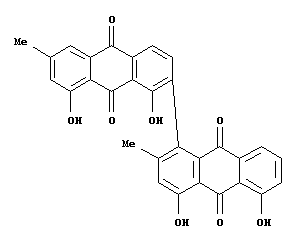
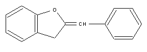
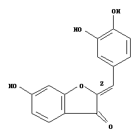
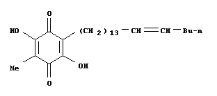
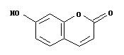
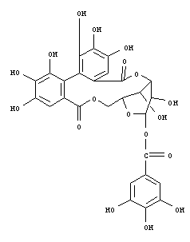

The most important thing to remember when using this (or any other) glossary is that just because some aspect of an organism is dignified by a sesquipedalian term, this by no means signifies that the term refers to an interesting part of "reality". As Hesse et al. (2009b: p. 27) noted "Nature itself neither needs categories nor has any knowledge of them" and "categories are artifical and always delimited by an individual or collective convention". Humans make and define botanical terms, and we use them to facilitate communication, although all too often they seem to be as much an impediment to our understanding as anything else. This raises a second important point. As mentioned in the Introduction, definitions should as far as possible follow current usage, rather than etymology or original definitions (see, e.g. Rickett 1954-56). However, current usage is all too often not consistent, and this is one of the major failings of botanical terminology. As Rickett (1954 p. 2; emphasis in original) noted, "To be uncertain whether "glabrous" means "free from hairs and roughness" or only "free from hairs" is as bad as if π [pi] should stand sometimes for the ratio of a circle to its diameter and sometimes for something else; or as if Cu meant sometimes "copper" and sometimes "brass". Yet this is the state of affairs in botany today". Over forty years later, this is still true (see e.g. Castel et al. 2010 for inflorescences), but we need to attempt to reach consensus, otherwise communication with ecologists and others using botanical information will be seriously hindered.
With any glossary, there is always the question of what to include and what to exclude. We list those terms used in these pages, some of their common synonyms, and also some other terms commonly used in the literature that has been consulted. When there are alternative terms for the one structure, we have chosen the term that seems easiest to use or makes most obvious sense, thus we have prefered "straight" over "orthotropous", since the latter seems almost an oxymoron (even "atropous" would be better...), and "odd-pinnate" for "imparipinnate" since the former is closer to plain language (in english, at least) yet is no less precise. There will always be tensions when it comes to terms used to describe specific features of the sporophytic and gametophytic generations. Thus "nucellus" is prefered over "megasporangium wall", although the latter is technically what a nucellus is, and "embryo sac" over "female gametophyte" since the former term is almost always used in the literature dealing with flowering plants. The definitions agree as far as possible with those in the Plant Ontology Consortium (2004 onwards).
Settling on definitions is often not easy. Thus there is some dispute among wood anatomists over exactly what terms to use and how to define them (c.f. Wheeler et al. 1989; Metcalfe & Chalk 1989; Carlquist 2001, 2010). Other terms have definitions that can be distinguished only with difficulty, or there are alternative sets of terms that can be used when looking at the same structures, but from different points of view (e.g. c.f. a superior ovary and a hypogynous flower), or simply just alternative sets of terms that can be used... Finally, it should not be assumed that the terms below refer to anything real in the world, even when assembled into clean-looking contrast sets (see the Introduction for more discussion).
Since the focus is on terms used when discussing the characters of and relationships between major clades, many of the terms used when describing species are omitted. However, Stearn (1992) remains a particularly useful source for definitions here.
The basic arrangement is alphabetical, however, terms that start with contractions like P-protein, CAM, etc., are to be found at the beginning of the entries for the relevant letter - exceptions are contractions that refer to chemical elements like N[itrogen] and C[arbon]. Prefixes and suffixes are to be found at the appropriate places within the entries for their first letters
The glossary functions hierarchically, and to a certain extent it is like an ontology. If in an entry, one finds "see", this is followed by an enumeration of the terms used in to describe the variants of the structure just described. Thus under accessory buds, one finds "see collateral, superposed", and there are links to these two terms that describe common variants in the arrangement of such buds. c.f., on the other hand, is followed by a listing of contrasting terms used to describe the variants of the structure just described. Thus after the definition of abaxial, we find "c.f. adaxial, lateral, median", so linking to the other terms used to describe the positions of parts of, for example, position in a flower with repect to the axis. However, a few terms are included in contrast sets simply because that is common practice, even if logically they should be excluded.
Thus an entry like "amphiparacytic: of paracytic stomata where the subsidiary cells are parallel to the long axis of the stoma and completely surround the latter, c.f. brachyparacytic" first defines the term, making it clear that it is a subtype of paracytic stomata, to which the reader can go for a definition (and also to stomata, as well as subsidiary cells), while being contrasted with brachyparacytic stomata, the other member of the immmediate contrast set, to which the reader can also go for a definition.
Some synonymy is indicated, e.g. "calcar, calcarate = spur, spurred."
Information for this glossary has been taken from many sources. Informative general morphological glossaries or other sources are Lawrence (1951), Esau (1965, 1977, glossary here particularly useful), Radford et al. (1974), Endress (1994b), Harris and Harris (1994), Hickey and King (2000), Judd et al. (2016), Bell and Bryan (1991, 2008: beautiful illustrations), Beentje (2012) and of course Stearn (1992). Metcalfe and Chalk (1979, 1983) also provide much useful information. Chemical formulae and definitions have been taken from American Chemical Society (2004), Harborne and Turner (1984), Harborne and Baxter (1992), Harborne et al. (1999), Robinson (1991), Siegler (1998, 2004), Smith (1976) and Walton and Brown (1999), see also Berenbaum (1999: furanocoumarins), Connolly and Hill (terpenoids), Glasby (1975-1983: alkaloids), Langenheim (2003: resins), and Schleimann (2004: mycorrhizal biochemistry). For wood anatomy, see Wheeler et al. (1989: hardwoods, see also Miller & Baas 1981 and Miller 1981 for characters, coding and computerization), Richter et al. (2004: softwoods) and Crivellaro and Schweingruber (2015: flowering plants in general), and also InsideWood: An Internet Accessible Wood Anatomy Database http://www.lib.ncsu.edu/insidewoood/, for anatomy and morphology, see Dickison (2000), for stomata, etc., see the Leaf Architecture Working Group (1999), for phyllotaxis, see Jean (1994: Appendix 1), for leaf architecture in general, see Ellis et al. (2009), for leaf teeth, see Hickey and Wolfe (1975), for venation, see Hickey (1979), for life forms, see Raunkiaer (1934), for terms used in canopy biology, see Moffett (2000), for inflorescences in particular, but also much else, see Weberling (1989), for pollen terminology, which is particularly difficult, see Reitsma (1970), Walker and Doyle (1975) and Hesse et al. (2009b, especially useful), for fruit, see Spjut (1994: all his terms are not included below, but his work helped catalyze my thoughts, 2003 onwards), for monocot seedlings, see Tillich (2007), and for hairs and indumentum, see Payne (1978), Hewson (1988), Stearn (1992), etc. And last, but by no means least, the OED (Simpson & Weiner 1989) and Wikipedia have been very helpful!
For variation of the characters defined in the glossary in seed plants, see the "Characters" page.
We built this glossary using the excellent Flora of Australia Online Glossary as our inspiration. We are very grateful to to the Australian Biological Resources Study and also to the artists who drew the illustrations for some of the terms in that glossary for permission to use the Glossary. Selected links to illustrations in the Flora of Australia Online Glossary are included here (indicated by  ); the illustrators of these images are indicated on the images themselves. Gregor Hagedorn and Volker Bittrich in particular have provided useful comments.
); the illustrators of these images are indicated on the images themselves. Gregor Hagedorn and Volker Bittrich in particular have provided useful comments.
a- (prefix): without.
ab- (prefix): away from.
abaxial: of the side or surface of an
organ like a petal or organ system such as a branch, facing away from the axis that bears the organ or organ system, c.f. adaxial, lateral, median, a useful set of positional descriptors.
abscission: the normal shedding from a plant of an organ that
is mature or aged, e.g. a ripe fruit, an old leaf, see also cladoptosis.
acalymmate: of a pollen tetrad or polyad, when the ectexine is separately differentiated on each grain, there being no common covering of the pollen mass, c.f. calymmate.
acaulescent: of habit, without any above-ground stem execept for an inflorescence axis, where present, leaves and inflorescence arising together at ground level, c.f. arborescent, dendroid, frutescent, fruticose, herb, liane, rheophyte, suffrutescent, schopfbaum, shrub, subshrub, tree, vine, see also life forms.
accessory bud(s): one or more buds other than the normal single bud occuring in the leaf axil, c.f. adventitious, supernumerary, see collateral, superposed (arrangement of the buds).
accessory cell = subsidiary cell.
accessory fruits: fruits, whether derived from a single flower or several, with tissue that is other than carpellary in origin, e.g. the hypocarp, see also anthocarp, c.f. aggregate fruits, multiple fruits, simple fruits.
accrescent: continuing to increase in size after maturity, as
the calyx of some plants after flowering, c.f. caducous, deciduous, deliquescent, fugacious, marcescent, persistent.
accumbent: of an embryo that is folded so that the radicle
lies against the edges of the two cotyledons, c.f. conduplicate, diplecolobous, incumbent.
acervulus: a variant of a scorpioid cyme, a monochasial cymose inflorescence
with 2-10 or more sessile flowers borne close together in two vertical rows (Uhl & Moore 1978).
acetate: a salt, ester or the conjugate base of acetic acid.
acetogenins: polyketides derived from acetate with 35-37 carbon atoms in a single almost unbranched chain, substituted by 6-8 oxygen atoms.
Acetogenin-G, C19 H22 O3.
|
Mucoxin, C37 H66 O7.
|
acetylenes: the simplest of a class of straight-chain triple-bonded hydrocarbons, see also cyclopropanes.
achene: specifically, a dry, indehiscent fruit formed
from a superior ovary of one carpel and containing one seed which is free
from the pericarp except at the funicular end, more broadly, dry one-seeded fruits
in general, whether formed from one or more carpels and superior or inferior ovaries, see caryopsis, cypsela, nut, utricle for variants which are also often called simply "achenes".
achlamydeous: of a flower,
lacking a perianth parts, usually best to describe as such, c.f. dichlamydeous, heterochlamydeous, monochlamydeous.
acicular = needle-like.
acorn: a nut or achene sitting in or more or less surrounded by a cup formed by fused bracts, etc. (see Fagaceae).
acro- (prefix): extreme, extremities (e.g. apex).
acrocentric: a chromosome in which the centromere is near one end, the spindle fibers attaching there during nuclear division, c.f. holocentric, metacentric, and telocentric.
acrodromous: of palmate leaf venation, with
two or more primary or strongly developed secondary veins running in convergent
arches towards the apex, c.f. actinodromous.
acrogyny: in monoecious plants with mixed inflorescemces, the female flowers being borne in the apical part of the inflorescence - the unusual condition; rarely used, while basigyny seems never to be used...
acropetal: produced or differentiated in succession towards the apex of an organ, e.g. of an inflorescence, with flowers arising or developing in a sequence beginning at the base and proceeding towards the
apex, see also centripetal, c.f. basipetal.
acroscopic = antrorse.
acrotonic: a branching pattern in which the uppermost buds of a season's growth/innovation grow out most strongly, as in Sassafrass, c.f. basitonic, mesotonic.
acteoside = verbascoside.
actinocytic: of stomata, with five or more somewhat radially enlarged or elongated subsidiary cells surrounding the guard cells, c.f. allelocytic, anisocytic, anomocytic, cyclocytic, diacytic, helicocytic, laterocytic, paracytic, staurocytic, stephanocytic, tetracytic.
actinodromous: of palmate leaf venation, with three or more primary veins arising from at or near the base, ascending or diverging, whether or not reaching the margin, c.f. acrodromous.
actinomorphic = polysymmetrical.
actinostele: a variant of a protostele in which the xylem forms a more or less star-shaped central mass, with phloem between the arms, c.f. haplostele, plectostele.
aculeate = prickly, c.f. muricate.
acumen: of the apex of a structure, a long, narrowly tapering point with convex sides, hence acuminate, c.f. acute, attenuate, apiculum, arista, awn, cuneate, caudate, cuspidate, emarginate, mucronate, muticous, obtuse, retuse, rounded, truncate, c.f. also cordate, hastate, oblique, runcinate, sagittate (esp. of lamina base).
acute: of the apex or base of a structure, terminating in a distinct but not protracted point, the coverging sides concave and joining at an angle of less than 90o, c.f. acumen, attenuate, apiculum, arista, awn, cuneate, caudate, cuspidate, emarginate, mucronate, muticous, obtuse, retuse, rounded, truncate, c.f. also cordate, hastate, oblique, runcinate, sagittate (esp. of lamina base).
acyclic = spiral.
acylation: stabilization by the introduction of an acid radical from acids such as coumaric, ferulic, or caffeic acids into e.g. acylated anthocyanins.
| Cyanidin 3-dimalonylglucoside, C27 H25 O17. |
ad- (prefix): towards.
adaxial: of the side or surface of an
organ like a petal or organ system such as a branch, facing towards the axis that bears the organ or organ system, c.f. abaxial, lateral, median, a useful set of positional descriptors.
addorsed (prophyll) = adaxial (prophyll).
adherent: when tissues or organs of different kinds are stuck together, but without organic fusion, c.f. appressed, adnate, coherent, connate, connivent, fasciate, fasciculate, fastigiate, phalangiate.
admedial: towards the midline of the lamina, c.f. exmedial.
adnate: a type of concrescence when tissues of one organ are organically fused to those of another organ of a different
kind, as a stamen adnate to a petal, c.f. connate, also adherent, appressed, coherent, connivent, fasciate, fasciculate, fastigiate, phalangiate.
Adoxa: an embryo sac type, the types based on variation in megasporogenesis and megagametogenesis, tetrasporic and 8-nucleate, all nuclei haploid, c.f. Allium, Drusa, Endymion, Fritillaria, Oenothera, Penaea, Peperomia, Plumbagella, Plumbago, Polygonum, Schisandra.
aduncate = hooked.
advanced (of characters, not recommended) = apomorphy or derived.
adventitious: arising in "abnormal"
positions and in "exceptional" circumstances, e.g. roots arising from the shoot system, buds arising
elsewhere than in axils of leaves, however, the roots that characteristically occur along the stems of a number of prostrate herbs (as in most monocots = secondary root system), often in fixed positions, are also often called adventitious, which is not at all helpful, see also accessory, supernumerary.
adventitious bud: a bud that develops endogeneously and in a non-axillary position from previously non-meristematic tissue, often in response to damage or changed environmental conditions, c.f. preventitious.
adventitious (poly)embryony: of agamospermous reproduction, the production of an embryo/seed directly from somatic tissue of the ovule without fertilisation, c.f. apogamy, apospory, diplospory, polyembryony.
adventive: introduced to an area recently, whether or not established
c.f. endemic, native, introduced, naturalised.
aerenchyma: tissue incorporating large, gas-filled spaces interspersed
between the cells, often forming characteristic arrangements, c.f. collenchyma, parenchyma, sclerenchyma.
aeschynomenoid: a type of nodule caused by nitrogen-fixing bacteria in Fabaceae, more or less ephemeral, with a subcortical growing zone, oblate, lacking lenticels, and with a narrow point of attachment, c.f. caesalpinioid, crotalarioid, desmodioid, and lupin type.
aestivation: the arrangement of parts in a bud, in particular, in a flower, how sepals
and petals or their lobes overlap relative to one another in an unopened bud, c.f. vernation, see cochleate, contorted, contortiplicate, crumpled, decussate, imbricate, induplicate, open, quincuncial, reduplicate, valvate - some of these can also be used to described how leaves overlap in a bud; see also equitant, convolute, obvolute, see anaphoric and cataphoric (rotation of leaves in bud)..
after-ripening: of germination, when a period of dormancy of the seed and/or growth of the embryo is needed before germination will occur, c.f. recalcitrant.
agamospermy: a kind of apomictic (s.l.) reproduction, the development of seeds from ovules without fertilization, equals apomixis s. str, see adventitious embryony, apospory, diplospory, polyembryony.
aggregate fruit: a cluster of fruits
formed from more than one flower, = multiple fruit, syncarp, so some redundancy here, c.f. accessory fruit, simple fruit.
aglycone: the non-carbohydrate group of a glycoside which appears on its hydrolysis (sometimes called aglucone).
ala, alate = wing, winged.
alar, loosely = axillary (Hickey & King 2000), e.g. see axillary bud, but a confusing term.
albumen = endosperm.
albuminous cell = Strasburger cells.
alditol: a polyol or sugar alcohol with a linear chain of carbon atoms, an acyclic polyol, c.f. cyclitol, see arabitol, dulcitol, glycerol, mannitol, sorbitol and xylitol.
aldose: a monosaccharide or simple sugar with but a single aldehyde (C=O) group, inc. dioses, trioses, pentoses, and hexoses.
aleurone: aleurone layer, the outermost layer(s) of the endosperm (or, according to Werker [1997], the innermost layer of the nucellus), living cells containing proteins, the other cells being more or less dead and with much thickened walls, the lumen being more or less occluded e.g. by galactomannans (a hemicellulose), c.f. chalazal cyst, haustorium, see also aleurone grain, a garin-like structure conating proteins, etc.
aliform: of paratracheal axial parenchyma, the parenchyma cells associated with the vessels forming a wing-shaped mass in transverse section, c.f. banded.
alkanes: simple hydrocarbons, CH3 (CH2)n CH3, where n = 25-35.
alkaloids: organic, nitrogenous-containing bases, usually with a heterocyclic ring of some kind, but with little in common other than the posession of N, usually somewhat basic, and divided into three main categories: 1) true alkaloids - nitrogen-containing heterocyclic compounds derived from an amino acid whence the nitrogen comes, e.g. benzylisoquinoline alkaloids, tropane alkaloids, quinolizidine alkaloids, 2) protoalkaloids - derived from amino acids, again, the nitrogen donor, but lacking a heterocyclic ring, 3) pseudoalkaloids - derived from terpenes, sterols, aliphatic acids, nicotinic acid, or purines, and nitrogen not coming form amino acids. Note that similar alkaloids can have quite different biosynthetic pathways, indeed, alkaloids are rather like species - you know what they are, but cannot define them...
alkannin: a naphthoquinone derived from the p-hydroxybenzoic acid pathway (S = shikonin isomer), the coloring ingredient of alkanet; alkannin paper is an indicator of acidity, alkalis turning the paper blue, acids red (see the color changes as flowers of some Boraginaceae-Boraginoideae age).
allelocytic: of stomata, with an alternating complex of three or more C-shaped subsidiary cells of graded sizes surrounding the guard cells, see diallelocytic and parallelocytic, c.f. actinocytic, anisocytic, anomocytic, cyclocytic, diacytic, helicocytic, laterocytic, paracytic, staurocytic, stephanocytic, tetracytic.
allitol: a carbohydrate product resulting from the reduction of the aldehyde functional group in D-allose.
Allium: an embryo sac type, the types based on variation in megasporogenesis and megagametogenesis, bisporic (the chalazal dyad) and 8-celled, all nuclei haploid, c.f. Adoxa, Drusa, Endymion, Fritillaria, Oenothera, Penaea, Peperomia, Plumbagella, Plumbago, Polygonum, Schisandra.
allogamy: fertilisation involving gametes from different flowers or plants, a rather vague term, c.f. cross pollination, geitonogamy, c.f. also autogamy, self pollination.
allopatric: of the distributions of two taxa or populations, when the areas inhabited are mutually exclusive, c.f. parapatric, sympatric.
allopolyploid: a plant with a chromosome number that is the product of the addition of the diploid numbers of the parent plants, hybridisation having been involved, c.f. aneuploid, autopolyploid, demiduplication, diploid, dysploid, endopolyploidy, haploid, polyploid.
allorhizic: of the basic orientation of the embryo, in which the root is lateral with respect to the shoot/longitudinal axis of the embryo, c.f. homorhizic.
alternate: of leaves or other lateral
organs, borne singly at different heights on the axis, when used to describe leaf insertion, often vague (and so not recommended), including the more precise spiral and distichous, c.f. also bijugate, decussate, opposite, pseudoverticillate, spiromonistichous, tristichous, whorled.
alternate: of floral parts, with members of adjacent whorls borne on alternating radii, e.g. used when describing the position of
stamens with respect to petals (alternipetalous), sepals (alternisepalous), etc., c.f. opposite.
alternate: of pits, when they are in diagonal rows and, when crowded, hexagonal in surface view, c.f. opposite.
alternation of generations: the characteristic life cycle of land plants or embryophytes: the haploid plant body produces gametes via mitotic divisions, the gametes fuse producing the multicellular diploid sporophyte, this produces haploid spores after meiotic events, and the spores germinate to produce the multicellular haploid gametophyte again; a haplodiplontic life cycle.
alveolate: pitted or honeycombed on the surface or throughout the structure, esp. for seeds, c.f. aulacospermous, bothrospermous, also ruminate, condyle.
alveolaee: of a pollen grain, with chambers in the infratectum of the ectexine that are surrounded by more or less complete partitions, hence alveolate pollen, c.f. columellate and granulate.
amb: a general pollen shape descriptor, the outline as seen in polar view, c.f. boat-shaped, globose, oblate, prolate, spherical, terms used for the outline as seen in equatorial view.
ambo- (prefix), = both.
ambophilous: pollinated by two different classes of pollinators, e.g. by both wind and animals (insects), c.f. anemophilous, hydrophilous, zoöphilous.
ament = catkin, amentiferous = catkin-bearing.
amine: amino acid with the carboxyl group removed - very smelly!
amoeboid: of tapetum, where the walls break down, the protoplasts enter the anther sac, fuse, and form a syncytium (= plasmodium?) around the developing microspores or pollen, c.f. glandular and invasive.
amorphic = haplomorphic.
amphi- (prefix): both, two, complete - so rather confusing.
amphianisocytic = helicocytic.
amphibious: a plant growing both in water and on land depending on the season, etc., c.f. aquatic, epilithic, epiphytic, lithophytic, terrestrial.
amphicarpy: producing two kinds of fruit, one aerial and one subterranean (or amphi-geocarpy), see also geocarpy, heterocarpy.
amphicribral: vascular bundles with phloem completely surrounding the xylem, c.f. amphivasal, bicollateral, collateral, also internal phloem, intraxylary phloem.
amphimixis: reproducing sexually, see androgenesis and gynogenesis (variants), c.f. apomixis s. str.
amphiphloic: of a vascular bundle that is surrounded by phloem, the xylem being in the middle, as in a dictyostele, c.f. ectophloic.
amphistomal: where the two integuments are at about the same level at the micropyle of an ovule, c.f. bistomal, endostomal, exostomal, naked, zigzag.
amphistomatic: of leaves in which stomata are borne on both sides, c.f. epistomatic and hypostomatic.
amphithecium: in bryophyte embryogeny, the outer layer of cells produced by the oblique periclinal divisions of the quadrant cells,
see also endothecium.
amphitropous: of an ovule, the chalaza basal and the rest of the ovule including the embryo sac being bent as the hypostase into the main body of the ovule, the micropyle ending up next to the funicle, c.f. anatropous, atropous, campylotropous, circinotropous, hemitropous.
amphivasal: of vascular bundles, with xylem completely surrounding the phloem, c.f. amphicribral, bicollateral, collateral, also internal phloem, included phloem.
amides: a nitrogen containing compound formed by the reaction of of an amine and a carboxylic group to form a -CONR2 group, c.f. amines, ureide.
amines: amino acids minus their carboxyl groups, c.f. amides, ureide.
amplexicaul: of a leaf base, clasping and more or less encircling the stem yet free from it, c.f. perfoliate.
amyloid: a storage polysaccharide that stains blue, sometimes other colours, with iodine/potassium iodide solution, c.f. callose, cellulose, hemicellulose, inulin, pectin, polyol, starch.
amylopectin: a more or less coiled and branched major element of starch, insoluble in water, made up of intermediate-sized α1,4 linked glucose units that are joined to longer spacer glucans by α1,6 linkages, c.f. amylose.
amyloplast: a leucoplast in which carbohydrate is stored as starch grains, see also spiranthosome, c.f. elaioplast, proteinoplast.
amylose: a more or less coiled but essentially unbranched minor element of starch, soluble in water, made up of small alpha glucose units, the synthesis of which is associated with granule-bound starch synthase, c.f. amylopectin.
ana-: (prefix), a positional term for pollen apertures, when they are located at or towards the distal pole, distal in the context of the orientation of the grain in the tetrad, c.f. cata-, encircling, panto-, and stephano-.
anadromous: of fronds in ferns in particular, when the first lateral veins of a pinna/lobe develop acroscopically, i.e. on the side towards the apex, c.f. catadromous.
analogy: similarity between two structures because they have the same or a similar function, c.f. homology, homocracy, homoeology, paralogy, serial homology.
anaphoric: of distichous shoots, the lamina in bud rotated towards the upper side of the shoot, i.e. towards the parental axis of the shoot, or in spiral shoots, rotated towards the next younger leaf, so facing up the genetic spiral (Charlton 1994), seems basically the same as anodic, see also aestivation, c.f. cataphoric.
anaphyletic: a taxon made up of members which, given a particular phylogenetic network and classification based on it, include mainly the descendents of a common ancestor, but one member has hybridized with a member of a coordinate group and is included in that group and another member hybridizing with a member of another coordinate group is included here, c.f. epiphyletic,
monophyletic, paraphyletic, periphyletic, polyphyletic.
anastomosis: fusion to form a network, e.g. of veins in
a leaf blade.
anasulcate: of pollen grains, a common form having an
elongate aperture at the distal pole of the grain, distal in the context of the orientation of the grain in the tetrad, c.f. colpate, colporate, inaperturate, omniaperturate, porate, pororate, sulcate, sulculate, tenuitate, trichotomosulcate, ulcerate and zona-aperturate.
anatomy: internal structure, sometimes opposed to morphology, which is then restricted to external form.
anatropous: of an ovule, inverted 180o so that the chalaza is apical and the micropyle is basal and
faces the placenta, the body of the ovule being parallel to the funicle, c.f. amphitropous, atropous, campylotropous, circinotropous, hemitropous.
anauxotelic: applied to inflorescences,
parts of inflorescences or axes that terminate in a flower, and in
which growth does not continue beyond the flowering region, see also cyme, c.f. auxotelic.
ancestral: of a character, a feature of a clade more basal on the tree than that with which it is (implicitly) being contrasted, c.f. derived, c.f. also plesiomorphic.
ancipital, ancipitous = flattened and two-edged.
androdioecious: having perfect and staminate flowers on
separate plants, probably very rare (most apparent examples are functionally dioecious), c.f. andromonoecious, dioecious, gynodioecious, gynomonoecious, homoecious, monoecious.
androecium: collectively the stamens of one flower, c.f. gynoecium, perianth, see diadelphous, fasciculate, monadelphous, phalangiate, syngenesious (connation, etc.), see also didynamous, tetradynamous (different lengths), see also diplostemonous, haplostemonous, obdiplostemonous, obhaplostemonous (general arrangement), also dicycly, obmonocycly, monocycly (general arrangement, but based on putative origin, see Ronse de Craene 2010).
androgenesis: a variant of apomixis s. str. (or amphimixis, I suppose), in which a haploid male gamete in maternal cytoplasm produces an embryo, c.f. gynogenesis.
androgynophore: a receptacular stalk bearing both the androecium and gynoecium
of a flower above the level of insertion of the perianth, c.f. androphore, anthophore, gynophore, stipe.
androgynous: having staminate and carpellate flowers in the same inflorescence, a variant of monoecious.
andromedotoxins: a class of diterpenes causing poisoning in animals.
Rhodojaponin VI, C20 H34 O7.
|
Grayanotoxin, C22 H36 O7.
|
andromonoecious: having perfect and staminate flowers on the same
plant, c.f. androdioecious, dioecious, gynodioecious, gynomonoecious, homoecious, monoecious.
androphore: a stalk or tube bearing separate stamens at its apex, c.f. androgynophore, anthophore, gynophore, stipe.
androspore: one of the two kinds
of spores produced after meiosis in an heterosporous plant and on germination giving rise to the male
gametophyte, in angiosperms, a uninucleate pollen grain, see prepollen, true pollen, c.f. megaspore = microspore.
anemo- (prefix): wind.
anemochory: dispersal of diaspores by wind, c.f. atelochory, autochory, hydrochory, myrmecochory, ombrohydrochory, zoochory, see also diplochory.
anemophilous: pollinated by wind, c.f. ambophilous, hydrophilous, zoöphilous.
aneuploid: a plant with a chromosome number that is not an exact multiple of the haploid number of related plants, but is clearly similar to it, c.f. allopolyploid, autopolyploid, diploid, dysploid, endopolyploidy, haploid, polyploid.
angiosperm: a seed-bearing plant with
the ovules borne enclosed by a megasporophyll whose margins are variously fused, i.e., the ovules are enclosed in an ovary, c.f. gymnosperm.
angiospermy type 1: in which the carpel is occluded by secretion (see Endress & Igersheim 2000 for definitions of angiospermy types).
angiospermy type 2: in which the carpel has a continuous secretory canal, so ultimately occlusion by secretion, and there is partial postgenital fusion at the periphery.
angiospermy type 3: in which the carpel is closed by complete postgenital fusion, but there is a secretory canal that opens internally only at the inner angle of the ventral slit.
angiospermy type 4: in which the carpel is completely closed by postgenital fusion.
angle of divergence: in a genetic spiral/parastichy, the smaller angle relative to the stem circumference separating the points of origin of two successively initiated leaves, c.f. phyllotactic fraction.
angular coumarin: a fumarocoumarin in which the furan ring is at an angle to the benz-2-pyrone nucleus, as in angelicin, usually not phototoxic, c.f. linear coumarin.
angustiseptate: a fruit flattened at right angles to the septum so the septum crosses the narrowest part of the ovary,
c.f. latiseptate.
anhydrobiosis: the ability of an organism to undergo essentially complete yet reversable dehydration at some stage of its life history (the plant is an anhydrobiote), see diallagyresurrection plant.
aniso- (prefix): unequal.
anisocytic: of stomata, with three subsidiary cells, two large and one smaller, surrounding the guard cells, c.f. actinocytic, allelocytic, anomocytic, cyclocytic, diacytic, helicocytic, laterocytic, paracytic, staurocytic, stephanocytic, tetracytic.
anisomerous: with an unequal number of parts in the separate whorls of a flower, although if the gynoecial whorl only differs, this may be ignored, c.f. isomerous.
anisophyllous: having leaves of very different sizes and/or shapes at the same node, c.f. heteroblastic, heterophyllous, juvenile.
anisoporous: of a plant producing two sizes
of spores within the one sporangium, c.f.
heterosporous, homosporous.
annual: of a life span, one that ends within
one year after germination, e.g. a winter annual germinating in the autumn and flowering in the spring (esp. in Mediterranean climates), approximately synonymous to therophyte, c.f. biennial, ephemeral, perennial, c.f. also of flowering with respect to plant architecture, hapaxanthic, monocarpic, pleonanthic.
annular: arranged in or forming a ring.
annulus: in ferns, the elastic ring of more or less U-thickened cells in the sporangium wall that initiates dehiscence, forming the stomium.
annulus: an area of the exine of a pollen grain surrounding a pore.
anodic = ascending.
anomalous: a rather vague term of convenience, e.g. kinds of secondary growth that differ from the "ordinary" ones.
anomocytic: of mature stomata lacking differentiated subsidiary cells surrounding the guard cells, c.f. actinocytic, allelocytic, anisocytic, cyclocytic, diacytic, helicocytic, laterocylic, laterocytic, paracytic, parallelocytic, staurocytic, stephanocytic, tetracytic, also, in a more general classification, c.f. paracytic s.l. and stephanocytic s.l..
ante- (prefix): in front of, before, e.g. antepetalous inserted in front of (adaxially to, "opposite") the petals, antesepalous, the same for the sepals.
anterior (as used of floral organs) = abaxial, c.f. posterior.
anther: the pollen-bearing part of a stamen, with which its connective is usually described as being basifixed, centrifixed, dorsifixed, embedded, or
versatile as it joins the filament, made up of a number of sporangia, in angiosperms these typically in pairs or thecae, opening by slits or ostioles, pores or valves in either the extrorse, latrorse or introrse directions , the wall often following the basic, dicotyledonous, monocotyledonous or reduced types of development, surrounding the tapetum, in turn surrounding the meiocyte, pollen, etc. (depending on the developmental stage of the male gametophyte).
antheridium: the fertile organ of a
male gametophyte or the male organ of a bisexual gametophyte, in which
male gametes are formed, c.f. archegonium.
antherode: the non-funational anther of a staminode.
antherozoid: a flagellated male gamete.
anthesis: the time of full opening of a flower when pollen is presented and/or the stigma is receptive.
anthocarp: a true fruit surrounded by all or just the
base of the perianth, as in Nyctaginaceae and many Rosaceae-Pomoideae, really a particular kind of accessory fruit, but perhaps a term of some use, if used consistently, e.g. including fruits with persistent sepals, as in Dipterocarpaceae, see also hypocarp, c.f. aggregate fruit, multiple fruit.
anthochlors: a group of usually yellow flavonoids made up of aurones and chalcones, yellow pigments that turn red in an alkaline solution of, say ammonium, or with cigarette or cigar smoke.
anthoclade: a leafy inflorescence with extended growth and elongating internodes, looking rather like a vegetative branch.
anthocorm theory: a theory of the (parallel) evolution of the angiosperm flower from a polyaxial seed fern structure with a conspicuous main axis bearing unisexual gonoclads stubtended by bracts (Meeuse 1978), c.f. the gonophyll theory, see also phyllosporous and stachysporous.
anthocyanidins: a class of coloured anthocyanin aglycones (i.e. lacking the sugars) formed from flavan-3,4-diols, also when proanthocyanidins are hydrolyzed with acid (note that they are not formed from proanthocyanidins in the plants); major determinant of flower colour.
anthocyanins: a class of flavonoids based on the cyanidin structure, differing in the presence or absence of hydroxyl groups by methylation or glycosylation (they have sugars at position 3 and sometimes elsehwere), forming red-, pink-, purple- and blue-colored pigments, one of the two main pigment types, c.f. carotenoids.
Anthocyanin base.
|
Pelargonidin, C15 H11 O5.
|
Delphinidin, C15 H11 O7 Cl.
|
Cyanidin, C15 H11 O6.
 |
anthophore: a receptacular stalk bearing the corolla, androecium and gynoecium
of a flower on a stalk above the level of insertion of the calyx, c.f. androgynophore, androphore, gynophore, stipe.
anthotaxis: the arrangement of flowers along the stem, especially as they are initiated at the shoot apex, when bracts are absent, getting at the same thing as phyllotaxis.
anthotelic = determinate.
anthoxanthins: yellow, cream or colorless flavonoids occuring in cell saps.
| Anthoxanthin, C21 H20 O12 |
anthraquinones: quinones in which the aromatic ring is fused to both sides of a benzoquinone ring, occuring as glycosides in plants, often colored.
Anthraquinone, C14 H8 O2.
|
Chrysophanol, C15 H10 O4.
|
Asphodelin, C30 H18 O8.
 |
anti- (prefix): opposite to.
anticlinal: e.g. of cell walls, those at right angles to the surface of the organ, c.f. periclinal.
anticous: as used of floral organs, = abaxial, c.f. posticous.
antidromous: of the genetic spiral in a plant, when it changes direction along an axis, c.f. heterodromous and homodromous.
antipetalous: inserted in front of (adaxially to, "opposite") the petals.
antipodals: cells, commonly three in number as in the eight-nucleate embryo sac, located at the other end of the embryo sac from the female gamete, more or less persistent, multiplicative or not, c.f. also central cell, egg apparatus, petasus, polar nuclei, synergids.
antiraphe: on the other side of the ovule to the raphe, c.f. also chalaza, funicle, embryo sac, integument, lagenostome, megaspore, micropyle, nucellus, pollen chamber, obturator.
antirrhinoid (of a floral aestivation) descending cochleate.
antisepalous: inserted in front of (adaxially to, "opposite") the sepals.
antitropous: of the curvature of an ovule with respect to the carpel margin that bears it, curvature in the opposite direction to the curvature of the margin, i.e. the opposite direction to that of carpel closure, c.f. syntropous, see also apotropous, epitropous, pleurotropous.
antitropous: of the folding of the leaf blades of leaves on opposite sides of the stem in Marantaceae, the same side of the leaf being inrolled inside the other (actually different sides if the leaves are considered individually!), c.f. homotropous.
antrorse: bent, and pointing towards the
apex, c.f. retrorse, erect.
apert = open.
aperture: a distinctly delimited part of a pollen grain in which thick intine is covered by thin exine and through which the pollen tube emerges, whether a compound or simple aperture, see colpate, inaperturate, omniaperturate, colporate, porate, pororate, sulcate, sulculate, tenuitate, trichotomosulcate, ulcerate and zona-aperturate, of apertures, see also operculum, pontoperculum (covering of aperture), also ana-, cata-, encircling, panto-, and stephano- (distribution of the aperture(s) with respect to the basic polarity of the pollen grain), also ectoaperture, endoaperture, also Fisher's rule, Garside's rule (distribution of apertures), annulus and oncus (elements of apertures), and pollen buds (oddities).
apetalous: without petals, c.f. polypetalous, sympetalous.
apical: of the placentation or arrangement of the ovules in an ovary of a syncarpous gynoecium, at the top of the ovary, and hence the ovules pendulous, c.f. axile, basal, free central, laminar, marginal, parietal.
apical cell: the upper (chalazal) cell formed after the first division of the zygote, which further divides to produce the bulk of the embryo proper, c.f. basal cell.
apical hook: a hook-like structure which develops at the apical part of the
of an hypocotyl in dark-grown seedlings of broad-leaved angiosperms with epigeal germination.
apical meristem: the meristem at the apex of stem or root, of which the ground meristem, intercalary meristem, procambium, protoderm can rather loosely be considered parts, c.f. lateral meristem, see root apical meristem, shoot apical meristem, also initial and morphogenetic zones (terms describing cytohistological differentiation that can be applied to all land plants), and histogens (descriptors used in an old theory of the construction of the apical meristem); see also Erstarkungswachstum.
apiculum: a short, abrupt, flexible point, adj. apiculate, but it has other meanings as well, and overall it is better replaced (along with cuspidate) by a suitably-qualified mucronate (see Rickett 1956), c.f. acumen, acute, attenuate, arista, awn, cuneate, emarginate, muticous, obtuse, retuse, rounded, truncate, c.f. also cordate, hastate, oblique, runcinate, sagittate (esp. of lamina base).
apigenin: a deoxyanthocyanin occurring in leaves and flowers.
apo- (prefix): separate, c.f. syn-.
apo- (prefix): the polar region of a zonoaperturate pollen grain delimited by lines connecting the apices of the apertures, c.f. meso-.
apocarpous: of the gynoecium, consisting of two or more
carpels which are initially free from one another, or a single carpel (see monomerous, but not a pseudomonomerous gynoecium), see paracarpous, coenocarpous, syncarpous.
apocole: of a monocot seedling, the elongated, usually subterranean and non-photosynthetic part of the cotyledonary hyperphyll below the haustorium and above the cotyledonary sheath, c.f. haustorium/scutellum, phanomer, see also mesocotyl, coleorhiza, hypophyll (cotyledonary sheath, coleoptile), collar (epiblast, periblast).
apogamy: of agamospermous reproduction, the asexual formation of seed, c.f. adventitious embryony, apospory, diplospory, polyembryony.
apogeotropic: of roots which grow upwards, c.f. geotropic.
apomixis: of reproduction, in the strict sense the production of viable offspring without fertilisation, equals agamospermous above (see adventitious embryony, apospory, diplospory, polyembryony), or, in a more general sense (preferred), includes the production of vegetative propagules, i.e. vegetative reproduction (for which, c.f. amphimixis).
apomorphy: of a character, derived, an evolutionary novelty arising in the immediate ancestor of a clade and characterising it, c.f. autapomorphic, plesiomorphic, synapomorphic, see also key innovation.
apomorphy-based: a way of defining a clade in which an apomorphy is the defining point, e.g. the clade stemming from the first species to possess character A (as found in a particular exemplar species), c.f. node-based, stem-based.
apopetalous = polypetalous.
apoplast: the continuum formed by the interconnected cell walls in plants, c.f. symplast.
apoptosis: programmed cell death.
aporphine alkaloids: group of isoquinoline alkaloids.
aposematic: of insects, etc., with a warning colouration, perhaps because they are loaded with noxious plant secondary metabolites that they have sequestered, c.f. cryptic.
apospory: a kind of agamospermy where unreduced embryo sacs develop from ovular tissue, c.f. adventitious embryony, apogamy, diplosporypolyembryony.
apostapetalum: referring to that part of the corolla tube and lobes above the zone with fused/adnate stamens, a term of dubious utility, c.f. stapetalum.
apotact: of cochleate aestivation, the petal with its two edges outside those of the adjacent petals not immediately next to the one with the two edges both inside, c.f. ascending, descending, and paratact.
apotracheal: of axial parenchyma, parenchyma not associated with the vessels, see banded, boundary, diffuse, c.f. paratracheal (aliform, banded).
apotropous: of the curvature of an ovule with respect to the ovary axis, abaxial, c.f. epitropous, pleurotropous, see also antitropous, syntropous.
appendage: a general term for any structure that is not one of the conventional parts of an angiosperm plant that arises from the surface of another.
appendicular: of tissues or parts of the plant formed from leaves or structures considered "homologous" with them, c.f. axial.
appendicular epigyny: of epigyny, when the floral apex is initially convex, but it early flattens and a central concavity develops due to toral upgrowth of the floral cup. i.e. due to development of appendicular tissues (Kuzoff et al. 2001), c.f. receptacular epigyny.
apposition: of branching, as in the formation of a plagiotropic branching system by a series of units, each consisting of a vigorous axillary branch that is initially plagiotropic but whose apex becomes orthotropic, the terminal meristem still remaining active, as in plagiotropy by apposition as in Terminalia branching, c.f. substitution.
apposition: in cell wall formation, growth by deposition of layer after layer of wall material, c.f. intussusception.
appressed: pressed closely against a surface, often that of another organ,
but not united with it, c.f. adherent, adnate, coherent, connate, connivent, fasciate, fasciculate, fastigiate, free, phalangiate.
aquatic: a plant living in or on water for all or a substantial part
of the life span, c.f. amphibious, epilithic, epiphytic, epiphyllous, terrestrial.
arabinose: (C5 H9 O4)-OH - an aldopentose epimeric with ribose at the 2 carbon, occurring naturally in both D- and L-forms, widely distributed in the form of complex polysaccharides, glycosides, and mucilages; arabinoside is a glycoside of arabinose and occurs widely in plant species as a component of sugars, also in gum arabic.
arabitol: the polyol form of the preceding (an alditol), a polyol, c.f. arabitol, glycerol, mannitol, sorbitol and xylitol.
arachnoid: especially of hairs, looking rather like a tangled spider's web, c.f. arachnoid, arbuscular, canescent, hirsute, hispid, hirsute, lepidote, puberulous, pubescent, sericeous, stellate, strigose, tomentose, T-shaped, villous, see also glabrescent and glabrate, which refer to stages in the loss of these hairs.
arborescent: of habit, resembling a tree, a term applied
to non-woody plants attaining tree height and to shrubs tending to become
tree-like in size, c.f. acaulescent, dendroid, frutescent, fruticose, herb, liane, rheophyte, suffrutescent, schopfbaum, shrub, subshrub, tree, vine, see also life forms.
arbuscular: hairs looking more or less stalked and branched, c.f. arachnoid, canescent, hirsute, hispid, hirsute, lepidote, puberulous, pubescent, sericeous, stellate, strigose, tomentose, T-shaped, villous, see also glabrescent and glabrate, which refer to stages in the loss of these hairs.
arbuscular: a branching, more or less tree- or shrub-like mass of fungal coils inside a plant cell in endo- and perhaps also ectendomycorrhizae.
arbuscular mycorrhiza: an endomycorrhizal association between a fungus and a plant root where the fungal hyphae form coils and/or arbuscules or arbusculate coils within the plant cell, see also Arum and Paris types, c.f. VAM.
arbutin: a benzoquinone.
archegonial chamber: a cavity or space between the megasporangium and the female gametophyte, c.f. egg, neck, venter.
archegonium: the fertile organ of a female gametophyte or the female organ of a bisexual gametophyte of an embryophyte, in which
female gametes or eggs are formed, see archegonial chamber, neck, venter, and egg, c.f. antheridium.
archesporium = tissue that gives rise to megasporocytes or microsporocytes as well as parietal tissue, including the endothecium (in the anther) and the nucellar tissue (in the ovule).
arcuate: curved like a bow.
areole: any small, discretely bounded area;
a cluster of hairs/spines/bristles borne at the node of (in Cactaceae) a usually leafless stem; in Fabaceae-Mimosoideae a distinct, oblong or elliptical area
on the face of a seed, bounded by a fine line, the linea fissura; in leaf venation, the space bounded by the finest veins on the lamina, adj. areolate.
aril: in the strict sense, an often fleshy outgrowth partly or wholly covering a seed
and developed from the funicle or raphe, but also used more generally to refer to a similar structure derived from any part of the ovule as arillode and arilloid, adj. arillate, c.f. arillode, caruncle, coma, elaiosome, sarcotesta, strophiole. There has been much and sometimes acrimonious debate over the correct definition of the term, but it seems that "aril", rather like obturator, podium, ponticulus, postament, is best used rather broadly, with its origin being given for clarity.
arillode: not a very useful term - a fleshy structure partly or wholly covering a seed
and developed from any part of the ovule, or an elaborate structure at the micropylar end of the seed (Bell & Bryan 2008), c.f. aril, caruncle, elaiosome, sarcotesta, strophiole.
arilloid: also used to refer to a fleshy structure partly or wholly covering a seed
and developed from any part of the ovule, the same as aril in the broad sense, see aril s. str., arillode, caruncle, elaiosome, sarcotesta, strophiole.
arista: of the apex of a structure, having a stiff, bristle-like awn or tip, adj. aristate, c.f. acumen, acute, attenuate, apiculum, awn, cuneate, caudate, cuspidate, emarginate, mucronate, muticous, obtuse, retuse, rounded, truncate, c.f. also cordate, hastate, oblique, runcinate, sagittate (esp. of lamina base).
aristolochic acid: a phenanthrene-carboxylic acid derivative of a benzoisoquinoline precursors.
| Aristolochic acid, C17 H11 N O7. |
article: a segment of a jointed stem, or of a fruit with constrictions
between the seeds.
articulated: jointed, e.g. the more or less swollen apex of a petiolule in particular that has a line across the broadest part, with separation commonly occuring
here when the leaflets fall, articulation, c.f. pulvinus; of a stem, having prominent nodes.
articulated laticifer: of a laticifer, developing from more than one cell, unbranched or branching, anastomosing and with cross walls, c.f. non-articulated.
Arum-type arbuscular mycorrhiza: an arbuscular mycorrhizal association between a fungus and a plant root where the fungal hyphae are intercellular, and also form coils, pelotons and particularly branched arbuscules within the plant cell, see also Paris type.
arylphenalenones: phenalenones with aryl radicals, pigments found in Haemodoraceae, derived from 9-phenylphenalenone.
ascending: growing erect after an oblique or semi-horizontal
beginning, c.f. decumbent, erect, procumbent, repent, or a stem growing about 45-60° from the horizontal, c.f. orthotropic, plagiotropic.
ascending: the side of a leaf that is towards the younger leaves in the genetic spiral, c.f. descending.
ascending cochleate: cochleate aestivation in which one petal has its two edges outside those of the adjacent petals, one has its two edges both inside, and the other petals have one edge outside and the other inside, the petal with the two edges outside being in the adaxial-median position (e.g. Fabaceae-Faboideae), c.f. descending, and apotact, paratact.
ascidiate: pitcher-shaped, more or less tubular and often widening towards a flared mouth and then subpeltate, esp. used of the leaves of several carnivorous plants, see epiascidiate, hypoascidiate, or of carpels, c.f. conduplicate.
asexual (of reproduction) = apomixis s. lat., sometimes equated with vegetative reproduction.
asperulate: slightly rough to the touch.
asphodelin: a yellow colored anthraquinone.
astrosclereid: a sclereid cell with rather short, stout radiating branches, c.f. filiform sclereid, brachysclereid, macrosclereid, osteosclereid, trichosclereid.
asymmetric: with no plane of symmetry, such that dividing the structure down its axis does not produce mirror-image or identical halves, e.g. oblique leaf bases; when considering floral asymmetry, there are two main kinds, one is not very striking and is found in the haplomorphic flowers of e.g. Magnolia, where the halves are very similar, but not identical, the differences seemingly being inconsequential(!), and the other, as in Canna, is more striking, and the asymmetry, primarily in the androecium and gynoecium, is clearly connected with the pollination mechanism, see also enantiomorphic, enantiostylous, c.f. disymmetric, monosymmetric, oblique, polysymmetric.
atactostele: a stele in which the vascular bundles are scattered through the ground tissue, c.f. eustele, dictyostele, protostele, siphonostele.
atavism: a teratum that is a throwback to an ancestral condition - in the past teratology was popular in part because terata were supposed to be such throwbacks (or it was hoped that they would be).
atectate: pollen in which the sexine is represented only by isolated baculae, pilae, granules or other elements, c.f. semitectate, tectate.
atelochory: diaspores without any dispersal mechanism, c.f. anemochory, autochory, hydrochory, myrmecochory, ombrohydrochory, zoochory, see also diplochory.
atropous: a erect, straight ovule with funicle, chalaza and micropyle in a straight line, c.f. amphitropous, anatropous, campylotropous, circinotropous, hemitropous.
attenuate: tapering gradually to a point, a vague term that is probably better replaced by narrowly acute or acuminate where appropriate, c.f. acumen, acute, apiculum, arista, awn, cuneate, caudate, cuspidate, emarginate, mucronate, muticous, obtuse, retuse, rounded, truncate, c.f. also cordate, hastate, oblique, runcinate, sagittate (esp. of lamina base).
aucubin: a bitter-tasting route II decarboxylated iridoid.
aulacospermous: referring to seeds in which individual endothelial cells protrude into the endosperm, the endosperm becoming alveolate (it may appear to be ruminate in cross section), c.f. bothrospermous.
aureol: a phytoalexin.
auricle: an ear-shaped appendage at the junction of leaf sheath and blade (as in grasses), or the base of a leaf, leaflet
or corolla lobe, adj. auriculate.
aurones: golden-colored flavonoids isomeric with c.f. flavones with Z-sterochemistry at the double bond, often found in flowers, c.f. chalcones; they are anthochlors.
Aurone base.
 |
Benzofuranone, C15 H10 O2.
|
Sulfuretin, C15 H10 O5.
 |
autapomorphic: of a character, derived, an evolutionary novelty of a terminal clade in a particular study, at a finer level of analysis a synapomorphy of all members of that clade, c.f. also apomorphic, plesiomorphic, synapomorphic, see also key innovation.
auto- (prefix): self, alone, single.
autochory: dispersal of diaspores without the aid of any external agent, e.g. by explosive dehiscence of the fruit, c.f. anemochory, atelochory, hydrochory, myrmecochory, ombrohydrochory, zoochory, see also diplochory.
autoecious: referring to rust fungi in which the aecial and telial stages are on the one host plant, c.f. heteroecious.
autogamy: pollination and fertilisation occuring by pollen from within the same flower, c.f. allogamy, cross pollination, c.f. also geitonogamy, self pollination.
autopolyploid: a plant with a chromosome number that is a multiple of base number (n) of its parent, hybridisation not being involved, represented as 3x, 4x, etc., c.f. allopolyploid, aneuploid, diploid, demiduplication, dysploid, endopolyploidy, haploid, polyploid.
autotroph: an organism independent of others
in respect of organic nutrition, being able to fix carbon dioxide by photosynthesis,
to form carbohydrates, c.f. biotroph, hemiparasite, heterotroph, hyperparasite, mixotroph, myco-heterotroph,
parasite, saprobe/saprophyte/saprotroph.
autumn wood = late wood.
auxoblast = long shoot.
auxotelic: applied to inflorescences,
parts of inflorescences or to axes that do not end in a flower, and in
which growth continues beyond the flowering region, c.f. anauxotelic, see also raceme.
awn: of the apex of a structure, a long bristle-like appendage, e.g. on the tip or back
of the lemma or other spikelet part of a grass, c.f. acute, attenuate, acumen, apiculum, arista, cuneate, caudate, cuspidate, emarginate, mucronate, muticous, obtuse, retuse, rounded, truncate, c.f. also cordate, hastate, oblique, runcinate, sagittate (esp. of lamina base).
axicorn: tissue on the inside of the fruit of Campanulaceae-Campanuloideae which moves as it dries and perforates the fruit wall, so allowing the dispersal of the seeds.
axial: of tissues or parts of the plant formed from stem (or root) or structures considered "homologous" with them, c.f. appendicular.
axial bundle: a major vascular bundle of a sympodium, c.f. leaf gap, leaf trace.
axial parenchyma: longitudinally-elongated parenchyma cells in among the tracheary tissue, see aliform, apotracheal, banded and paratracheal, c.f. ray parenchyma.
axicorn: a structure involved in the dehiscence of some caspsules which on drying causes holes, flaps, or slits to appear in the walls.
axil: the angle formed by an axis and a leaf borne on it,
it, adj. axillary.
axile: of the placentation or arrangement of the ovules in an ovary of a syncarpous gynoecium (inapplicable if the gynoecium is pseudomonomerous), with septae separating loculi, the ovules being borne on the central axis, c.f. apical, basal (these two really just variants of axile placentation), free central, laminar, marginal, parietal.
axillary bud/branch: a bud (or buds) or branch in the axil of a leaf that subtends it, see serial, number of buds, c.f. leaf-opposed, supra-axillary, position of buds, also dichotomous, type of branching, also cauliflorous, ramiflorous, terminal, of inflorescence or infructescence position, also concaulescent, epicaulescent, see recaulescent, variants of axillary branching.
axis: a stem, the term being commonly used for the main stem of a plant
or of an inflorescence, see inflorescence axis.
azetidine-2-carboxylic acid: C4 H7 N O2, a non-protein amino acid, an alpha-amino acid with a primary -imino group (-NH) and a carboxyl group attached to the same carbon atom.
baccate: berry-like, not strictly a berry, or the adjectival form of berry.
baculum (Erdtman term): in pollen, a cylindrical, free standing element of exine/sexine element more than 1µm in length and less than this in diameter (baculae, baculate), c.f. columella, and because a baculum supports nothing, it is an element of pollen ornamentation, c.f. also echinate, fossulate, gemmate, foveolate, pilate, lophate, psilate, reticulate, retipilate, rugulate, scabrate, striate, verrucose.
banded: of axial parenchyma, the parenchyma cells forming bands, whether or not associated with vessels, i.e. either apotracheal, c.f. boundary, diffuse, or paratracheal, c.f. aliform.
banner: of a petal = standard.
barbed: terminal or lateral retrorse
projections on a structure, each projection being a barb, c.f. glochidiate; barbellae, short, straight, stiff hairs or barbs, adj. barbellate.
bark: a non-technical term for that part of the stem or root outside the vascular cambium, see inner bark, outer bark.
bars of Sanio: two bar-like thickenings (crassulae) made up largely of primary cell wall material that are found on either side of a bordered pit.
basal: at the base; of the placentation or arrangement of the ovules in an ovary of a syncarpous gynoecium, the ovules then usually ascending or erect, c.f. apical, axile, free-central, intrusive-parietal, laminar, marginal, parietal.
basal cell: the basal, i.e. micropylar, cell formed after the first division of the zygote, which further divides to produce the suspensor, cf apical cell.
basal cell: the basal, i.e. micropylar, cell of the suspensor in the proembryo, often enlarged or even haustorial, c.f. hypophysis, also the lowermost cell formed after the first division of the zygote, which further divides to produce the suspensor, cf apical cell.
basal leaves: the leaves at the base of the stem, c.f. also rosette leaves, c.f. cauline.
base number: the haploid chromosome number of the common ancestor of a group, represented as "x" followed by the actual number.
base plate: the inner periclinal wall of an endothecial cell bearing a more or less plate-like and lignified thickening, coming in a variety of forms (see Manning 1996).
basic: anther wall development in which the primary parietal layer gives rise to two secondary parietal layers, the outer producing the endothecium and middle layer, the inner producing cells of the middle layer and tapetum, c.f. dicotyledonous, monocotyledonous, reduced.
basifixed: attached at or by the base,
e.g. of anthers, attached by the base to the filament, c.f. centrifixed, dorsifixed, embedded, versatile.
basifugal = acropetal.
basinerved = palmate.
basipetal: produced or differentiated in succession towards the base of an organ, e.g. of an inflorescence, with flowers arising or developing in a sequence beginning at the apex and proceeding towards the
base, see also centrifugal, c.f. acropetal.
basiplastic: of development, when the apex of a leaf primordium becomes mature early, "stretching"/elongation proceeding from the tip to a basal meristem (Foster 1952), c.f. basiplastic, pleuroplastic, see also eocladous.
basiscopic = retrorse.
basitonic: a branching pattern in which the basal buds of a season's growth/innovation grow out most strongly, as in Trema, c.f. acrotonic, mesotonic.
bast: the portion of the inner bark represented by the phloem.
beak: a prominent terminal projection, especially of a carpel
or fruit.
bee purple: in mellitophily or bee pollination, the color of yellow ultra-violet reflecting flowers; since bees can see in the ultraviolet, the combination is a very distinctive color. Yellow flowers that absorb in the ultraviolet appear pure yellow to the bee.
begonioid: a leaf tooth in which there is a translucent apical pad of densely packed cells, one lateral vein strengthened at the expense of the apical and the other lateral vein, perhaps a close to a cucurbitoid tooth, c.f. also chloranthoid, cunonioid, dillenioid, malvoid, monimioid, platanoid, rosoid, salicoid, spinose, theoid, urticoid, violoid.
Beltian body: a protein-rich multicellular food body produced at the ends of the leaflets of some species of Acacia subgenus Acacia (= Vachellia), "swollen thorn acacias", c.f. colleter (perhaps), Müllerian body, pearl gland, and snail gland.
benzene: an aromatic 6-carbon ring.
benzofuran: a type of terpene formed from dimethylallyl pyrophosphate and an acetate-derived polyketide precursor.
benzoisoquinolines: organic compounds where the benzene ring added to an isoquinoline nucleus.
benzopyran: a type of terpene, pigments, a class of chromone.
benzoquinones: simple quinones in which an aromatic ring is fused to two oxygen atoms, there being two carbonyl groups, usually in the para (1,4) position; often yellow in color.
| Benzoquinone base. | Arbutin, C12 H16 O7. |
|
|
Embelin, C17 H26 O4.
|
Maesaquinone, C26 H42 O4.
 |
benzylisoquinoline alkaloids: a group of isoquinoline alkaloids, usually poisonous; modified dimers of tyrosine derived from 3.4-dihydroxytyramine (dopamine) condensed with a carbonyl compound (4-hydroxyphenylacetaldehyde), a benzene ring added to an isoquinoline nucleus.
| Miltanthaline, C21 H28 N O4. |
berberine: a benzylisoquinoline alkaloid.
berry: strictly speaking, a usually fleshy or pulpy indehiscent fruit s. str.
with the seed(s) surrounded by the more or less fleshy tissue of the pericarp, adj. baccate, c.f.
drupe, used more generally, any dispersal structure that consists of fleshy tissue surrounding seeds, as in blueberry (Vaccinium spp.) or small, hard dispersal units in general, as in the blackberry (Rubus spp. - pyrenes), or bearing such units on the surface, as in the strawberry (Fragaria spp. - achenes).
betacyanins: red-violet
betalains.
beta-carbaline alkaloids: a class of indole alkaloids which are derived from the amino acid L-tryptophan.
Beta-carbaline base.
|
Methoxyharmalan, C13 H14 N2 O.
|
Harmine, C13 H12 N2 O.
|
betaines: alkaloid-like compound, a quaternary ammonium basic derivative, may play a role in osmotic regulation in halophytes.
Betaine, C5 H11 N O2.
|
Homobetaine, C6 H13 N O2.
|
betalains: type of alkaloid, a chromalkaloid (coloured alkaloid); although not really anthocyanins, they are often called "nitrogenous anthocyanins", including betacyanins and betaxanthins.
| Betanine, C24 H26 N2 O13. |
betaxanthins: yellow
betalains.
bi- (prefix): two, having two of anything, sometimes (and confusingly), two different things, for which the prefix "hetero" is preferable.
bicollateral: of vascular bundles with phloem on both abaxial and adaxial sides, c.f. amphicribral, amphivasal, collateral, also internal phloem, intraxylary phloem.
bicolor unit: a unit of the inflorescence in many Malvaceae consisting of a modified cyme with three bracts on the peduncle and a terminal flower, two bracts subtending ± ordinary cymose branches, sometimes the whole reduced to a single flower and an epicalyx, the latter deing derived from the three bracts, c.f. cyathium, see dichasia and monochasia (basic types), and drepanium, helicoid cyme, rhipidium, scorpioid cyme (variants).
biennial: of a life span, a plant which lives
for more than one but less than two years after germination, c.f. annual, ephemeral, perennial, of flowering with respect to plant architecture, hapaxanthic, monocarpic, pleonanthic.
bifacial: of flattened structures, especially leaves, having distinct adaxial and abaxial surfaces, see dorsiventral, isobifacial, c.f. unifacial.
bifid: forked or divided for about half the length of the structure, or
into two parts, c.f. bipartite.
biflavonoids: class of flavonoids, most of which are flavone and flavanone dimers with a simple 5, 7-4'- or 5,7,3',4'-oxygenation pattern, derived from the oxidative coupling of two chalcone units and subsequent modification of the central C3 units.
| Amentoflavone, C30 H18 O10. |
biflavonyls: a class of flavonoids formed by the dimerization of the flavone apigenin.
| Kayaflavone, C33 H24 O10. |
bifoliolate: of leaves, having two leaflets.
biforine: raphide-containing cells that have thickened, lignified walls, but usually with thin-walled papillae at the end through which raphides are quickly extruded when the side walls are deformed, the "defensive raphide cells" of some.
bigeminate: in two pairs.
bijugate: of leaves and other lateral organs; in opposite pairs, the pairs being not quite at right angles to each other, c.f. alternate, decussate, distichous, opposite, pseudoverticillate, spiral, spiromonistichous, tristichous, whorled.
bilabiate: two-lipped, e.g. of a monosymmetric flower in which the corolla has distinct adaxial and abaxial lobes surrounding the mouth, see also personate, c.f. papilionoid, slit-monosymmetric.
bilateral (of symmetry) when loosely used, = monosymmetric, strictly speaking, = disymmetric.
bilocular: having two cavities.
binate: borne in pairs, e.g. the two leaflets of some compound leaves.
binucleate: of pollen grains in which the male gametophyte has two nuclei when shed from the anther, c.f. trinucleate.
biotroph: a plant with a variant of heterotrophic nutrition in which the organism obtains its carbon via symbiotic interactions with its host organism, as in mycorrhizal associations, c.f. autotroph, hemiparasite, hyperparasite, mixotroph, myco-heterotroph,
parasite, saprobe/saprophyte/saprotroph.
biotroph: a parasite that derives its nutrition from the living cells of its host,
c.f. necrotroph.
bipartite: divided, nearly to the base,
into two parts, c.f. bifid.
bipinnate: of compound leaves, twice pinnately divided, c.f. pinnate.
biradial (of symmetry) = disymmetric.
biseriate: arranged in two rows or whorls, especially of the perianth and androecium.
biserrate: of the margin of a leaf, with larger and smaller asymmetrical forwardly-pointing teeth more or less regularly arranged, c.f. crenate, dentate, entire, serrate, sinuate, undulate.
bisexual (of flowers) = perfect.
bistomal: where the micropyle of an ovule is formed from both integuments, c.f. amphistomal, endostomal, exostomal, naked, zigzag.
disymmetric: especially of a flower, with two main planes of symmetry, as in Dicentra, c.f. asymmetric, haplomorphic, monosymmetric, oblique, polysymmetric.
bizonoplast: a modified chloroplast found in e.g. some species of Selaginella, large and cup-shaped and with an upper zone that has many layers of 24 stacked thylakoid membranes and a lower zone that has both unstacked stromal thylakoids and thylakoid lamellae stacked in normal grana structure and variously oriented (e.g. see Sheue et al. American J. Bot. 94: 1922. 2007), c.f. chloroplast, chromoplast, iridoplast, leucoplast, sieve tube plastid.
BLA: broad-leaved angiosperms, in old textbooks called dicotyledons, c.f. monocotyledons.
blade (of leaf) = lamina.
blastotelic =
indeterminate.
blastozone, see
marginal blastozone.
boat-shaped: a general pollen shape descriptor, a grain in which the polar axis is short and one equatorial axis is longer than the other, i.e. the grain is boat-shaped, c.f. globose and its variants, oblate, prolate, spherical.
bole: the trunk of a tree below the lowest branch, c.f. crown.
border cells: cells of the root cap that have separated from it, although remaining attached because they are enclosed in a layer of sticky mucilage, c.f. columella, peripheral root cap.
bordered: a pit in which the pit membrane is overarched by the secondary wall, so forming a border, see margo, bars of Sanio, torus, c.f. scalariform, simple, vestured.
bostryx = helicoid cyme.
bothrospermous: referring to seeds in which the inpushings of individual endothelial cells into the endosperm become confluent in vertical rows, the endosperm becoming more or less alveolate or ruminate in crosss section, c.f. aulacospermous.
botryoid: a raceme with a terminal flower, c.f. also capitulum, corymb, fascicle, spadix, spike, thyrse, umbel.
boundary: of apotracheal parenchyma, parenchyma occuring at the beginning or end of a growth period, c.f. banded, diffuse.
brachy- (prefix): short, c.f. dolicho-.
brachyblast = short shoot.
brachyparacytic: of paracytic stomata, with two subsidiary cells parallel to the guard cells but not entirely enveloping them, c.f. laterocylic.
brachysclereid: a sclereid cell about as long as broad, lacking processes, a stone cell, c.f. astrosclereid, filiform sclereid, macrosclereid, osteosclereid, trichosclereid.
bract: a leaf, usually different in form from the foliage
leaves, subtending a flower, quite often called a floral bract, c.f. bracteole, inflorescence bract.
bracteole: a small leaf or leaves borne singly or two together and more or less opposite
on the pedicel, the prophyll(s) of the flower-shoot (pedicel plus flower), c.f. bract.
bractlet: a vague term, referring either to a small bract, to a floral prophyll or bracteole, or to some other small inflorescence bract, etc.
bradyspory: the enclosure of seeds in a more or less massive woody covering that provides physical protection against seed-eaters and fire, often associated with serotiny.
branching: see axillary, dichotomous, also concaulescent, epicaulescent, and recaulescent, and also acrotonic, basitonic, mesotonic.
broad(ly): a qualifier of terms used for outlines and plane shapes when the length:breadth ratio is 4:3 - 1:1, c.f. broad-transverse, narrowly, transverse, the terms qualified being elliptic, obovate, oblong, ovate, rhombic, triangular, trullate.
broad-transverse: a qualifier of terms used for outlines and plane shapes when the length:breadth ratio is 1:1 - 4:5, c.f. broadly, narrowly, transverse, the terms qualified being elliptic, obovate, oblong, ovate, rhombic, triangular, trullate.
brochi, sing. brochus: of pollen grains, a lumen in the reticulum of the tectum and half the width of the adjacent muri.
brochidodromous: of leaf venation, pinnate
venation (camptodromous in particular) in which the secondary veins do not terminate at the margins but are
joined in a series of prominent arches, c.f. eucamptodromous, reticulodromous in particular, c.f. also acrodromous, actinodromous, campylodromous, cladodromous, craspedodromous, dichotomous, flabellate, parallelodromous, semicraspedodromous, simple-craspedodromous.
brown rot: fungal wood degradation in which cellulose, including crystalline cellulose, is selectively targeted, facilitated by the non-enzymatic modification of lignin, but without the lignin being broken down, common under conifers, c.f. soft rot and white rot.
brush presentation: a type of secondary pollen presentation in which the pollen in presented to the pollinator entangled in a mass of hairs, c.f. pump presentation.
bud: any stem meristem - vegetative or floral - in an embryonic stage, whether resting or not and whether protected by bud scales or not, see neoformation and preformation, prolepsis and syllepsis, adventitiousbud and preventitious, and epicormic and sequential, all different aspects of the timing of bud growth, also naked, perulate, aspects of the protection of buds, axillary, supra-axillary, position of the buds, and see serial, number of buds.
bud scale: a scale leaf more or less surrounding a perulate resting bud, c.f. naked bud.
bufadienolides: a group of cardiac glycosides with a six-membered doubly unsaturated lactone ring at C17, heart poisons and toxins, c.f. cardenolides.
| Bufadienolide, C24 H38 O2. |
bulb: a storage organ, usually underground, made up of a relatively inconspicuous stem
and large leaf bases, the food reserves being stored in the inner, fleshy leaf
bases, see hysteranthous, proteranthous and synanthous (flowering relative to leaf production), c.f. bulbil, caudex, corm, culm, dropper, lignotuber, pseudobulb, rhizome, runner, stolon, tuber, turion.
bulbil: a small, deciduous "bulb", i.e. a rounded structure of variable construction, formed in the axil
of a leaf or replacing flowers in an inflorescence, and functioning to
propagate the plant vegetatively, c.f. bulb, caudex, corm, culm, dropper, lignotuber, pseudobulb, rhizome, runner, stolon, tuber, turion.
bullate: having a blistered or puckered surface, e.g. of a leaf
surface, prominently raised (almost like a subcutaneous bubble) between veins.
bulliform cells: large thin-walled epidermal cells that often occur in bands down the leaf, especially in monocots, c.f. stomata, neighbour cells, pavement cells
bundle: often short for vascular bundle, often visible as a bundle scar marking the course of a vascular bundle in the outer cortex and evident when the leaf falls from the stem; the number of bundle scars allows one to infer (sometimes incorrectly!) the number of leaf traces and hence aspects of nodal anatomy, also bundle cap, sclerenchyma or collenchyma that forms a cap on either/both the adaxial and abaxial sides of a vascular bundle, bundle sheath, distinctive cells that entirely surround the vascular bundle, see mestome sheath, parenchyma sheath, starch sheath.
bundle sheath: the tissue surrounding a vascular bundle, see embedded and transcurrent.
burr: a rough or prickly propagule consisting of a seed or fruit
and associated floral parts or bracts.
buttress: a vertical flange of tissue protruding from the base
of the trunk of a tree or where a leaf joins the stem.
buzz pollination: a variant of mellitophily where the bee vibrates a pendulous flower (its own wing muscles vibrate) causing the pollen to fall out of the anthers, the bee then collecting it; the flowers are polysymmetrical, the anthers often form a cone, and the petals are also reflexed, i.e. a very different floral morphology from that of many bee-pollinated flowers.
C3 photosynthesis: a photosynthetic pathway typically occuring entirely during daylight hours and involving the fixation of CO2 initially as a 3-C compound in the Calvin cycle (C3 photosynthesis), c.f. C4, CAM, CAM cycling and LPP.
C4 photosynthesis: a photosynthetic pathway typically occuring entirely during daylight hours and involving the fixation of CO2 initially as a 4-C compound spatially separated from cells/organelles to which the 4-C compound is moved and then broken down and where the final product of the whole processs is a 3-C compound produced by the Calvin cycle (C3 photosynthesis), c.f. C3, CAM, CAM cycling and LPP.
C-value: a measure of nuclear genome size, the amount of DNA in the unreplicated nucleus, measured in picograms.
1C-value: a measure of nuclear genome size, the amount of DNA in the haploid nuclear genome; in flowering plant genome broken up as follows: [very small] <1.4 pg - [small]- 3.5 pg - [intermediate] - 14.0 pg - [large] 35< pg [very large] (Soltis et al. 2003c).
1Cx-value: a measure of nuclear genome size, the amount of DNA in the basic monoploid chromosome set.
2C-value: a measure of nuclear genome size, the amount of DNA in the nucleus in the sporophytic or somatic phase, see also EI.
CAM: a photosynthetic pathway in which stomata are closed during the day and open during the night, carbon being fixed in the dark as 4C compounds (e.g. malic acid) by phosphoenolpyruvate, these later being broken down releasing CO2 and carbon entering the plant's metabolic cycles as the 3C compound 3-phosphoglycerate, c.f. C3, C4, and CAM cycling.
CAM cycling: a photosynthetic pathway in which stomata do not entirely close during the day and the CO2 entering the plant's metabolic cycles comes from recycling of respiratory CO2, c.f. C3, C4, and CAM.
cabbage tree = schopfbaum.
caducous: esp. of the calyx and/or corolla, falling off early compared to those of other plants, but not withering (e.g. the calyx of Papaver), c.f. accrescent, deciduous, deliquescent, fugacious, marcescent, persistent.
caesalpinioid: a type of nodule caused by nitrogen-fixing bacteria in Fabaceae, more or less perennial, with a sub-apical growing point, elongate, terete and sometimes branched, lacking lenticels, and with a narrow point of attachment, c.f. aeschynomenoid, crotalarioid, desmodioid, and lupin type.
caespitose: growing in tufts.
caffeic acid: a phenol formed from cinnamic acid, more frequently occurs as an ester, as in chlorogenic acid, c.f. ferulic acid, p-coumaric acid, sinapic acid.
Caffeic acid, C9 H8 O4.
|
Caffeic acid ester, C17 H13 O6.
|
caffeine: a pseudoalkaloid.
calcar, calcarate = spur, spurred.
calcium oxalate: the common constituent of crystals in plant cells or their walls, found either as crystal sand, druses, prisms, raphides, or styloids.
| Calcium oxalate, Ca C2 H2 O4. |
callose: a polymer of glucose, a ß-(1→3) linked glucan, found especially in the area of the sieve plate in sieve elements, also in the pollen tube, etc., c.f. amyloid, cellulose, hemicellulose, inulin, pectin, polyol, starch.
callose ring: a callosic stucture that surrounds the microsporocyte at the beginning of meiosis, whether or not persisting later (Sannier et al. 2007).
callus: an unorganised, proliferative mass of large more or less thin-walled cells that are often formed after
an injury, but are sometimes a regular feature of the plant and then used to refer to more or less soft excrescences developing from the surface, e.g. on
the labellum of some orchids and on the axis of the spikelet of some grasses; they may function in disarticulation of a floret or spikelet, as in grasses, or attarct ants, pl. calli.
calycanthemous: "having sepals wholly or partly converted into petals" - umph!
calycine: pertaining to the calyx.
calycophyll: when the calyx is more or less expanded and like a petal/petals, as in some Rubiaceae (functionally, it may also be a fruit wing).
calyculus: a structure varying in its morphological nature that is borne on the outside of and looks like a small calyx, see in particular epicalyx.
calymmate: of a pollen tetrad or polyad, when the ectexine is not separately differentiated on each grain, but forms a common covering for the pollen mass, c.f. acalymmate.
calyptra: in general, any cap-shaped structure on top of something else.
calyptra: in a "bryophyte", a cap-like
structure covering or partly covering the sporangium/capsule and derived from the
venter of the archegonium sporangium, see also columella, operculum, peristome, seta, stomium.
calyptra: in a flower = operculum, the calyx and corolla fused together.
calyx: the sepals of one flower collectively, see also calycophyll, watercalyx, c.f. androecium, corolla, gynoecium, perianth.
calyx tube: a tube formed by connation of the sepals alone, the calyx limb being the total length of the structure and the calyx lobes the free parts of the sepals at the end.
cambial initials: actively-dividing cambial cells in either cork or vascular cambia that by periclinal divisions produce cells both to the outside and inside, see fusiform initials, ray initials.
cambium: pl. cambia, lateral meristems made up of undifferentiated cells whose products are arranged in radial files and cause secondary thickening, see cork cambium, vascular cambium, see also master cambium, polyderm, see also initial.
campanulate: e.g. of a polysymmetric corolla, bell-shaped, broadly tubular and then gradually widening towards the more or less spreading lobes, c.f. rotate, infundibular, salverform, tubular, urceolate.
camptodromous: of leaf venation, pinnate
venation in which the secondary veins do not terminate at the margins, includes brochidodromous, eucamptodromous, reticulodromous, c.f. acrodromous, actinodromous, campylodromous, cladodromous, craspedodromous, dichotomous, flabellate, palmate, parallelodromous, semicraspedodromous, simple-craspedodromous.
campylodromous: of leaf venation, more or less parallel
venation in which the veins originate at the base and run in incurved arches before converging at the leaf apex, c.f. parallelodromous, c.f. also acrodromous, actinodromous, brochidodromous, camptodromous, cladodromous, craspedodromous, dichotomous, eucamptodromous, flabellate, reticulodromous, semicraspedodromous, simple-craspedodromous.
campylotropous: of an ovule, orientated transversely with its axis at right angles to its funicle and with a curved embryo sac, the micropyle being close to the funicle, c.f. amphitropous, anatropous, atropous, circinotropous, hemitropous.
canaliculate: with a longitudinal groove or channel.
canescent: more or less shortly grey-pubescent, hoary, c.f. arachnoid, arbuscular, hirsute, hispid, hirsute, lepidote, puberulous, pubescent, sericeous, stellate, strigose, tomentose, T-shaped, villous, see also glabrescent and glabrate, which refer to stages in the loss of these hairs.
canopy: the branches and foliage of a plant, ± irrespective of its size,
c.f. bole.
cantharophilous: a variant of entomophilous pollination in which the flowers are pollinated by beetles, c.f. melittophilous , myophilous, phalaenophilous, psychophilous, sapromyophilous, sphigophilous.
capillary: of hairs etc., very slender.
capitate: e.g. of a stigma, head-like, globose, like the head of a pin, c.f. clavate.
capitulum: an inflorescence with sessile flowers aggregated into a dense cluster, whether a racemose (more usual) or cymose, sometimes made up of disc and ray flowers, c.f. botryoid, corymb, fascicle, raceme, spike, thyrse, umbel.
capreolate = tendrillate.
capsule: in an angiosperm, a usually dry fruit formed from two or more united carpels and
dehiscing at maturity to release the seeds, sometimes with valves, see circumscissile, loculicidal, poricidal, septicidal, septifragal (variants), see also follicle (when fruit is a single carpel), schizocarp (when fruit breaks up into single-seeded units, arguably a variant of septicidal dehiscence), and axicorn (a particular structure involved in fruit dehiscence).
capsule: in a "bryophyte" = the sporangium, see calyptra, columella, operculum, peristome, seta, stomium.
caput: of a pollen grain, an architectural element on top of a columella, discontinuous and not confluent (see tectum), c.f. baculum, intectate.
carbohydrates: aldehydes or ketones with many hydroxyl groups added, either occuring as single molecules or variously linked, see monosaccharides, disaccharides, oligosaccharides, polysaccharides.
carboxylate: the carboxylate anion is an ion with a negative charge that contains the group -COO-, the base of a carboxylic acid, e.g. tricarboxylic citrates and dicarboxylic malates formed from citric and malic acids respectively.
carboxylated iridoids: a kind of route II iridoid (= normal route II) derived from epi-iridodial and epi-iridotrial via glucosylation and oxidation of C11 to the carboxyl level, c.f. decarboxylated iridoids.
Strictoloside, C16 H22 O12.
|
Ipolamiide, C17 H26 O11.
|
carboxylic acid: organic acids which have one or more carboxyl (-COOH) groups, see citric and malic acids.
cardenolides: cardiac glycosides with a five-membered lactone ring attached at C17, inc. heart poisons and toxins, taken up by monarch and danaid butterflies, also some aphids, c.f. bufadienolides.
cardiac glycosides: a group of compounds with a steroid nucleus, a sugar at C 3 (hence the glycoside part), and a lactone at C-17, see bufadienolides, cardenolides, c.f. cyanogenic glycosides, glucosinolates (types of glycosides).
.
carinal canal: parenchyma-surrounded spaces in a vascular bundle, perhaps caused by cells breaking down or separating as later-developing tissue expands, sometimes also called a protoxylem lacuna.
carinate = keeled, with a median ridge or fold on the abaxial surface of the structure, in particular, carinate aestivation of caesalpinioid Fabaceae, where the keel petals enclose the rest, a variant of cochleate or imbricate aestivation; the carina of the flower of some Fabaceae = keel.
carnose = fleshy.
carotenoids: subclass of fat-soluble terpenes that consist of two diterpene phytol-like units (C40 compounds, 8 isoprene units), the most familiar tetraterpenoids forming one of the two main groups of plant pigments and occurring as yellow, orange or red carotenes and xanthophylls, c.f. anthocyanins.
carpel: megasporophyll, a unit of the gynoecium, usually two or more in number and almost always at the centre of a flower,
more or less tubular and their margins more or less fused together (see ascidiate, conduplicate, angiospermy type 1, etc.) and/or with other carpels to enclose the ovule(s), and consisting of an ovary, stigma and usually a style.
carpellate: (e.g. of a flower) with functional carpels only, c.f. neuter, perfect, staminate.
carpellode: a non-functional carpel, c.f. pistillode.
carpidiophore: a persistent woody fruit base of a capsule or
schizocarp.
carpophore: the central axis that persists between the carpels in a schizocarp where the ovary is inferior, e.g. remaining after the mericarps are shed in Apiaceae, c.f. columella.
carpopodium: a term used by synantherologists to refer to the basal abscission zone of the cypsela/achene and consisting of one or two rows of cells that are distinct morphologically from other cells of the cypselal wall.
caruncle: a more or less fleshy (often hard) outgrowth from the surface of a seed, usually near the micropyle, c.f. aril, arillode, coma, elaiosome, strophiole.
caryophyllaceous (of stomata) = diacytic.
caryopsis: a dry, indehiscent, one-seeded
fruit in which the seed coat is closely fused to the fruit wall, a variant of an achene s. str.; characteristic
of grasses, other taxa also have the pericarp fused to the testa, c.f. cypsela, nut, utricle.
Casparian band: a waxy band-like formation within primary walls that contains lignin and suberin located in the anticlinal walls, especially in endodermis, see also exodermis.
castanospermine: a polyhydroxy alkaloid.
casuarinine: a polyhydroxy alkaloid.
cata-: (prefix), a positional term for pollen grains, of a feature at the proximal pole of the grain (for apertures, this position would be decidedly uncommon), proximal in the context of the orientation of the grain in the tetrad, i.e. in the centre of the tetrad, c.f. ana-, encircling, panto- and stephano-.
catadromous: of fronds in ferns in particular, when the first lateral veins of a pinna/lobe develop basiscopically, i.e. on the side towards the base, c.f. anadromous.
catalepsis = prolepsis.
catalpol: a route II iridoid.
cataphyll: a modified, reduced and more or less non-photosynthetic leaf, found e.g. on vegetatively propagating
organs such as a rhizome or perennating bud, or near the base of the innovation, sometimes the first leaves on a seedling, probably can be replaced by scale leaf or bud scale, c.f. also hypsophyll, perula.
cataphoric: of distichous shoots, the lamina in bud rotated towards the lower side of the shoot, i.e. away from the parental axis of the shoot, or in spiral shoots, rotated towards the next older leaf, so facing down the genetic spiral (Charlton 1994), see also aestivation, c.f. anaphoric. Seems basically the same as cathodic.
catechol: a phenolic compound, i.a. the probable precursor of phytomelan.
cathodic = descendingl.
catkin: a dense spike-like inflorescence, often with cymose branches, in which the flowers are imperfect and lack a perianth (or the perianth is inconspicuous), finally deciduous as a whole.
caudate: of an appendage at the apex of a leaf, etc. - narrow, rather flexible, terminal and tail-like, c.f. acumen, acute, apiculate, attenuate, arista, awn, cuspidate, cuneate, emarginate, mucronate, muticous, obtuse, retuse, rounded, truncate.
caudex: a ± short, thick, erect trunk or stem, somewhat above to somewhat below ground level, c.f. bulb, bulbil, corm, culm, dropper, lignotuber, pseudobulb, rhizome, runner, stolon, tuber, turion.
cauduciform: a plant with an enlarged, swollen, usually water-storing basal portion of the stem.
caudicula/caudicle: in Orchidaceae, a stout to slender and more or less elastic structure derived from inside the anther, the pollinia are attached at one end and the viscidium at the other - for other commonly-used terms specific to orchid flowers, see column, hamulus, incumbent, labellum, rostellum, massulae, sectile, stipes, tegula, also epichile, hypochile. A similar structure in Apocynaceae is called the translator.
cauliflorous: with
flowers (and fruits) borne on a well-developed trunk or major branch, commonly used to describe general inflorescence position, c.f. axillary, leaf-opposed, ramiflorous, supra-axillary, terminal.
cauline: e.g. describing leaves borne on an
aerial stem, usually separated by elongated internodes, c.f. basal and rosette leaves ; of flowers or fruits, see cauliflorous.
caulome: a collective term for all stems of a plant and their modifications, c.f. hadrom(e), leptom(e), phyllome, polysaccharide.
caulomere = sympodial unit.
caveate: a term for all pollen in which the columellae in the regions between the apertures become separated from the foot layer, i.e. it as if the foot layer had split periclinally.
cavitation: the arupt formation of air bubbles by embolism in vessels and tracheids, so blocking water flow, c.f. root pressure.
cecidium = gall.
cell: the basic unit of plant (and animal) structure consisting of a unit bounded by a plasma membrane, generally containing a single nucleus, c.f. protoplast, c.f. also organ, tissue. The cell is surrounded by a wall which, it can be argued, is not part of the cell proper, although some botanical definitions in particular suggest that it is, the "cell" then including the extracellular matrix of the wall and bounded by the middle lamella. Although the narrower definition of cell may be useful in broadly comparative biological discussion, the ubiquity of the wall surrounding plant cells cannot be ignored, and also the fact that it is synthesised at the plasma membrane, and that vacuoles are also surrounded by a plasma membrane (and are therefore extracellular?!). In any event, when mention is made of the "cells" of the spongy mesophyll, or when the inner integument is described as being eight "cells" across, it may be assumed that walls are included as part of the mesophyll and integument respectively... (c.f. Robinson 1991, Sack 1991).
cell: when referring to anthers ("anthers 2-celled"), better to use sporangium/ia or theca(e).
cellular: of endosperm formation, where all nuclear divisions of the endosperm are accompanied by cell wall formation, c.f. helobial, nuclear.
cellulose: a more or less straight polysaccharide chain formed by hundreds of ßglucose molecules, a major component of the plant cell wall, c.f. amyloid, callose, hemicellulose, inulin, pectin, polyol, starch.
cell wall storage polysaccharides: polysaccharides in the plant cell wall that serve as storage compounds, see galactans, mannans, and xyloglucans.
central cell: the large cell initially usually containing two nuclei (polar nuclei) that makes up the bulk of the eight-nucleate embryo sac, see also antipodals, egg cell, synergids.
centrifixed: the filament joining the anther in such a way that the anther surrounds the filament at the point of attachment, perhaps a variant of basifixed, c.f. basifixed, dorsifixed, embedded, versatile.
centrifugal: directed, or developing, from the centre or axis
outwards, c.f. centripetal, see also basipetal, endarch (of xylem development).
centripetal: directed, or developing, from the outside towards
the centre or axis, c.f. centrifugal, see also acropetal, exarch (of xylem development).
centromere: site on the chromosome where spindle fibers attach during nuclear division, see acrocentric, holocentric, metacentric, and telocentric.
ceratolin: a dihydrochalcone.
C-glucosyl- or C-glycosyl-: of e.g. flavonoids in which linkage of a carbon-carbon bond involves the anomeric carbon of the sugar and position 6, 8, or both, of a flavone (vertical bond on left-hand side between the benzene ring and the sugar), difficult to hydrolyse, c.f. O-glycosyl.
chaffy: of texture, thin and membranous, c.f. chartaceous, coriaceous, papyraceous, scarious; chaff, the bracts subtending flowers in some Asteraceae, or the glumes, etc., of some fruiting Poaceae.
chalaza: that part of an ovule to which the end of the funicle
is attached and below the insertion of the integuments, c.f. also antiraphe, embryo sac, lagenostome, megaspore, micropyle, nucellus, pollen chamber, obturator, podium, ponticulus, postament, raphe.
chalazal cyst: a more or less sac-like part of the endosperm at the chalazal end surrounded by transfer cells and involved in the transfer of nutrient to the developing seed,
c.f. primary endosperm, perisperm.
chalazogamy: fertilisation during which the pollen tube penetrates the ovule by way of the chalaza, c.f. mesogamy, porogamy, pseudoporogamy.
chalazosperm: nutritive tissue in a seed,
developed from persistent chalazal cells,
c.f. chalazal cyst, endosperm, primary endosperm, perisperm.
chalcones: intermediates in the production of all flavonoids, but rarely accumulated, isomeric with flavanones, the A ring being derived from acetate and with a phloroglucinol oxidation pattern, the B ring from a phenylpropanoid precursor, and with an allyl bridge (-CH:CH.CO) separating the two rings, yellow in colour and most often found in flowers, c.f. chalcones; they are anthochlors.
Chalcone base.
|
Isosalipurposide, C21 H22 O10.
|
chamaephyte: of life forms, plants with resting buds between ground level and 25cm, c.f. cryptophyte (geophyte, hemicryptophyte, hydrophyte), helophyte, phanerophyte, therophyte.
chambered: of pith which is divided into separate compartments, usually by septae made up of sclerified cells.
character: any feature of the organism, see character state (the two are sometimes used interchangeably), polarization.
character state: a division of a character, e.g. ovary, superior versus inferior.
chartaceous: papery in texture, c.f. coriaceous, papyraceous, scarious.
chasmogamous: flowers that open and are pollinated then, c.f. cleistogamous.
chelidonic acid: an organic acid derived from a condensation of C3 and C4 units related to phosphoenolpyruvic acid and erythrose-4-phosphate.
| Chelidonic acid, C7 H4 O6. |
chicle: a component of latex, made up of isoprene units, trans and cis 1,4-polyisoprenes, E and Z polyisoprene, c.f. gutta, rubber.
chim(a)era: tissue derived from two (or even more) individuals, as in a graft hybrid.
chiropterophilous: a kind of zoöphilous pollination, flowers pollinated by bats, with a distinctive morphological syndrome (e.g. dull color; robust; presented so access is easy), ornithophilous.
-chlamydeous (part of a compound): from the greek, a covering, a set of structures.
chlamydospermous: chlamydospermous seeds have a thin single integument prolonged into a long micropyle/beak, the whole surrounded by a thick layer derived from bract/s.
chloranthoid: a leaf tooth with a clear persistent swollen cap, medial secondary or tertiary vein accompanied by (1)2 higher-order laterals that enter the apex or fuse with the medial, c.f. begonioid, cucurbitoid, cunonioid, dillenioid, malvoid, monimioid, platanoid, rosoid, salicoid, spinose, theoid, urticoid, violoid.
chlorogenic acid: type of phenylpropanoid involving cinnamic acid derivatives; a depside of caffeic acid linked to quinic acid, c.f. rosmarinic acid.
| Chlorogenic acid, C16 H18 O9. |
chloroplast: a cell organelle surrounded by two double membranes that originated by endosymbiosis and now is involved in photosynthesis , containing circular DNA (part of the plant genome), a kind of plastid, including grana, pyrenoids, thylakoids, c.f. amyloplast, bizonoplast, chromoplast, iridoplast, leucoplast, sieve tube plastid.
-chorous, -chory, -chore (suffix), refers to the dispersal syndrome/mechanism of seed or fruit.
choripetalous = polypetalous.
chorisepalous = polysepalous.
chroman ring:
chromoalkaloids = betalains.
chromones: a type of coumarin consisting of a benzene ring fused to a pyrone ring with a methyl group at the C2 position and oxygenated at the C5 and C7 positions.
chromoplast: a plastid with abundant yellow or orange carotenoids, c.f. bizonoplast, chloroplast, iridoplast, leucoplast, sieve tube plastid.
chromosome: a thread-like structure in the nucleus or chloroplasts of a cell,
containing a linear sequence of genes, see centromere, also karyotype, see also allopolyploid, aneuploid, autopolyploid, diploid, demiduplication, dysploid, endopolyploidy, haploid, polyploid.
chrysophanol: an anthraquinone.
cincinnus = scorpioid cyme.
cinereous: ash-grey, as of wood ash.
cinnamic acid: a simple phenol derived from L-phenylalanine, involved in formation of phenylpropanoids, occurring in various aromatic resins; common hydroxycinnamic acids are caffeic acid, ferulic acid, p-coumaric acid, sinapic acid; depsides include chlorogenic acid and rosmarinic acid.
circinate: of leaf vernation, the lamina is spirally coiled downwards from the apex, with
the tip innermost, c.f. conduplicate, conduplicate-flat, conduplicate-involute, conduplicate-plicate, curved, flat, involute, plicate, revolute, supervolute, supervolute-curved, supervolute-involute.
circinotropous: of an ovule, with a long funicle curved so that the ovule is held upside-down, c.f. amphitropous, anatropous, atropous, campylotropous, hemitropous.
circumscissile: esp. of capsules, breaking open along a transverse line around the
circumference, c.f. loculicidal, poricidal, septicidal, septifragal. (includes operculate in the image).
cirrus = tendril, see also cirrhose, cirrhous, cirrhus, cirriferous, cirrose, and cirrous!
citric acid: a carboxylic acid with the formula HOOC-CH2-COH(COOH)-CH2-COOH, c.f. malic acid.
clade: any monophyletic group of organisms, c.f. grade, see lineage, also apomorphy-based, node-based, stem-based (ways of naming), also crown group, stem group (parts of clade), and also in group, outgroup, sister group.
cladode: a flattened, more or less leaf-like, photosynthetic
stem of a plant whose normal leaves are much reduced, c.f. phyllode.
cladodromous: of venation where the secondary veins are dendritic, branching freely towards the margin, c.f. acrodromous,
brochidodromous, campylodromous, craspedodromous, dichotomous, eucamptodromous, flabellate, parallelodromous, semicraspedodromous, simple-craspedodromous
cladophyll = cladode.
cladoptosis: loss of whole branches or branchlets by abscission at the base, c.f. deciduous.
class: a rank in the taxonomic hierarchy with the termination -ales, a group of orders that is hypothesised to be monophyletic, placed in a division/phylum, c.f. family, genus, species.
clathrate: latticed or pierced with apertures like a trellis.
clavate: club-shaped, rather gradually widening towards the apex, c.f. capitate, of elements of pollen sculpturing, = pilate.
claw: a sharply narrowed and stalk-like basal portion of
a petal, sepal or bract, c.f. limb.
cleavage polyembryony: where more than one embryo per ovule develops because of the subdivision and separation of several embryos from one proembryo, c.f. adventitious (poly)embryony, simple polyembryony.
cleistogamous: flowers that never open but are self-pollinated and
set fertile seed, c.f. chasmogamous.
clockwise: of the direction of twining, the stem taking an ascending clockwise course when viewed from above, or of the genetic spiral, the course the spiral takes when going from older to younger leaves when viewed from above, c.f. counterclockwise.
clone: a set of organisms produced from one parent by vegetative
reproduction.
closed meristem: of a root apical meristem in which one or more tissue regions of the root can be traced to separate initials, c.f. intermediate meristem, open meristem.
closed: of minor vein phloem anatomy where there are <10 plasmodesmata/mm2 between bundle sheath and companion cells, movement of photosynthesate probably being apoplastic, c.f. open.
closed: of a leaf sheath, one which forms an uninterrupted cylinder around the stem, c.f. open.
closed: of a vascular bundle in which all the cells differentiate, c.f. open.
closed: of the stem vascular system in which the sympodia are linked, there being fusion between vascular
bundles, so that a reticulating vascular system results, c.f. open, intermediate.
closed: of leaf venation, = reticulate, c.f. open.
cocarcinogenins: phorbol ester diterpenes, a type of carcinogen that promotes neoplastic growth only after its initiation by another substance.
coccus = mericarp.
cochleate, cochlear: coiled like a snail-shell; of imbricate aestivation, one petal with both its edges outside those of the adjacent petals, one with the two edges both inside, and the other petals with one edge outside and the other inside, see ascending, descending, and apotact, paratact, c.f. contorted, contortiplicate, crumpled, decussate, quincuncial. (imbricate in the image)
coenocarpous = syncarpous s.l., i.e. including syncarpous s. str. and paracarpous.
coenocyte: a cell in which the nuclei divide, but not the cytoplasm, resulting in a cell containing several nuclei, see also plasmodium, syncytium.
coflorescence: the cluster of flowers that terminates a lateral branch of a synflorescence, c.f. enrichment zone, florescence, paraclade, c.f. inflorescence.
coherent: floral parts of the same kind that are stuck together, but
without organic fusion, n. cohesion, c.f. adherent, adnate, appressed, connate, connivent, fasciate, fasciculate, fastigiate, phalangiate.
coleoptile: a tubular structure (ligule!!) developed at the apex of a closed cotyledonary sheath and surrounding the plumule of a monocot embryo or seedling, see also mesocotyl, coleorhiza, hyperphyll (apocole, haustorium/scutellum, phanomer), hypophyll, collar (epiblast, periblast).
coleorhiza: tissue initially entirely surrounding and latterly forming a colar around the base of shoot-born roots on a young seedling axis of some monocots, see also mesocotyl, hyperphyll (apocole, haustorium/scutellum, phanomer), hypophyll (cotyledonary sheath, coleoptile), collar (epiblast, periblast).
collar: where base of the hypocotyl, sometimes marked by an external line, a swollen area, and/or bearing collar rhizoids, and the radicle in
the embryo or seedling come together, see epiblast, periblast, also cotyledon, eophyll, epicotyl, mesocotyl, plumule, primary leaf, of a monocot seedling, see also mesocotyl, coleorhiza, hyperphyll (apocole, haustorium/scutellum, phanomer), hypophyll (cotyledonary sheath, coleoptile).
collar rhizoids - see rhizoids.
collateral: of serial axillary buds, carpels, or ovules, situated side by side, and therefore not on the same radius, c.f. superposed.
collateral: of vascular bundles, with phloem on the abaxial side only (the common condition), c.f. amphicribral, amphivasal, bicollateral, c.f. also internal phloem, intraxylary phloem.
collenchyma: mechanical tissue, the cells are often elongated, their walls may be heavily thickened at the angles and are made up of pectic and cellulosic material, c.f. aerenchyma, parenchyma, sclerenchyma.
collet = collar.
colleter: often obviously mucilaginous secretory hair, not vascularised, commonly
found in groups or tufts near or at the adaxial base of the leaf and on the calyx, c.f. collar rhizoid, dendritic, malpighiaceous, stellate, T-shaped hair, c.f. also (perhaps) Beltian body, Müllerian body, pearl gland, snail gland.
collinearity: similar arrangement of genes in two taxa established by an empirical comparison of gene order, c.f. collar rhizoid, synteny.
colpate (adj., n. = colpus, sing. colpi, pl): of pollen grains, having
elongate vertical/longitudinal apertures with a length:width ratio >2:1, c.f. anasulcate, colporate, inaperturate, omniaperturate,
porate, pororate, sulcate, sulculate, tenuitate, trichotomosulcate, ulcerate and zona-aperturate.
colporate: of pollen grains, having
elongate compound apertures with a length:width ratio >2:1 (colpi) and inside that more or less circular apertures (pori), c.f.
anasulcate, colpate, inaperturate, omniaperturate,
porate, pororate, sulcate, sulculate, tenuitate, trichotomosulcate, ulcerate and zona-aperturate..
columella: literally "a little column", the central, persistent axis of a capsular fruit derived from a superior ovary, c.f. carpophore.
columella: in a "bryophyte", central sterile tissue in the sporangium/capsule, see also calyptra, operculum, peristome, seta, stomium.
columella: cells of the root cap that are derived from an independent set of initials and which are involved in gravity sensing, c.f. border cells, peripheral root cap, and protoderm.
columellae: of a pollen grain, rod-like elements of the infratectum of the ectexine, supporting either the tectum or a caput, hence columellate pollen, c.f. alveolate and granulate, c.f. also baculum, intectate.
column: the lower, twisted part of a geniculate awn, or that part of a branched awn below the branching point; in grasses.
column: in Orchidaceae (and Stylidiaceae) a structure
extending above the ovary and incorporating stigma, style and
stamens, = gynostemium - for other commonly-used terms specific to orchid flowers, see caudicula, hamulus, incumbent, labellum, rostellum, massulae, sectile, stipes, tegula, viscidium, also epichile, hypochile.
coma: a tuft of hairs at one end of a seed, adj. comose, c.f. aril, caruncle, elaiosome, strophiole, c.f. also plumose.
commissure: a joint or seam, e.g. the interface of two fused carpels
of an ovary or two petals of a corolla, used as a positional term, e.g. commissural stigma.
companion cell: a cell in phloem tissue of angiosperms, elongated, nucleate, metabolically very active and derived from the same mother cell that produces the closely associated sieve tube, intermediary cells and transfer cells are variants, c.f. albuminous cell.
compitum: a tract of transmission tissue in the gynoecium that is common to all the carpels of the one flower and that allows pollen landing on any one stigma or part of a stigma to fertilise ovules in any carpel, strictly speaking = intragynoecial compitum, c.f. extragynoecial compitum, hyperstigma.
complanate = flattened.
compound aperture: a pollen aperture where there are two (or more) components in different layers of the wall, e.g. an ectoaperture combined with one or more endoapertures, c.f. simple aperture, see colporate, porate, pororate, also heterocolpate (a mixture of the two!), also lalongate and lolongate (orientation of the two long axes of a compound aperture).
compound ectomycorrhizae =
compound fruit = aggregate fruit.
compound fruit = aggregate fruit.
compound inflorescence: in grasses, a branched racemegr, or an inflorescence made up of smaller units.
compound leaf: a leaf having two
or more distinct leaflets that are evident as such from early in development, there being separate marginal blastozones, the main types being pinnate palmate and pedate, c.f. simple.
compressed: flattened in one plane, either dorsally (bringing
the adaxial and abaxial surfaces closer together) or laterally (bringing the sides closer
together).
compression wood: a kind of reaction wood with much-thickened fibers that are round in cross section and produced on the lower or abaxial side of the branch-stem junction, in general, there is more lignin and less cellulose than in normal wood, c.f. tension wood.
concaulescent: of axillary branching, a kind of metatopic growth where the bud as it were shifted up the stem, being fused with the axis that bears it, the result is that it is borne way above the subtending leaf, c.f. recaulescent, also epicaulescent.
concolorous: coloured uniformly, of
leaves, the same colour on both surfaces, c.f. discolorous.
concrescence: various kinds of fusion between two organs, of which the two main kinds are adnate and connate.
condensed tannins = proanthocyanidins.
conduplicate: of leaf vernation, the two sides of the lamina folded together along the midrib, the sides flat and facing one another, c.f. circinate, conduplicate-flat, conduplicate-involute, conduplicate-plicate, curved, flat, involute, plicate, revolute, supervolute, supervolute-curved, supervolute-involute; also of young carpels, c.f. ascidiate, and of cotyledons in a seed, c.f. accumbent, incumbent.
conduplicate-flat: of leaf vernation, the two sides of the lamina folded together at an angle of about 90o along the midrib, the sides flat, c.f. circinate, conduplicate, conduplicate-involute, conduplicate-plicate, curved, flat, involute, plicate, revolute, supervolute, supervolute-curved, supervolute-involute.
conduplicate-involute: of leaf vernation, the two sides of the lamina folded together at an angle of about 90o along the midrib, the margins incurved, c.f. circinate, conduplicate, conduplicate-flat, conduplicate-plicate, curved, flat, involute, plicate, revolute, supervolute, supervolute-curved, supervolute-involute.
conduplicate-plicate: leaf vernation, the two sides of the lamina folded together along the midrib, each side folded and looking in cross section like a concertina, c.f. circinate, conduplicate, conduplicate-flat, conduplicate-involute, curved, flat, involute, plicate, revolute, supervolute, supervolute-curved, supervolute-involute.
condyle: inward projection of the endocarp around which the seed is folded, as in Menispermaceae, c.f. rumination.
cone: in conifers, a compact group of reduced branches to which the ovules are attached, c.f. strobilus.
conferruminate: "fused, joined" (from Stearn) - seems imprecise and/or redundant.
congenital: the appearance of of fusion of parts from the very beginning of development, i.e. inidividual units are joined from the very beginning, c.f. postgenital.
congested = densely crowded.
coniine: a pyridine alkaloid.
conjunctive tissue: variously defined, e.g., radial files usually of parenchymatous tissue alternating with and interior to each vascular cylinder produced by successive cambia, which together are produced by a master cambium, or a matrix of parenchyma or fibers in which the scattered vascular bundles of the stems of monocots are embedded.
connate: a type of concrescence in which one organ is fused to another organ (or other
organs) of the same kind, c.f. adnate, also adherent, appressed, coherent, connivent, fasciate, fasciculate, fastigiate, phalangiate.
connective: the part of the stamen that connects the pollen sacs/sporangia, c.f. anther, filament.
connivent: coming into contact, closely converging, but not fusing, c.f. adnate, adherent, appressed, coherent, connate, fasciate, fasciculate, fastigiate, phalangiate.
contact cells: epidermal cells that immediately abut the guard cells of the stomata (synonym of neighbour cells), whether or not they are distinguishable in any other way from other epidermal cells; see also subsidiary cells.
contact number: the initiation numbers of successive members of parastichies.
contact parastichy: of the arrangement of parts at the stem apex, a regular oblique line formed by joining a primordia to the next youngest primordium initiated that is in contact with it, see parastichy, c.f. genetic spiral.
contorted, contort: a variant of imbricate aestivation, e.g. of a corolla, in which each segment has one edge overlapping
the adjacent segment, like a furled umbrella, c.f. cochleate, contortiplicate, crumpled, decussate, quincuncial. (convolute in the image).
contortiplicate: a variant of imbricate aestivation, e.g. of a corolla, in which each segment has one edge overlapping
the adjacent segment, like a furled umbrella, but the corolla is connate, c.f. cochleate, contorted, crumpled, decussate, quincuncial.
convergence: features that have evolved separately and have a similar function, but are not similar enough to pass Remane's criteria of similarity ("homology"), in particular, they fail the test of special properties, since at the level of genetic control they differ; a kind of homoplasy, c.f. parallelism.
convolute: of aestivation, leaves together at a node, each with one half outside and the other inside, c.f. equitant and obvolute.
coralloid: densely branched, the branches short and stout, particularly coralloid roots, subsurface clusters of apogeotropic cyanobacterium-associated rootlets, c.f. dauciform and proteoid root clusters, see also tuberculate ectomycorrhizae.
cordate: of a leaf blade, broad and notched at the base;
heart-shaped, c.f. acute, attenuate, acumen, apiculum, arista, awn, cuneate, caudate, cuspidate, emarginate, mucronate, muticous, obtuse, retuse, rounded, truncate, c.f. also hastate, oblique, runcinate, sagittate (esp. of lamina base).
coriaceous: leathery in texture, c.f. chaffy, chartaceous, papyraceous, scarious.
cork: suberised tissue cut off externally from the cork cambium.
cork cambium: a lateral meristem cutting off cork externally and phelloderm internally, c.f. cuticular epithelium, master cambium, polyderm, vascular cambium.
corm: a fleshy, swollen stem base, usually underground and growing vertically, in which
food reserves are stored between growing seasons, see hysteranthous, proteranthous and synanthous (flowering relative to leaf production), c.f. bulb, bulbil, caudex, culm, dropper, pseudobulb, lignotuber, rhizome, stolon, tuber, turion.
cornosides: compounds that occur in taxa where there are no iridoids, even though these might be expected.
corolla: the petals of a flower collectively, c.f. androecium, calyx, gynoecium, perianth; for outgrowths, see corona, ligule.
corona: a sometimes interrupted ring of tissue arising adaxially from the corolla, perianth or
similar part of a flower and standing between the lobes and the stamens, c.f. ligule.
corpus: the inner part of the shoot apical meristem of flowering plants and Gnetales in which cell divisions are not oriented, c.f. tunica.
corpusculum: the central part of a pollinarium that is formed from stigmatic secretions and attaches the pollinarium to the pollinator, characteristic
of Apocynaceae-Asclepiadoideae, to which the thin translators attach, c.f. pollinium, viscidium, also epichile, hypochile.
cortex: the region of a stem or root surrounding the stele but inside the epidermis and produced by differentiation of the ground meristem, c.f. pith.
cortical bundle: a vascular bundle traversing the cortex, c.f. medullary bundle.
corymb: a racemose inflorescence in which the pedicels of the
lower flowers are longer than those of the flowers above, bringing all
flowers to about the same level, c.f. botryoid, capitulum, fascicle, raceme, spadix, spike, thyrse, umbel.
costa: a prominent, raised rib-like structure, costate, with prominent raised lines, c.f. striae, sulcate; of a lamina = midrib.
cotyledon: one or more leaves
produced at the first node of an embryo or seedling, c.f. scutellum, see accumbent, incumbent (how the cotyledons are held in the context of the basic orientation of the seed), see also coleoptile, coleorhiza, collet, dropper, eophyll, epiblast, epicotyl, hypocotyl, mesocotyl, plumule, primary leaf, radicle (other parts of the embryo or seedling).
cotyledonary sheath: of a monocot seedling, part of the hypophyll that surrounds the cotyledonary node and protecting the plumule, see also coleoptile, see also mesocotyl, coleorhiza, hyperphyll (apocole, haustorium/scutellum, phanomer), collar (epiblast, periblast).
coumarins: lactones of phenylpropanoic acids with a H-benzopyran-one nucleus, occuring as glycosides, sometimes located in secretory ducts called vittae, produce the characteristic new-mown hay smell of many grasses, see also furanocoumarins.
Coumarin, C9 H6 O2.
|
Esculetin, C9 H6 O4.
|
Scopoletin, C10 H8 O4.
|
Umbelliferone, C9 H6 O3.
 |
coumestans: class of flavonoids derived from isoflavones, which have a coumarin structure.
Coumestan, C15 H8 O3.
|
Coumestrol, C15 H8 O5.
|
counterclockwise: of the direction of twining, the stem taking an ascending counterclockwise course when viewed from above, or of the genetic spiral, the course the spiral takes when going from older to younger leaves when viewed from above, c.f. clockwise.
craspedodromous: of
pinnate venation in which the secondary veins terminate at the margins, often
as teeth, c.f. semicraspedodromous, simple-craspedodromous in particular, also c.f. acrodromous, actinodromous, brochidodromous, cladodromous, dichotomous, eucamptodromous, flabellate, reticulodromous, parallelodromous.
crassinucellate: an ovule in which one or more layers of cells (not epidermally derived) separate the megasporocyte(s)/embryo sac from the epidermis, c.f. incompletely tenuinucellate, nucellar cap, nucellar endothelium, nucellar pad, tenuinucellate, weakly crassinucellate (different degrees of development of the nucellus or of the epidermis covering it).
crassulae = bars of Sanio.
crenate: of margins with small, rounded teeth or scalloped, dim. crenulate, c.f. biserrate, dentate, entire, serrate, sinuate, undulate.
cristarque cells: sclereids, the lignin deposited excentrically in a U-shape, that also contain a druse.
cross pollination: pollination of one plant by another, c.f. allogamy, c.f. also autogamy, geitonogamy, self pollination.
cross veins: when describing venation, refering to veins that proceed across lower order veins, as in Lowiaceae, Araceae-Orontioideae, etc..
cross zone: the part of the plant where the central vascular system of the root and the initially peripheral or scattered vascular system of the stem make a connection.
cross zone (in a leaf): the adaxial confluence of the leaf's marginal meristem, c.f. hyperphyll, hypophyll, lamina, leaf base, ligule, petiole, stipule, and Vorläuferspitze.
crotalarioid nodule: a type of nodule caused by nitrogen-fixing bacteria in Fabaceae, indeterminate, with two or more marginal meristems, lacking lenticels, and more or less flattened and fan-like, c.f. aeschynomenoid, caesalpinioid, desmodioid, and lupin type.
crotonoid: of pollen grains in which 5 to 6 or more supratectal processes form a ring, the ring being formed by capitate columellae (perhaps c.f. also brochi of the tectum).
crown: the part of a tree or shrub above the level of the lowest
branch, c.f. bole.
crown group: that part of a clade circumscribed by the extant members of the group and their common ancestor, c.f. stem group.
crownshaft: in palms, a conspicuous cylinder formed by
the tubular bases of leaf sheaths at the apex of the stem or trunk.
crozier: the coiled portion of a young leaf looking rather like the top of a violin or fiddle, used especially for the leaves of many ferns.
cruciferous (of stomata) = anisocytic.
crumpled: of vernation of petals in particular, when they are all crumpled in bud, unlike the normal gradually curving arrangement; although the following are strictly speaking not alternatives (i.e. crumpled petals could also be contorted), c.f. cochleate, contorted, contortiplicate, decussate, imbricate, induplicate, open, quincuncial, reduplicate, valvate.
crustaceous: brittle.
cryptic: of insects, etc., with a colouration, etc., that conceals them from potential predators, c.f. aposematic.
cryptocotylar: of germination, when the cotyledon/s is/are not exposed and photosynthetic, c.f. phanerocotylar, see also epigeal, hypogeal (hypocotyl/epicotyl development, not synonyms of the first pair).
cryptogam: literally a plant whose
sexual reproductive parts are not conspicuous; a plant that produces free spores,
even if they are of different sizes; among vascular plants,
ferns and fern allies, c.f. phanerogam.
cryptogeal: of germination, the seedling germinating in such a way - usually by elongation of part of the cotyledon - that the plumule is carried below the surface of the soil, c.f. epigeal, hypogeal, see also cryptocotylar, phanerocotylar (terms describing cotyledon exposure, not synonyms of the first set of terms).
cryptophyte: of life forms, plants with resting buds below the surface of the ground or in water, see geophyte, helophyte, hydrophyte, c.f. hemicryptophyte, phanerophyte, therophyte.
cryptophyte: early land plants (mid Ordovician, Devonian), often very small, that cannot be confidently assigned to any extant group; their spores are hilate monads, dyads, and permanent tetrads (Edwards et al. 2014).
cryptovivipary: of seeds, germinating when the fruit is still on the plant, but the seedling not becoming apparent (see some Cactaceae), a variant of vivipary, c.f. pseudovivipary.
crystal: common inclusions in cells or cell walls, usually made up of calcium oxalate, see druse, crystal sand, prism, raphide, styloid.
crystal sand: a microcrystalline form of calcium oxalate, or some other crystalline inclusion, made up of very small separate tetrahedral prisms, c.f. druse, prism, raphide, styloid.
cucullate = hooded or hood-shaped.
cucurbitacins: triterpenoids, sometimes coloured, bitter in taste.
| Cucurbitacin, C32 H46 O8. |
cucurbitoid: a leaf tooth in which there is a translucent apical pad of densely packed cells, the two lateral veins either fusing or connivent with the apical vein, c.f. begonioid, chloranthoid, cunonioid, dillenioid, malvoid, monimioid, platanoid, rosoid, salicoid, spinose, theoid, urticoid, violoid.
culm: in general, an erect aerial stem, little used except in grasses, sedges, rushes, etc., where it refers to
the stem bearing the inflorescence.
cuneate: wedge-shaped, the sides straight and coming to a point, the angle made being less than 90o, c.f. acute, attenuate, acumen, apiculum, arista, awn, caudate, cuspidate, emarginate, mucronate, muticous, obtuse, retuse, rounded, truncate, c.f. also cordate, hastate, oblique, runcinate, sagittate (esp. of lamina base).
cunonioid: a leaf tooth in which the principal vein branches below the tooth, one branch proceeding to the sinus or towards the tooth above, the other proceeding along the upper edge of the tooth to the small glandular apex, c.f. begonioid, chloranthoid, cucurbitoid, dillenioid, malvoid, monimioid, platanoid, rosoid, salicoid, spinose, theoid, urticoid, violoid.
cupule: like a small cup, cupuliform, nearly hemispherical, shaped like a cupola or dome, as in acorns (Quercus), or more generally investing, as in the cupule of some pteridosperms, which has only a small opening.
curcumins: dimers of hydroxycinnamic acid, i.e. with hydroxy (and other) groups attached to the phenolic ring of cinnamic acid, orange-yellow in colour.
curved: leaf vernation, the lamina with the margins broadly curved adaxially, i.e. adaxially concave, c.f. circinate, conduplicate, conduplicate-flat, conduplicate-involute, conduplicate-plicate, flat, involute, plicate, revolute, supervolute, supervolute-curved, supervolute-involute.
cuspidate: of the apex of a structure, tapering into a sharp, rigid point, but it has other meanings as well, and overall it is better replaced (along with apiculate) by a suitably-qualified mucronate (see Rickett 1956), c.f. acute, attenuate, acumen, arista, awn, caudate, cuneate, emarginate, muticous, obtuse, retuse, rounded, truncate, c.f. also cordate, hastate, oblique, runcinate, sagittate (esp. of lamina base).
cuticle: the water-repellent covering of the outer walls of the epidermis, consisting of wax and cutin.
cuticular epithelium: a kind of lateral meristem, diffuse, with irregular cell arrangement, producing cells with a thick cuticle, lenticels absent, little or no suberin, c.f. cork cambium, master cambium, polyderm, vascular cambium.
cutin: polymer of fatty acids and hydroxy fatty acids, occuring in the cuticle.
C-value: a measure of genome size, the amount of DNA in the unreplicated gametic nucleus, measured in picograms.
cyanidin: an anthocyanidin.
cyanogenic glycosides: glycosides that by hydrolysis give a sugar moiety and hydrocyanic acid, c.f. cardiac glycosides, glucosinolates.
cyanogenesis: the production of hydrocyanic acid, HCN, by hydrolysation of cyanogenic glycosides.
cyathium: a congested cymose inflorescence (pseudanthium) of highly reduced staminate and carpellate flowers (the latter usually single and terminal in the inflorescence, the first flower to mature) surrounded by
a cup-shaped structure formed by involucral bracts, as in Euphorbia, c.f. bicolor unit, see dichasia and monochasia (basic types), and drepanium, helicoid cyme, rhipidium, scorpioid cyme (variants).
cycasin: cycad toxin with glucose molecule.
cybrid: somatic hybrids, the cells including genomes from different species (or varieties), of plants, the genome of the nucleus coming from one species and those of the chloroplast and/or mitochondria coming from another (e.g. Sanchez-Puerta et al. 2014), c.f. graft hybrid and hybrid.
cyclic: of floral organs =
whorled; of chemical compounds, when atoms form rings.
cyclitol: a cyclic sugar alcohol or polyol based on inositol isomers where hexitol are linked through the C1-C6 carbons to form a ring, a cyclic polyol, c.f. alditol.
cyclocytic: of stomata, with five or more small subsidiary cells entirely surrounding the guard cells, but not radially elongated, see actinocytic, allelocytic, anisocytic, anomocytic, diacytic, helicocytic, laterocytic, paracytic, staurocytic, stephanocytic, tetracytic.
cyclopentenoids: cyanogenic glycosides producing HCN, often found as cyclopentenyl fatty acids, e.g. hydnocarpic acid below.
| Gynocardin, C12 H17 N O8. |
| Hydnocarpic acid, C16 H28 O2. |
cyclopropenes: a class of compound derived from a the very reactive cycloalkane C3H6, found in the plant as fatty acids, see also acetylenes.
cyclotides: small, disulphide-rich proteins characterized by a circular backbone formed by a peptide bond linking their N and C termini and a knitted arrangement of three interlocked disuphide bonds.
cyme: of a sympodial inflorescence, the apex of the stem axis being immediately converted into a flower, the axes immediately below it behaving likewise, and successive axes from prophylls/bracteoles repeating this pattern, so further flowers arising successively from the axils of the bracteole(s)/prophyll(s) immediately below it, and so on, adj. cymose, a cymule is a diminutive cyme, often used for part of an inflorescence, usually few-flowered, see dichasia and monochasia (basic types), and drepanium, helicoid cyme, rhipidium, scorpioid cyme (variants), and bicolor unit and cyathium (modifications in particular families), see also capitulum, fascicle, c.f. panicle and raceme.
cypsela: a dry, indehiscent, one-seeded
fruit formed from an inferior ovary, an achene s.l., c.f. also caryopsis, nut, utricle.
Cypripedium-type embryo sac = Allium-type.
cystolith: a stalked structure growing from the cell wall into
the cell cavity, encrusted with calcium carbonate, borne in a lithocyst.
cystisine: a quinolizidine alkaloid.
dauciform roots: individual roots appear carrot-shaped because they are densely covered by long (up to ca 2 mm long) root hairs, dauciform roots often occur in groups, c.f. coralloid and proteoid root clusters.
decarboxylated iridoids: a kind of route II iridoid derived from epi-deoxyloganic acid via decarboxylation at the Cll position, c.f. carboxylated (normal) iridoids.
Catalpol, C15 H22 O10.
 |
Aucubin, C15 H22 O9.
|
deciduous: falling seasonally, e.g. of the leaves or bark of some trees, c.f. evergreen, also cladoptosis, or, of the calyx or corolla, abscising and falling completely from the flower, c.f. accrescent, caducous, deliquescent, fugacious, marcescent, persistent.
declinate: angled downwards or forwards,
c.f. decurved.
decompound: any leaf that is more than once compound.
decumbent: of stems, spreading horizontally but then growing upwards, c.f. ascending, erect, procumbent, <repent.
decurrent: extending downwards from the point of insertion,
e.g. of a leaf lamina extending downwards to form a flange along
the petiole.
decurved: angled downwards and curved
or curled, c.f. declinate.
decussate: of leaves or other lateral
organs, in opposite pairs, the successive pairs being borne at
right angles to each other, a variant is bijugate, c.f. also (of leaves) alternate, distichous, opposite, pseudoverticillate, spiral, spiromonistichous, tristichous, whorled, and (of imbricate floral parts) cochleate, contorted, contortiplicate, crumpled, quincuncial.
dedoublement: lit. "doubling", where two or sometimes more structures are found where only one is expected.
defensive raphide cells = biforines.
definite: of a number, constant, usually low, c.f. indefinite.
definite: of an inflorescence = determinate.
deflexed: bent abruptly downwards, c.f.
inflexed.
dehiscent: breaking open at maturity to release the contents, see anther, fruit.
deliquescent: of the corolla in particular, becoming a slimey mass after death, c.f. accrescent, caducuous, deciduous, fugacious, marcescent, persistent.
delphinidin: an anthocyanin.
deltoid: triangular, with the sides
of about equal length, deltate.
demiduplication: the result of the fusion of gametes of different ploidy levels, c.f. allopolyploid, aneuploid, autopolyploid, diploid, dysploid, endopolyploidy, haploid, polyploid.
dendritic: of any structure with branches arising along
the main axis, i.e. tree-like, but esp. of colleters or trichomes, c.f. collar rhizoid, malpighiaceous, stellate, T-shaped hair.
dendritic: in leaf venation, where the veins do join or anastomose, so forming an open arrangement, one of three terms that describe the basic organization of venation, dichotomous venation being a common variant, c.f. reticulate, see also hierarchical.
dendroid: of habit, tree-like in form but not in
size, used for whole plants, hairs, etc., c.f. acaulescent, arborescent, frutescent, fruticose, herb, liane, rheophyte, suffrutescent, schopfbaum, shrub, subshrub, tree, vine, see also life forms.
dentate: of margins, with symmetrical teeth pointing laterally, see also denticle, a small tooth, denticulate, c.f. biserrate, crenate, entire, serrate, sinuate, undulate.
deoxyanthocyanins: red-colored flavonoids, anthocyanins have no oxygen in the 3 position.
Luteolinidin, C15 H11 O5 Cl.
|
Apigeninidin, C15 H11 O4 Cl.
|
deoxyloganic acid: precursor of iridoids.
| Deoxyloganic acid, C16 H24 O9. |
depressed: flattened as if pressed down from the top or end.
depside: here esters of two hydroxylated cinnamic and other acids, see chlorogenic acid and rosmarinic acid.
derived: of a character, an evolutionary novelty compared with the feature with which it is (implicitly) being contrasted, c.f. ancestral.
dermatogen: a now little-used term for the outer of the three histogen layers that were supposed to make up the apical meristem, c.f. periblem and plerome.
descending: of cochleate aestivation, one petal with its two edges outside those of the adjacent petals, one with the two edges both inside, and the other petals with one edge outside and the other inside, the petal with the two edges inside being in the abaxial-median position (as in Fabaceae-Cercideae), c.f. ascending, and apotact, paratact.
descending: the side of a leaf that towards the older leaves in genetic spiral, c.f. ascending.
desmodioid: a type of nodule caused by nitrogen-fixing bacteria in Fabaceae, ephemeral, associated with a lateral root, lacking lenticels, with a subepidermal meristem, oblate, and with a narrow attachment to the root, c.f. aeschynomenoid, caesalpinioid, crotalarioid, and lupin type.
desmotubule: tubular strand of tightly-constricted endoplasmic reticulum traversing plasmodesmata, the central rod-like part representing merged inner portions of the endoplasmic reticulum bilayer.
determinate: of growth, a general term, with the apical meristem producing only a limited number of lateral organs, the axis ceasing extension growth, of inflorescence, with a flower or flower
terminating the growth of the axis, c.f.
indeterminate, see also cymose, sympodial.
deutzioside: a route I secoiridoid.
dextrorse =
clockwise.
di- (prefix): two of something.
diacytic: of stomata, with two subsidiary cells surrounding the guard cells, their radial walls at right angles to the long axis of the guard cells, c.f. actinocytic, allelocytic, anisocytic, anomocytic, cyclocytic, helicocytic, laterocytic, paracytic, parallelocytic, staurocytic, stephanocytic, tetracytic.
diadelphous: having the stamens connate
and forming two groups, or all but one stamen connate and the other one free, c.f. monadelphous, polyadelphous, c.f. also fascicle,
phalangiate, syngenesious.
diallagy: plants drying during long hot summers, reviving when seasonal rain come, a form of anhydrobiosis, c.f. resurrection plants.
diageotropic = plagiotropic.
diallelocytic: of stomata, with an alternating complex of three or more C-shaped subsidiary cells of graded sizes at right angles to guard cells, i.e., a variant of diacytic, c.f. parallelocytic.
dialy- (prefix) = separate.
dialypetalous =
polypetalous.
diaphanous: extremely thin and transparent.
diaphragm(ed), when qualifying pith, = chambered pith.
diallagy: when leaves or phyllodes survive seasonal drought by losing (or masking) their chlorophyll and remaining dormant [Biol. Rev. 82: 409. 2007], c.f. resurrection plant.
diaspore: the dispersal unit of the plant, ranging from the whole plant, as is some tumbleweeds, to the seedling minus its cotyledons, as in Rhizophora, see anemochory, atelochory, autochory, hydrochory, myrmecochory, ombrohydrochory, zoochory, see also diplochory - Vittoz and Engler (2007) for a listing of terms used.
dichasium: a cymose inflorescence with
opposite branching below the flower which terminates each axis, each branch in turn terminating in a flower, etc., adj. dichasial, see fascicle, verticillaster, c.f.
monochasium, pleiochasium.
dichlamydeous: of a flower,
having two whorls of perianth parts, = 2-whorled, c.f. achlamydeous, heterochlamydeous, monochlamydeous.
dichogamous: of flowering, the separation in time of anther dehiscence and stigma receptivity in the one flower, see protandrous, protogynous, c.f. heterogamous, heterodichogamous and homogamous.
dichotomous: forking into two equal branches because of equal division
of the growing point or apical cell, or, of leaf venation, the veins dividing more or less equally, also a variant of dendritic venation, flabellate being most similar, c.f. palmate, parallel, pinnate, c.f. also acrodromous, actinodromous, brochidodromous, campylodromous, cladodromous, craspedodromous, eucamptodromous, palmate, reticulodromous, parallelodromous, semicraspedodromous, simple-craspedodromous (particular terms).
diclinous: having the stamens and the
carpels in separate flowers, = imperfect as used here, c.f. monoclinous.
dicotyledon, a paraphyletic group of angiosperms with broad leaves and two cotyledons, = BLA, c.f. monocotyledon.
dicotyledonous: anther wall development in which the primary parietal layer gives rise to two secondary parietal layers, the outer producing the endothecium and middle layer, the inner producing the tapetum only, c.f. basic, monocotyledonous, reduced.
dictyostele: a siphonostele that is medullated and has more or less highly dissected vascular tissue, the vascular bundles making it up being amphiphloic (they consist of xylem surrounded by phloem), c.f. eustele, protostele, siphonostele.
dicycly: in monocots, stamens arranged in two whorls, whether or not double or more than the basic tepal number, and derived from more complexly whorled androecia and independently derived from the two-whorled arrangement in the core eudicots - and so needing a different name according to Ronse de Craene (2010), c.f. monocycly, obmonocycly. If used here, simply descriptive and without implication of origin.
didymous: borne in pairs; e.g. of anthers, having two lobes,
with scarcely any tissue connecting them, or stamens, in two equal pairs, c.f. didynamous, tetradynamous.
didynamous: of an androecium
consisting of four stamens, two being distinctly longer than the other
two, c.f. didymous, tetradynamous.
diffuse: loosely branching or spreading, of open growth, c.f. divaricate, secund.
diffuse: of apotracheal parenchyma, parenchyma occuring scattered as single cells or as strands throughout the fibers in vascular tissue, c.f. banded, boundary.
diffuse porous: of porous wood, with vessels scattered throughout the year's growth, c.f. ring porous.
dihydrochalcones: class of colorless flavonoids derived from chalcones by reduction of the alpha,beta double bond.
Dihydrochalcone, C15 H14 O.
|
Ceratiolin, C17 H18 O5.
|
dihydroflavones = flavanones.
digitate = palmate.
dillenioid: a leaf tooth in which the medial vein ends in a clear expanded apex, the vein often projecting further, and no laterals are involved, c.f. begonioid, chloranthoid, cucurbitoid, cunonioid, malvoid, monimioid, platanoid, rosoid, salicoid, spinose, theoid, urticoid, violoid.
dimidiate: appearing to be halved, as when half an organ is so
much smaller than the other that it seems absent.
dimorphic: of two different forms of the one structure on different organisms or of structures on the one organism.
dioecious: having the staminate and carpellate
reproductive structures on separate plants, c.f. androdioecious, andromonoecious, gynodioecious, homoecious, monoecious, gynomonoecious.
dioicious: having antheridia and archegonia on different gametophytic individuals.
diplecolobous: of an embryo with the cotyledons twice-folded tranversely, c.f. accumbent, conduplicate, incumbent.
diplochory: dispersal of a seed or diaspore in general by two separate agents.
diploid: a plant with two of the basic haploid sets of
chromosomes in each nucleus, characteristic of the sporophytic generation, commonly represented as 2n, c.f. allopolyploid, aneuploid, autopolyploid, dysploid, endopolyploidy, haploid, polyploid.
diplophylly: isolation of ad- and abaxial parts of a stamen, or development of additional more or less separate foliar structures on the adaxial part of the leaf.
diplospory: a kind of agamospermy where embryo sacs develop from the megaspore mother cell either directly or by a modified meiotic division, c.f. adventitious embryony, apogamy, apospory, polyembryony.
diplostemonous: androecium with twice as many stamens as petals borne in two regularly alternating whorls, i.e. the outer whorl opposite the sepals or outer whorl of tepals - note that Bachelier and Endress (2009) give a rather different definition: a flower in which there are two whorls of stamens, and the carpels are antesepalous - used only for isomerous flowers or flowers in which the single fertile carpel is opposite a sepal, c.f. haplostemonous, obdiplostemonous, obhaplostemonous.
disaccharides: carbohydrates made up of two sugar units of the same or different kinds, see sucrose, c.f. monosaccharides, oligosaccharides, polysaccharides.
disc: a plate or rim of tissue, whether or not lobed or interrupted, derived from the receptacle of
a flower, occurring between whorls of floral parts, commonly found between the androecium and gynoecium or on top of the gynoecium when the ovary is inferior, and typically secreting nectar.
disc floret: an often polysymmetric tubular flower in the center part of a capitulum, esp.
in Asteraceae, c.f. ray floret.
discolorous: of different colours, having the two surfaces different in colour,
c.f. concolorous.
dispersal mechanism: the means by which a propagule (seed, some other structure) of a plant is removed from the vicinity of the parent plant - see anemochory, autochory, atelochory, hydrochory, myrmecochory, ombrohydrochory, zoochory, and Vittoz and Engler (2007) for a summary of the terms used.
dissected: finely divided into more or less linear ultimate units.
dissepiment = septum.
distal: remote from the point of origin
or attachment, e.g. the outer, "free" walls of a pollen tetrad, but sometimes it is difficult to understand exactly what is meant by the term, c.f. proximal.
distinct = free or separate, also used in the sense of "obvious".
distichous: of leaves or other lateral
organs, arranged in two alternating rows on opposite sides of a stem
and thus in the same plane, two-ranked is a synonym, the branches on which such leaves are borne often, but by no means always, being plagiotropous, c.f. alternate, bijugate, decussate, opposite, pseudoverticillate, spiral, spiromonistichous, tristichous, whorled.
distyly: of a heterostylous species, having plants that have either long styles and short stamens, or vice versa, c.f. tristyly, also pin, thrum.
diterpenes: C20 compounds made up of four isoprene units, commonly occur in resins, rarely in essential oils, include gibberellins and phorbol esters.
Phorbol, C20 H28 O6.
|
Aconitine, C34 H47 N O11.
|
dithecal: of a tetrasporangiate anther in which the septae between adjacent sporangium/pollen sac pairs break down, see theca.
diurnal: of flowers, opening only during daylight, c.f. nocturnal.
divaricate: of branching in general, widely spreading, c.f. diffuse, secund.
dolicho- (prefix), long or elongated, e.g. dolichoblast, = long shoot, c.f. brachy-.
domatia: small structures on the lower surface of a leaf in some
woody BLAs, located in the axils of the secondary veins in particular and usually
consisting of depressions partly enclosed by leaf tissue or hairs, rarely vascularised, sing.
domatium, see also myrmecodomatium, c.f. extrafloral nectary, hydathode.
dormancy: a period during which the seed cannot germinate, either because of physical or physiological reasons, c.f. after-ripening and recalcitrant.
dorsal: of a lateral organ, relating
to the side facing away from the axis in early development, i.e. the 'back', so it is sometimes used to refer rather counter-intuitively to the underside of a leaf blade, however, the term is also used in the opposite sense, so it is very confusing = abaxial (generally to be preferred), c.f. ventral.
dorsal bundle: in floral anatomy, the vascular bundle/s running up the axis of the ovary and supplying the placentae/ovules in a fully syncarpous gynoecium,
c.f. transseptal bundle, ventral bundle.
dorsally compressed: of axillary structures, flattened ad-/abaxially, so extended in the lateral plane, c.f. laterally compressed, see also angustiseptate and latiseptate fruits.
dorsifixed: attached at or by the back, e.g. of an anther c.f. basifixed, centrifixed, embedded, versatile.
dorsiventral: of bifacial structures, especially leaves, having tissues derived from the adaxial and abaxial surfaces of the leaf primordium, c.f. bifacial, isobifacial, unifacial; of symmetry, = monosymmetric.
doubled: of a flower, when there are twice as many or more petals as there should be, often caused by the conversion of stamens into petaloid structures.
double fertilisation: in angiosperms, where both gametes are involved in the fertilisation process, one producing the endosperm and the other the zygote.
drepanium: a monochasial cymose inflorescence (probably),
branching not from the adaxial prophyll, but from the leaf above it (and borne at 180o to it), the whole more or less coiled like the tail of a scorpion(!), c.f. bicolor unit, helicoid cyme, rhipidium, scorpioid cyme.
dropper: a bud in the axil of a leaf of a bulb or corm that grows out horizontally or vertically forming a slender structure the end of which is more or less swollen; its exact morphological nature varies, whether or not also being associated with an "adventitious" root or the subtending leaf, also, durimng germination of a moonocot, a cotyledonary sheath that grows downwards, carrying the rest of the plumule into the soil where establishment growth occurs (e.g. palms) or a bulb or other perennating structures develop (Amaryllidaceae), c.f. also bulbil, caudex, culm, lignotuber, pseudobulb, rhizome, runner, stolon, tuber, turion.
drupe: a succulent fruit having the seed(s) enclosed by a stony
endocarp, see
pyrene, adj. drupaceous (which is often used to mean drupe-like but
not strictly a drupe - indeed, perhaps rather few fruits called drupes are strictly so to be called...), c.f. berry.
Drusa: an embryo sac type, the types based on variation in megasporogensis and megagametogenesis, tetrasporic, three cells congregating at the chalazal end, 16-celled, of which 11 congregate at the chalazal end, c.f. Adoxa, Allium, Drusa, Endymion, Fritillaria, Oenothera, Penaea, Peperomia, Plumbagella, Plumbago, Polygonum, Schisandra.
druse: a crystalline form of calcium oxalate that is common in plant cells, a radiating mass of crystals, see also cristarque cells, c.f. crystal sand, prisms, raphides, styloids.
dry: of the surface of the stigma, which has little or no secretory surface, and the exudate is retained by the cuticle and/or protein pellicl, c.f. semidry and wet.
dulcitol: a straight-chain galactose-based hexitol or polyol, c.f. arabitol, glycerol, mannitol, sorbitol and xylitol.
duramen = heartwood.
Durio: a "type" of tile cell in which the radial files of dead, empty, erect cells in vascular rays are about the same height as the procumbent cells of the ray, c.f. Pterospermum type.
dysoxlin: a limonoid.
dysploid: chromosome numbers that differ between species and do not show any regular pattern, c.f. allopolyploid, aneuploid, autopolyploid, demiduplication, diploid, endopolyploidy, haploid, polyploid.
EI: a measure of the dehgree of endopolyploidythe number of endoreduplication cycles per nucleus measured (Bainard et al. 2012), see also 2Cvalue.
e- (prefix): without, lacking.
early wood: the wood, strictly speaking xylem, formed early in the growing period, typically relatively low in density, pale in colour, and with large xylem elements, c.f. late wood.
eccrine: transport of nectar outside the protoplast as individual molecules moving across the secretory cell membrane, c.f. granulocrine.
echinate: bearing stiff, stout, prickly hairs, c.f. muricate, prickly, verrucose.
echinate: a term used to describe a pollen surface with long, pointed tapering elements more than 1µm long, c.f. baculate, fossulate, gemmate, foveolate, pilate, lophate, psilate, reticulate, retipilate, rugulate, scabrate, striate, verrucose.
ectendomycorrhiza: mutualistic association between fungi, often ascomycetes, and roots in which fungal hyphae invest the roots forming a mantle and weave between between the outer cells forming a Hartig net, and also penetrate some celss, forming e.g. arbuscules, see also tuberculate ectomycorrhizae, ericoid mycorrhizae, c.f. ectomycorrhiza, endomycorrhiza (variants), mycorrhizal network, c.f. also endophyte.
ectexine: the outer part of the exine, which stains positively with basic fuchsin in optical microscopy and has higher electron density in conventionally prepared TEM sections, includes the foot layer, infratectum, tectum, and mantle/sculpture elements (some of these may be not be present),
c.f. endexine, intine.
ecto- (prefix): outer, outside.
ectoaperture: an aperture in the outer layer of the sporoderm or pollen grain, c.f. endoaperture.
ectohydrous: mostly non-vascular plants, free water outside the plant is physiologically important, both as water supply and also potentially reducing the diffusion rate of CO2; the plants are also poikilohydrous, c.f. endohydrous, also homoiohydrous.
ectomycorrhiza: mutualistic association between fungi and roots in which fungal hyphae invest the roots forming a mantle and weave between between the outer cells forming a Hartig net, but do not penetrate the cells; resistant melanin may be in the fungal walls, see also tuberculate ectomycorrhizae, ectendomycorrhiza, ericoid mycorrhiza (variants), mycorrhizal networks, c.f. endomycorrhiza, endophyte.
ectophloic: a variant of a siphonostele in which the vascular bundles have phloem only outside the xylem, c.f. amphiphloic or dictyostele.
egg apparatus: in flowering plants, the egg cell or female gamete and two associated synergid cells at the apex of the embryo sac immediately adjacent to the micropyle, c.f. antipodals, central cell, polar nuclei.
egg cell: a non-motile female gamete, in angiosperms a cell at the apex of the embryo sac immediately adjacent to the micropyle, c.f. antipodals, central cell, egg apparatus, petasus, polar nuclei, primary endosperm nucleus, synergid cells, in most other embryophytes in an organised structure called an archegonium, c.f. archegonial chamber, neck, venter.
ektexine = ectexine (orthographic variant).
elaio- (prefix): oil.
elaioplast: a leucoplast that stores oil, c.f. amyloplast, proteinoplast.
elaiosome: an ecological term, a more or less fleshy and edible appendage of a seed or fruit (Esau 1976; Lisci et al. 1996) rich in oil, sometimes also with protein and starch, attractive
to ants, see aril, caruncle, sarcotesta, and strophiole for botanically more accurate terms for the structures involved.
elaters: elongated structures of various origins either part of and associated with each individual spore, or mixed among them, which by their movements as they dry out cause the spores to be dispersed.
ellagic acid: a lactone, a hydroxy acid formed by the hydrolysis of some tannins and made up of two units of gallic acid, for the combined state, see ellagitannins.
Ellagic acid, C14 H6 O8. |
ellagitannins: one of the main classes of hydrolyzable tannins, esters involving the addition of hexahydroxydiphenic acid residues, basically dimers of gallic acid, to glucose, may cause oxidative stree in the herbivore, c.f. gallotannins.
| Potentillen, C41 H28 O26. |
elliptic: a term used for outlines and plane shapes, with a length:breadth ratio 2.5:1 - 3:2, the widest part at about the middle, the apex and base are more or less pointed, technically "a plane figure such that the sum of the distances from any point on its circumference to two fixed points is a constant" (Rickett 1954a), see broadly, broad-transverse, narrowly, transverse, c.f. obovate, oblong, ovate, rhombic, triangular, trullate.
emarginate: of the apex of any laminar structure, e.g., petal, leaf blade, divided 5-25% the length of the structure, c.f. in particular lobed, retuse, c.f. also acute, attenuate, acumen, apiculum, arista, awn, cuneate, caudate, cuspidate, mucronate, muticous, obtuse, retuse, rounded, truncate, c.f. also cordate, hastate, oblique, runcinate, sagittate (esp. of lamina base).
embedded: of an anther when the thecae are surrounded by and embedded in a well-developed connective for more or less their entire length, c.f. basifixed, centrifixed, dorsifixed, versatile.
embedded: of a vascular bundle in the leaf, completely surrounded by chlorophyllous tissue/mesophyll, c.f. transcurrent.
embryo: a young plant contained within a seed, more particularly, the embryo proper is made up of all the derivates of the apical cell of the very early proembryo (i.e. at the 2-celled stage), and also of the hypophysis, the apical cell of the suspensor (the resulting structure is called the embryo sphere or embryo body), c.f. somatic embryo, see coleoptile, coleorhiza, collet, cotyledon, eophyll, epiblast, epicotyl, hypocotyl, mesocotyl, plumule, primary leaf, radicle, scutellum (parts of the mature embryo), also accumbent, conduplicate, diplecolobous, incumbent (folding of the embryo), also macropodial (storage type), also endoscopic, exoscopic, and prone (polarity of the embryo with respect to the initial cell divisions of the zygote), also allorhizic and homorhizic (polarity of the adult embryo), also proembryo, zygote (earlier stages).
embryo sac: part of the ovule, a large, multi-nucleate
structure, the whole making up the female gametophyte, in which an
embryo begins to develop, for variations, see Adoxa, Allium, Drusa, Endymion, Fritillaria, Oenothera, Penaea, Peperomia, Plumbagella, Plumbago, Polygonum, Schisandra, for the main components, see antipodals, central cell, egg apparatus, germ unit, female gamete or egg cell, petasus, polar nuclei, synergid cells.
embryotega = operculum.
embryotheca = operculum, used also when describing mosses, Hydra, etc.; strictly speking, a coprotective covering for the ambryo.
emergences: an outgrowth from the plant surface involving both epidermal and subepidermal tissues, but not vascularised, and typically more massive than trichomes.
emersed: of leaves, flowers, etc., rising above the surface
of water in which the plant is rooted.
enantio- (prefix) = opposite.
enantioblastic: of seeds in some monocot groups in particular, where the embryo/radicle is at the opposite end to the hilum, derived from a straight ovule, c.f. homoblastic - not a very useful term - definition to be checked...
enantiomorphous: asymmetric flowers with mirror image morphologies (i.e. showing reflectional symmetry), as of the flowers borne along the stem of species of Chamaechrista or the paired flowers in inflorescences of Marantaceae, c.f. enantiostylous, haplomorphic.
enantiostyly: styles in flowers twisted/bent alternately towards the right and left along the inflorescence, a kind of herkogamy/hercogamy, c.f. asymmetric, enantiomorphic, haplomorphic.
enation: an outgrowth, shape unspecified, from the plant surface often involving both epidermal and subepidermal tissues, but not initially vascularised (but microphylls, which are vascularized, have been described as being derived from enations), see prickle, c.f. trichome, c.f. also food bodies.
encircling: (prefix), a positional term used for the aperture of a pollen grain, one that encircles the grain, whether vertically or horizontally, c.f. ana-, cata-, panto-, and stephano-.
encyclocytic = cyclocytic.
end- (prefix, before a vowel): inner, inside.
endarch: of a procambial strand, esp. xylem, in which the first-differentiated elements are in the inside, i.e. towards the centre of the stem, c.f. exarch, mesarch.
endemic: having a natural distribution restricted to the
geographical region mentioned,
c.f. adventive, native, introduced, naturalised.
endexine: the inner part of the exine, which stains, c.f. ectexine and intine.
endo- (prefix): inner, inside.
endoaperture: an aperture in the inner layer of the sporoderm or pollen grain, c.f. ectoaperture.
endocarp: the innermost histologically distinct layer of the fruit wall or pericarp, in a drupe, the stony layer surrounding the seed, c.f. exocarp, mesocarp.
endodermis: the innermost layer of the cortex (or the innermost layer of the foliar mesophyll) immediately outside of the pericycle, consisting of a single layer of cells without intercellular spaces, with various inclusions, especially in above-ground parts, and often with a waxy/suberized Casparian band around the anticlinal walls, especially in the root, see passage cells, c.f. exodermis.
endogenous: deep-seated in origin, c.f. exogenous.
endohydrous: mostly vascular plants, physiologically important free water is inside the plant (e.g. Proctor 2014); the plants are also homoiohydrous, c.f. ectohydrous, also poikilohydrous.
endomycorrhiza: mutualistic association between zygomycetous (usually) fungi and roots in which the fungal hyphae penetrate the root cells, see VAM, arbuscular mycorrhiza, and peloton, also ptyophagy and tolypophagy (variants in orchids), mycorrhizal network, c.f. ectomycorrhiza, ectendomycorrhiza.
endophytism: symptomless association of other living organisms, often fungi, that grow within living plants, hence endophyte, c.f. ectomycorrhiza, endomycorrhiza.
endoplasmic reticulum: interconnected membrane-bounded sacs and canals inside the cell, when rough with embedded ribosomes in the membrane.
endopleural: the "inner coating" of seeds, i.e. = the tegmen.
endopolyploid: where doubling of the gametophytic (if a gametophyte) or sporophytic (if a sporophyte) chromosome number occurs within a single cell, c.f. allopolyploid, aneuploid, autopolyploid, demiduplication, diploid, dysploid, haploid, polyploid.
endoscopic: describing the polarity of the embryo, when the stem apex develops away from the neck of the archegonium or the micropyle of the ovule, the first cell division usually being horizontal, c.f. exoscopic and prone.
endosperm: nutritive tissue in an angiosperm seed,
usually triploid and formed after fertilisation by the fusion of one gamete with the polar nucleus, sometimes diploid or polyploid,
c.f. chalazosperm, primary endosperm, perisperm, see cellular, helobial, nuclear (developmental "types"), also aleurone layer, chalazal cyst, haustorium (parts of endosperm), and alveolate, aulacospermous, bothrospermous, also ruminate, condyle (what it looks like in cross-section, and why).
endosporic: development of the gametophyte from a spore after germination that occurs entirely within the confines of the spore wall, c.f. exosporic.
endostomal: where the micropyle of an ovule is formed from the inner integument alone, c.f. amphistomal, bistomal, exostomal, naked, zigzag.
endothecium: the hypodermis of an anther sac with distinctively thickened walls and involved in its dehiscence, especially when this is by slits, ultimately derived from the archesporium
c.f. exothecium, placentoid, tapetum, see baseplate.
endothecium: in bryophyte embryogeny, the inner layer of cells produced by the oblique periclinal divisions of the quadrant cells,
see also amphithecium.
endothelium: cells of the inner epidermis of the inner (or only) integument of the ovule that are radially elongated and metabolically very active, with dense cytoplasmic contents, c.f. epithelium, c.f. also nucellar endothelium.
Endymion: an embryo sac type, the types based on variation in megasporogensis and megagametogenesis, bisporic (the micropylar dyad), 8-nucleate, the nuclei all haploid, c.f. Adoxa, Allium, Drusa, Fritillaria, Oenothera, Penaea, Peperomia, Plumbagella, Plumbago, Polygonum, Schisandra.
enrichment zone: the cluster of flowers that terminates a lateral branch of a synflorescence, c.f. coflorescence, florescence, paraclade, c.f. inflorescence.
enrichment branch = paraclade.
enrichment zone: that part of a synflorescence bearing lateral branches (strictly: bearing paraclades below the florescence).
ensiform = sword-shaped.
entire: having a smooth margin, not dissected, toothed, or with black spots ("glands"), c.f. biserrate, crenate, dentate, serrate; entire leaves can be sinuate or undulate.
entomophily: a variant of zoöphilous pollination where insects are the pollinating agents, see cantharophilous, melittophilous , myophilous, phalaenophilous, psychophilous, sapromyophilous, sphigophilous pollination, c.f. zoophilous.
eocladous: an odd term used in leaf development, branching when the leaf is entirely meristematic, the lobes or young pinnae can be basiplastic or pleuroplastic (Foster 1952).
eophyll(s): the first fully-expanded leaf (or leaves) produced by the seedling, see also cotyledon, epicotyl, hypocotyl, plumule, primary leaf, radicle, and also
mesocotyl, coleorhiza, hyperphyll (apocole, haustorium/scutellum, phanomer), hypophyll (cotyledonary sheath, coleoptile), collar (epiblast, periblast) - of a monocot seedling.
ephedrine: a protoalkaloid.
ephemeral: of a life span, short-lived, particularly of plants that flower, fruit and die within a brief period after rains, c.f. annual, biennial, perennial, of flowering with respect to architecture, hapaxanthic, monocarpic, pleonanthic.
epi- (prefix): borne on, outside or above another structure.
epiascidiate: of an ascidiate leaf, in which the inside of the
cup-like part is developmentally equivalent to the
adaxial surface of the lamina, and the outside
equivalent to the abaxial surface, c.f. hypoascidiate.
epiblast: an flap of collar tissue at the base of the hypocotyl
in a monocot embryo or seedling arising opposite to the insertion of the cotyledon, c.f. periblast,
see also mesocotyl, coleorhiza, hyperphyll (apocole, haustorium/scutellum, phanomer), hypophyll (cotyledonary sheath, coleoptile).
epiblem = rhizodermis.
epicalyx: a whorl of structures just below a flower, looking like
a second calyx, c.f. calyx, corolla, perianth, tepals.
epicarp = exocarp.
epicaulescent: of axillary branching, a kind of metatopic growth where the bud and subtending leaf are as it were shifted up the stem, appearing ro be adnate to it, c.f. concaulescent and recaulescent.
epichile: the apical or distal part of the labellum of an orchid, c.f. hypochile - for other commonly-used terms specific to orchid flowers, see caudicula/caudicle, column, hamulus, incumbent, labellum, rostellum, massulae, sectile, stipes, tegula, viscidium.
epicormic: of vegetative buds borne on the old
wood of trees, arising after
injury, fire, etc., either adventitious or preventitious, c.f. sequential.
epicotyl: the internode between the cotyledon/s) and the first leaf on the axis
of an embryo or seedling, in monocots usually very short, c.f. hypocotyl and mesocotyl.
epicuticular wax: wax of variable composition and morphology found on the outer surfaces of the above-ground parts of plants.
epidermis: the outermost layer of cells of a plant and its organs that surrounds the cortex, usually
only one cell thick and produced from the protoderm, continuous with the rhizodermis of the root, see bulliform cells, stomata, neighbour cells, pavement cells, c.f. exodermis, hypodermis, c.f. also ground tissue, periderm, vascular tissue.
epigeal: of germination, the seedling with a well-developed hypocotyl and often also epicotyl, so plumule borne above the surface of the ground, c.f. cryptogeal, hypogeal, see also cryptocotylar, phanerocotylar (terms dealing with cotyledon exposure, not synonyms of the first three).
epigynous: of flowers with the floral parts attached above the level of insertion of the ovary, arising
from tissue that is fused to the ovary wall, c.f. hypogynous,
perigynous; note that inferior, a term describing the ovary in reference to the insertion of other floral parts is generally used in the descriptions here, c.f. superior.
epihydrophily: a variant of hydrophilous pollination in which pollen grains or staminate flowers float on the surface of the water to reach the stigma, c.f. hypohydrophily.
epilithic: a plant growing on rock surfaces, c.f. amphibious, aquatic, epiphytic, epiphyllous, terrestrial.
epinasty: describing the growth response of a plant part where the upper side grows faster than the lower side with the result that the part curves downwards, c.f. hyponasty.
epiparasite = mycoheterotroph.
epipeltate: of any stalked structures, but especially leaves or (sic) stamens, in which the upper (relative to the stalk) surface is apparently the adaxial, the stalk being attached to the abaxial surface - the common condition - sometimes also used for anthers that are versatile and/or more or less dorsifixed and that are also introrse, c.f. hypopeltate.
epipetalous: esp. of stamens, borne on or adnate to the petals.
epiphyletic: a taxon made up of members which, given a particular phylogenetic network and classification based on it, include all the descendents of a common ancestor, including one (or more) members that has hybridized with a member of a coordinate group, c.f. anaphyletic,
monophyletic, paraphyletic, periphyletic, polyphyletic.
epiphyllous: growing on/from leaves, e.g. flowers or inflorescences, or the plantlets of some Crassulaceae; small plants, lichens, fungi, etc.,
growing on leaves but not parasitic, c.f. amphibious, aquatic, epilithic, epiphytic, terrestrial.
epiphytic: a plant growing on, but not
parasitic on, another plant, c.f. amphibious, aquatic, epilithic, epiphyllous, terrestrial.
epipodium: the first internode above the prophyll(s), c.f. hypopodium, mesopodium.
episperm: a term that I have seen used only for the seedcoat of a unitegmic angiosperm.
epistase: a structure in the ovule made up of thick-walled cells between the integuments at the apex of the nucellus (rarely the inner integument) (Johansen), or synonymous with nucellar beak (Rugenstein 1983), or glandular nucellar epidermal cells (Zini et al. 2016) - not exactly a very useful term, c.f. antiraphe, chalaza, female gametophyte, funicle, hypostase, integument (see also endothelium), nucellar cap, nucellar endothelium, nucellar pad, obturator, podium, ponticulus, postament, raphe (parts).
epistomatic: of leaves in which stomata are borne on the upper or adaxial side only, c.f. amphistomatic and hypostomatic.
epithelium: a compact layer of cells, often secretory, lining a cavity or covering a surface, c.f. endothelium.
epithem: mesophyll of an hydathode involved in the secretion of water.
epitropous: of the curvature of an ovule with respect to the ovary axis, adaxial, c.f. apotropous, pleurotropous, see also antitropous, syntropous.
equifacial (of a leaf blade) = isobifacial.
equitant: of leaf aestivation, a leaf as if folded in half along the midline
so that the adaxial surface disappears from view, and the two edges are both outside
a similarly folded leaf on the opposite side of the stem), which in turn similarly encloses the next leaf, and so on, usually occuring when leaves are two ranked or distichous, equitant leaves are often isobifacial, c.f. convolute and obvolute.
erect: held at right angles to the surface, perpendicular to the surface of the ground, etc, c.f. antrorse, retrorse; of ovules, especially those attached at or near the base of the loculus and borne on a basal placenta, c.f. pendulous.
eremocarp: a dry, dehiscent fruit formed from
more than one carpel and usually breaking apart into 1-seeded units by separatring from the central axis, not from other similar units, because the ovary is very strongly lobed; basically a variant of a schizocarp.
ergastic substances: metabolic products of the protoplast such as starch grains, crystals, fat globules, fluids, etc., that are found in various parts of the cell, including the cell wall, and functioning either as storage, waste, protection, etc.
ericoid leaf: a xeromorphic leaf, rather small, narrow, and with recurved margins.
ericoid mycorrhizae: a variant of a ectendomycorrhiza very common in Ericaceae: fungal hyphae form complex coiled intrusions in the epidermal cells of hair roots, which otherwise consist of little more than an endodermis, tracheid, sieve tube + companion cell; the fungal intrusions are not broken down by the host, see also mycorrhizal network, c.f. tuberculate ectomycorrhizae.
erineum: proliferation of epidermal hairs induced by mites, a kind of gall.
erucic acid: a type of unsaturated fatty acid, a major constituent of most rapeseed and mustard oils.
erose: of a margin, finely and irregularly eroded or incised.
Erstarkungswachstum: syndrome of correlated ontogenetic changes associated with changes in the diamater of the apical meristem/shoot (Kaplan 1997, 1: chap. 10), see also establishment growth.
esculetin: a coumarin.
essential oils = ethereal oils.
establishment growth: a rather vague term, but useful esp. in monocots to describe the process by which the seedling/young plant develops without producing elongated internodes, but the apical meristem gradually increases in size so producing a stouter stem, larger leaves, and developing more "adventitious: roots at each node, see also dropper, Erstarkungswachstum.
estivation = aestivation.
ethereal oils: more or less volatile and often aromatic susbtances made up of various kinds of terpenes, including diterpenes, sesquiterpenes, etc., c.f. neutral oils.
eu- (prefix): true, normal, typical; in palynology, used to refer to patterning of the columellae/tectum, c.f. supra.
euanthial: a theory of the evolutionary origin of the angiosperm flower in which it is derived from a single axis, c.f. pseudanthial.
eucamptodromous: of leaf venation,
pinnate venation in general and camptodromous venation in particular, in which the secondary veins do not terminate at the margins
but which gradually diminish inside the margin, connected to the superadjacent
secondary veins by a series of cross-veins without forming prominent marginal
loops, in particular c.f. brochidodromous, reticulodromous, also c.f. acrodromous,
campylodromous, cladodromous, craspedodromous, dichotomous,flabellate, parallelodromous, semicraspedodromous, simple-craspedodromous.
Eumycorrhizae: mycorrhizae that are found in root systems, a term sometimes used by palaeontologists, c.f. paramycorrhizae.
euphyll = megaphyll.
eurypalynous: referring to taxa with a great deal of variation in pollen morphology, e.g. Lythraceae, Acanthaceae, c.f. stenopalynous.
eusporangium: esp. used in ferns, but applicable across all vascular plants, a sporangium that develops from a series of superficial cells, the walls of the sporangium being two or more cell layers thick, c.f. leptosporangium.
eustele: a variant of a stele that is medullated and with highly dissected vascular tissue, the vascular bundles being either collateral or bicollateral, c.f. atactostele, dictyostele, protostele, siphonostele.
even-pinnate: of a pinnately compound leaf, the leaflets in more or less opposite pairs or more or less alternate, the rachis not being terminated by a leaflet, the total number of leaflets tending to be even rather than odd, c.f. binate, odd-pinnate. (paripinnate in the image).
evergreen: bearing green leaves for more than one growing season, i.e. throughout
the year, c.f. deciduous.
eviction: of growth, the process by which a terminal inflorescence or bud becomes lateral and leaf-opposed by the vigorous growth of an axillary bud immediately below it, as in Phytolacca.
ex- (prefix): outside, or lacking, without, e.g. exstipulate, without stipules.
exalbuminous = without endosperm.
exarch: of a procambial strand, esp. xylem, in which the first-differentiated elements are towards the outside, i.e. towards the outside of the stem, c.f. endarch, mesarch.
excentric: to one side, off centre.
exfoliatinf: as of bark, peeling off in layers or flakes.
exine: the outer layer of the pollen grain wall, highly resistant to strong acids and bases, and composed primarily of sporopollenin, materials for which are produced by the intact tapetum and pollen coat, rather hetereogenous and produced by material from the tapetum as it undergoes programmed cell death, i.e. by material from the parental sporophyte, see the precursory primexine, see also baculum, columella, ectexine (incl. nexine), endexine and saccus/sacci).
exine 1 = ectexine.
exine 2 = endexine.
exmedial: away from the midline of the lamina, c.f. admedial.
exo- (prefix): outer, outside.
exocarp: the outer layer of
a fruit wall or pericarp, i.e. the 'skin', developing from the ovary/carpel wall, c.f. endocarp, mesocarp.
exodermis: outer layer or layers of the cortex in roots, a modified hypodermis, just under the velamen, if present, the cells suberized and with a Casparian band, also quite commonly found in underground stems, see passage cells, c.f. endodermis.
exogenous: superficial in origin, c.f. endogenous.
exon: that part of a gene sequence that is transcribed and translated, c.f. intron.
exoscopic: describing the polarity of the embryo, when the stem apex emerges through the neck of the archegonium, the first cell division usually being horizontal, and there is no suspensor, c.f. endoscopic and prone.
exosporic: development of the gametophyte after germination of a spore that takes place at least in part outside the spore wall, c.f. endosporic.
exostomal: where the micropyle of an ovule is formed from the outer integument alone, c.f. amphistomal, bistomal, endostomal, naked, zigzag.
exothecium: the epidermis of an anther sac with distinctively thickened walls and involved in its dehiscence, usually only when this is poricidal,
see endothecium, microsporocyte, placentoid, tapetum.
expansigenous: of cavities in plants, formed by cells expanding differentially by cell division and extension of walls lining the enlarging spaces, c.f. lysigenous, rhexigenous, schizogenous.
exserted: protruding, e.g. of anthers held outside of the mouth of a corolla tube, c.f. included.
exstipulate: without stipules.
extra- (prefix): borne outside the structure that this prefix qualifies.
extrafloral nectary: a nectary gland varying in origin and morphology and found on the outside of the flower or elsewhere on the plant (and either an extranuptial or a nuptial nectary), c.f. floral nectary, see domatium, hydathode.
extragynoecial compitum: in a more or less apocarpous gynoecium, where mucilage outside the stigmas allows pollen grains landing on the mucilage to fertilise ovules in any of the carpels, see also supra-stylar extra-gynoecial compitum/pollen tube growth, in the strict sense applied to a cup at the apex of the gynoecium, see hyperstigma, c.f. intragynoecial compitum, infra-stylar extra-gynoecial compitum/pollen tube growth.
extranuptial nectary: a nectary that is not involved in attracting pollinators, c.f. nuptial nectary - a functional definition.
extrareproductive nectary: a nectary that is found on parts of the plant other than the inflorescence or flower or associated structures - a positional definition - c.f. reproductive nectaries.
extravaginal: in monocots, of a shoot, arising from an axillary bud
which breaks through the base of the sheath of the subtending leaf.
extrorse: of anthers, opening abaxially, away
from the centre of the flower, c.f. introrse, latrorse.
facultative: of parasites, an association that is optional, not essential, c.f. obligate.
falcarinone: a type of polyacetylene.
falcate = sickle-shaped.
false: of fruit, involving structures other than those derived from a single gynoecium, esp. when more than one flower is involved - a term of little use.
family: a group of one to many genera that is hypothesised to be monophyletic, usually morphologically separable from other such groups, a
major rank in the taxonomic hierarchy between genus and order and with the termination -aceae, c.f. also class, species.
farinaceous: containing starch grains, mealy, resembling flour, farina (n).
fascicle: a small cluster or bundle, adj. fasciculate, of an inflorescence, a cluster of flowers in a leaf axil, but lacking both an axis and any obviously cymose construction (for which see verticillaster), or of the androecium, c.f. diadelphous, free, phalangiate, monadelphous, syngenesious, c.f. also adnate, adherent, appressed, coherent, connate, connivent, fasciate, fastigiate, free.
fasciate: an often irregularly flattened structure, formed esp. because of the failure of meristems to separate, fasciation, c.f. adnate, adherent, appressed, coherent, connate, connivent, fascicle, fastigiate, free, phalangiate.
fascicular cambium: a lateral meristem developing from undifferentiated procambium in a vascular bundle, and, with the interfascicular cambium, making up the vascular cambium.
fastigiate: with branches (in the usual meaning) more or less erect and close together, but not fused, c.f. adnate, adherent, appressed, coherent, connate, connivent, fasciate, free.
fatty acids: straight chain monocarboxylic acids, either saturated, with no double bonds, or unsaturated, with one or more double bonds, see oils, waxes.
female (of a flower) = carpellate; strictly speaking female applies to the female gametophyte and its gametes alone.
female gamete: a.k.a. egg cell, in flowering plants, a cell at the apex of the embryo sac immediately adjacent to the micropyle and associated with the synergid cells, see also antipodals, central cell, polar nuclei.
female gametophyte: a haploid organism, in flowering plants called the embryo sac, usually made up of antipodals, egg cell, petasus, polar nuclei, synergids, see also Adoxa, Allium, Drusa, Endymion, Fritillaria, Oenothera, Penaea, Peperomia, Plumbagella, Plumbago, Polygonum, Schisandra "types", the eleven main variants.
fenestrate: having openings or translucent areas ('windows'), e.g. in leaves or corollas, fenestration (n).
fertilisation: the process by which the haploid male and female gametes fuse to produce a diploid zygote, see chalazogamy, mesogamy, porogamy, pseudoporogamy, see also siphonogamy, zooidogamy, c.f. pollination.
ferulic acid: a derivative of the phenylpropanoid cinnamic acid, c.f. caffeic acid, p-coumaric acid, and sinapic acid.
| Ferulic acid, C10 H10 O4. |
fiber, fibre: a cell that is a component of sclerenchyma, much elongated often dead cells that often have lignified, sometimes geklatinous (see tension wood) walls, rarely having processes, c.f. sclereid, see G fibers, fiber tracheids, libriform fibres; more generally, any tough and flexible structure.
fibre tracheid: a fibre with thick lignified walls and pointed ends that has bordered pits and is found in xylem tissue, c.f. libriform fibre, tracheid, the three making a continuum of forms, see also G fibres.
Fibonacci series: a series of numbers formed by the addition of the preceeding two numbers, i.e. 0, 1, 1, 2, 3, 5, 8, 13, 21, ....., e.g. as used in phyllotactic fractions.
fibrous root system: a root system made up of many fine roots of the secondary root system (= "adventitious" roots), c.f. hair root, magnolioid root, nodule, tap root, and tuberous root.
fiddlehead = crozier.
filament: the stalk of a stamen, c.f. anther, connective; more generally, any thread-like structure
one or more cells thick, see filament curtain.
filament curtain: connation of filaments, usually two by two, with a ridge decurrent down the corolla tube from where the filaments become adnate to the tube (esp. in Acanthaceae).
filiform: thread-like.
filiform apparatus: a complex of cell wall invaginations in synergids, see also transfer cells.
filiform sclereid: a long slender sclereid cell with very short branches, c.f.
astrosclereid, brachysclereid, macrosclereid, osteosclereid, trichosclereid.
fimbrial: of leaf venation, high order veins joining and forming a continuous vein running just inside the margin of the blade, c.f. intramarginal vein.
fimbriate: of a margin, fringed with long slender hair-like
processes, pl. fimbriae; fimbrillate, minutely fimbriate.
Fischer's rule: in pollen grains with three, equidistant polar apertures and which occur in tetrahedral tetrads, these apertures are in an interradial position, so meeting at points where only two grains are in contact, i.e. there are six groups of two apertures. This is the common arrangement, c.f. Garside's rule.
fistular: hollow throughout its length.
flabellate: of leaf venation, with several veins approximately equal in prominence diverging radially at the base and branching and running to the apex of the lamina, more generally, fan-shaped, c.f. acrodromous, actinodromous, brochidodromous, campylodromous, cladodromous, craspedodromous, dichotomous (closest), eucamptodromous, reticulodromous, parallelodromous, semicraspedodromous, simple-craspedodromous.
flaccid: limp, c.f.
turgid.
flag (of leaves in grasses): the leaf immediately below the inflorescence.
flag (of petals in a papilionoid flower) = standard.
flagelliform: long and very slender, like a whip-lash.
flank bridges: it is as if two adjacent leaf traces formed split laterals,one branch from each fusing in the middle and forming the bridging bundle; from this bundle, bundles may leave and proceed into the petiole, c.f. multilacunar, trilacunar, unilacunar.
flat: of leaf vernation, the lamina is more or less plane, c.f. circinate, conduplicate, conduplicate-flat, conduplicate-involute, conduplicate-plicate, curved, involute, plicate, revolute, supervolute, supervolute-curved, supervolute-involute.
flavanones: flavonoids isomeric with chalcones, differing from flavones in lacking the double-bond in the 2,3-position, usually colorless or slightly yellow.
Base structure, C15 H12 O2.
 |
Hesperetin, C16 H14 O6.
|
flavones: flavonoids that lack the 3-hydroxy group of flavonols, derived from flavanones by oxidation, yellow in color, or invisible to the human eye but absorbing in the ultraviolet and visible to bees, "bee violet"; flavones are isomeric with isoflavones, c.f. aurones.
Base structure.
|
Luteolin, C15 H10 O6.
|
flavonoids: a C-15 skeleton with a chroman ring bearing an aromatic ring in position 2, 3, or 4; there are two benzene rings in the flavonoid nucleus, one derived from condensation of acetate units (three malonyl units), the other from the shikimic acid pathway (cinnamic acid), and these are joined by a C3 structure which may be open or closed; the flavonoid nucleus is usually attached to a sugar, forming a water-soluble glycoside, see also glycoflavones; the major classes are based on the oxidation level of the central ring, see anthocyanins, aurones, biflavonoids, C-glygosylflavones, chalcones, coumestans, dihydrochalcones, flavanones, flavones, flavonols, isoflavans, isoflavones, neoflavonoids, phytoalexins, pterocarpans, and rotenoids.
flavonoid sulphates: flavonoids esterified with sulfate groups, mono- to tetrasulfate esters of common flavones and flavonols or their methyl ethers.
Quercetin 3,4`-disulfate, C15 H10 O13 S2.  |
flavonols: flavonoids that differ from flavones in having a 3-hydroxyl substituent; they are yellow copigments, see kaempferol, myricetin, quercetin.
flexistyly: styles that bend during anthesis, moving to and from (or vice versa) a position that allows pollination.
floccose: bearing tufts of soft hairs or wool which tend to rub
off and adhere in small masses.
floral bract = bract.
floral cup = hypanthium.
floral diagram: a useful stylised plan diagram of a flower showing its general orientation and the number and relationships (aestivation, connation, adnation, etc.) of its parts.
floral envelope, a vague term, = perianth.
floral formula: a formula showing the number and some of the relationships (connation, adnation, etc.) of the parts of a flower; some information about the fruit can also be incorporated.
floral tube, a vague term, often = hypanthium.
florescence: the cluster of flowers that terminates the main axis of a synflorescence, c.f. coflorescence, enrichment zone, paraclade, c.f. also inflorescence.
floret: "small flowers", as are found in most capitulae, e.g. of Asteraceae.
florets (of Poaceae): these include a lemma, palea, and often lodicule(s), as well as the reproductive organs.
flower: the characteristic reproductive structure of angiosperms, a heterosporangiate strobilus,
typically consisting of androecium, gynoecium, usually surrounded by a perianth and borne on an axis
or receptacle, the parts showing various kinds of symmetry relationships to each other and to the inflorescence axis, also often with a distinctive merism, see also euanthial and pseudanthial, theories on the evolutionary origins of flowers, also meranthium and pseudanthium, flowers that are not quite what they seem to be.
flowering: various terms are used to describe the pattern of flowering of an individual over its life time, e.g. hapaxanthic, monocarpic, pleonanthic, also iteroparous, plietesial, semelparous, and more strictly of plant duration, annual, biennial, ephemeral, perennial. There are also terms describing how flowers open on a plant during a single season; these affect pollinator behaviour and/or the identity of the pollinators of a particular plant
flush (of growth) = innovation.
foliaceous = leaf-like.
foliate: leaf vernation, a variant (perhaps unfortunately named) of plicate, the whole lamina folded rather like a concertina or fan, and with extensions from the tips of the zigs and zags, see also induplicate, reduplicate,
follicle: a dry, dehiscent fruit formed from one carpel and dehiscing
along the line of fusion of its edges, i.e. its adaxial side (note that single carpoels can also dehisce abaxially), c.f. capsule,
schizocarp.
food body: a functional term, any small but usually multicellular structure on the surface of a plant that is selectively removed by animals, often ants, see Beltian body, colleter (perhaps), Müllerian body, pearl gland, snail gland.
foot: of the young sporophyte, the interface of the gametophyte and the dependent sporophyte, probably equivalent to the suspensor, see also placenta.
foot layer: of a pollen grain, a continuous innermost layer of the ectexine, not always present, c.f. infratectum, tectum, and supractectal structures, see caveate pollen.
foramen: in general, narrow cavity, circular in transverse section, pollen grains = pore, adj. = forate, but see below.
forate usually = pantoporate, but see above!
forb: a non-woody plant other than a grass,
sedge, or rush, c.f. herb.
forisomes: P-protein bodies found in the cytoplasm of sieve tubes in the phloem of Fabaceae involved in plugging the pores of the sieve plate by changing shape, being made up of contractile protein that is responsive to changes in Ca2+ concentration.
-form (suffix): superficially resembling, e.g. umbelliform, an inflorescence
resembling but not truly an umbel.
form genus: of fossils, where a genus includes only fossils of a particular part of the organism.
fornicate: as applied to perianth members or petals, arching over, more or less cucullate or hooded - confusing when compared with the following definition, and not recommended.
fornix: crest, scale-like appendage, or inpushing in the mouth of a corolla, pl. fornices, hence fornicate.
fossulate: a term referring to the surface of a pollen grain which has more or less elongated, irregular grooves, c.f. baculate, echinate, foveolate, gemmate, pilate, lophate, psilate, reticulate, retipilate, rugulate, scabrate, striate, verrucose.
foveate: pitted.
foveolate: diminutive of the above, a term also used to describe the pollen surface, more or less rounded depressions or lumina where the distance between the foveolae is greater than their width, c.f. baculate, echinate, fossulate, gemmate, pilate, lophate, psilate, reticulate, retipilate, rugulate, scabrate, striate, verrucose.
free: especially of floral organs, not fused or united with other
similar organs, c.f. adherent, adnate, appressed, coherent, connate, connivent, fasciate, fascicle, fastigiate, phalange.
free: of leaf venation, = dendritic.
free-central: of the placentation or arrangement of the ovules in an ovary of a syncarpous gynoecium (inapplicable if the gynoecium is pseudomonomerous), the ovules being borne on
a free-standing central placenta within the ovary, septae being absent, c.f. apical, axile, basal, laminar, intrusive-parietal, marginal, parietal.
free-nuclear: of helobial and nuclear endosperm formation, where nuclear divisions are at least initially not accompanied by cell wall formation.
Fritillaria: an embryo sac type, the types based on variation in megasporogensis and megagametogenesis, tetrasporic, three spores (congregating at the chalazal end), 7-celled and 8-nucleate (the antipodals polyploid), c.f. Adoxa, Allium, Drusa, Endymion, Oenothera, Penaea, Peperomia, Plumbagella, Plumbago, Polygonum, Schisandra.
frond: in ferns, the blade of the "leaf", often bearing sporangia, c.f. stipe/petiole, but also applied to any much-divided leaf such as that of a cycad or palm, see anadromous and catadromous (vein development).
fructans: polysaccharides derived from fructose, e.g. inulin.
fructose: a hexose sugar forming a 5-membered ring, c.f. glucose, and mannose.
fruit: the seed-bearing structure in angiosperms (when the seeds are ready for dispersal), formed from
the ovary after flowering, either dehiscent, for which see capsule, follicle, lomentum,
schizocarp, indehiscent and dry, for which see achene, or fleshy, for which see berry,
drupe; for differentiation of the fruit wall, see epicarp and mesocarp and endocarp; see also compound and simple fruits, and accessory, aggregate, and multiple fruits.
fruitlet: strictly speaking, a seed-bearing structure derived from a single free carel.
frutescent: becoming shrub-like (woody), c.f. acaulescent, arborescent, dendroid, fruticose, herb, liane, rheophyte, suffrutescent, schopfbaum, shrub, subshrub, tree, vine, see also life forms..
fruticose: shrub-like, c.f. acaulescent, arborescent, dendroid, frutescent, herb, liane, rheophyte, suffrutescent, schopfbaum, shrub, subshrub, tree, vine, see also life forms.
fugacious: esp. of the calyx and corolla, falling or withering away very early, c.f. accrescent, caducuous, deciduous, deliquescent, persistent, marcescent.
fulvous: dull yellowish brown or yellowish grey.
funicle: the stalk of an ovule, c.f. antiraphe, chalaza, embryo sac, integument, lagenostome, megaspore, micropyle, nucellus, pollen chamber, obturator, podium, ponticulus, postament, raphe, c.f. also pedestal (in fruit).
furan: a heterocyclic ring that is the basis of the furanoses and found in limonoids, etc.
furanocoumarins: a group of complex coumarins in which the coumarin structure is prenylated (i.e., a five-carbon unit derived from mevalonic acid is attached); this five-carbon mevalonate-derived unit is usually reduced to two carbons which are part of a furan ring that is attached to a benzene ring; immediate precursors for furanocoumarin synthesis are umbelliferone and isoprene; see also angular coumarins and linear coumarins.
furacte = forked.
fused: a rather vague term meaning 'joined together', often best replaced by the more specific adnate, adherent, appressed, coherent, connate, connivent (kind of fusion), diadelphous, fasciate, fascicle, monadelphous, phalangiate, syngenesious (fusion of the androecium), and for the timing of fusion, see congenital, postgenital, c.f. free.
fusiform = lens-shaped, i.e. narrower at both ends than
at the centre.
fusiform initials: a kind of cambial initial found in the vascular cambium, vertically elongated cells with wedge-shaped ends the division and differentiation of which produces the vertically-elongated members of the vascular tissue, sieve tubes, vessels, etc., c.f. ray initials.
GPP: gross primary productivity, production from photosynthesis, c.f. NPP.
G fiber/gelatinous fibre: fibres with a lignified primary and sometimes secondary wall and a more or less thick Gelatinous tertiary layer with cellulose, arabinogalactan protein, pectic mucilages, etc., that are involved in tissue contraction, as in contractile roots (where they are concentric) and tension wood (where they are on the adaxial side of the stem), c.f. fibre tracheids, libriform fibres.
G-lignin: referring to a kind of lignin in which there is a major percentage of guaicyl units - coniferyl is the alcohol - and that is found mostly in gymnosperms, especially conifers, c.f. H and S lignins.
galactans: a a cell wall storage polysaccharide in which galactose is the main sugar, belonging to the matrix of pectins, c.f. mannans and xyloglucans.
galactitol = dulcitol.
galactomannans: a hemicellulose containing galactose and mannose, c.f. glucurono-arabinoxylans, xylans, xyloglucans.
galactose: a hexose sugar, isomer of glucose, gives rise to galacturonic acid, COOH - (CHOH)4 - HC=O.
galacturonic acid: COOH - (CHOH)4 - HC=O, derivative of galactose.
galeate = with a galea, a hood- or helmet-shaped structure.
gall: often very distinctive and even species-specific structures developed when insects, fungi or bacteria stimulate abnormal growth of a plant, see erineum.
gallic acid: 3,4,5-trihydroxybenzoic acid, which when esterified with a carbohydrate as pentagalloylglucose (1,2,3,4,6-pentagalloylglucose) contributes to the formation of both ellagitannins and gallotannins, the two main types of hydrolyzable tannins.
gallotannins: one of the two main classes of hydrolyzable tannins, formed by the addition of additional galloyl units to 1,2,3,4,6-pentagalloylglucose, c.f. ellagitannins.
gamete: a cell or nucleus that fuses with another, of opposite
sex, in sexual reproduction.
gametophyte: a plant, a phase of a land plant's life cycle (alternation of generations), that
bears gametes after mitotic events, nearly always haploid, c.f. sporophyte, see female gametophyte, male gametophyte, protonema, also endosporic and exosporic.
gamo- (prefix): fused, joined.
gamocarpous = syncarpous.
gamopetalous = sympetalous.
gap, see leaf gap.
Garside's rule: in pollen grains with three, equidistant polar apertures and which occur in tetrahedral tetrads, these apertures are in radial positions so meeting at points where three grains are in contact, i.e. there are four groups of three apertures. This is the uncommon arrangement, c.f. Fischer's rule.
geitonogamy: pollination by one flower of a different flower on the same individual, c.f. autogamy, self pollination, c.f. also allogamy, cross pollination.
geminate = paired.
gemma: a bud or bud-like organ of a plant capable of separating and reproducing the plant, see gemmiparous, OR, a protruding, almost bud-like unit that makes up the ornamentation of gemmate pollen,
pl. gemmae, see.
gemmate: referring to the ornamentation of a pollen grain grain made up of sessile pilae, a process constricted at its base, higher than 1 µm, of about the same or greater width than height, c.f. baculate, echinate, fossulate, foveolate, pilate, lophate, psilate, reticulate, retipilate, rugulate, scabrate, striate, verrucose.
gemmiparous: reproducing by growth of a bud or gemma that has separated from the parent organism.
generative cell: a cell of the male gametophyte of angiosperms that divides to produce two male gametes or sperm, c.f. vegetative cell.
genetic spiral: a spiral drawn around the stem that joins the positions of successively initiated primordia at the stem apex, the terms clockwise and counterclockwise being used to describe the direction of the spiral, see angle of divergence, see also parastichy, also ascending and descending, positional terms relative to the direction of the genetic spiral (Chitwood et al. 2012), c.f. contact parastichy.
geniculate: bent abruptly like a knee joint.
genome: the DNA in a plant organelle, made up of the chloroplast, mitochondrial, nuclear genomes, see also hologenome.
genotype: the total complement of hereditary
factors (genes) acquired by an organism from its parents and available
for transmission to its offspring, c.f. phenotype.
genus: a group of species ideally hypothesised to be monophyletic (or a single species),
and morphologically distinguishable from other genera; the major rank in the taxonomic hierarchy between species and family,
pl. genera, c.f. also class, order.
geocarpy: when the fruit matures underground, whether the flower is initially above ground (Arachis) or not (Rhizanthella), see also amphicarpy, heterocarpy.
geophyte: of life forms, plants with resting buds below the surface of the ground, the above ground parts usually dying off seasonally, see cryptophyte, helophyte, hydrophyte, c.f. chamaephyte, hemicryptophyte, phanerophyte, therophyte, see also habit.
geotropism: the directional growth response (tropism) of a plant or part of a plant to gravity, seeapogeotropic, c.f. phototropism, thigmotropism.
germination: the process by which the embryo resumes growth and escapes from the confines of the seed or fruit and the young sporophyte (seedling) is established, see cryptocotylar, phanerocotylar (exposure of the cotyledons), see also epigeal, cryptogeal, hypogeal (elongation of the epicotyl/hypocotyl, placement of the plumule), also after-ripening, also
orthodox and recalcitrant, (the process).
germ unit: part of the embryo sac, made up of the egg apparatus (i.e. the female gamete or egg cell and the synergid cells) and a central cell.
gibbous: usually of a calyx or corolla, with a large hump
or pouch-like swelling.
glabrate: glabrous, but obviously having previously had an indumentum; c.f. glabrescent, still with hairs, but losing them and in the process of becoming becoming glabrous.
glabrous: without hairs. Although in many definitions reference to a smooth surface is also made, this produces a complex term of uncertain application.
gland: a structure, within or on the surface of a plant, with
a secretory function.
glandular: of tapetum, the cells remain intact until the maturation of the microspores or pollen, c.f. amoeboid and invasive.
glaucous: blueish or whitish green in colour, with a whitish bloom, as in the
juvenile leaves of many Eucalyptus species.
globose: a general pollen shape descriptor, a grain with the equatorial axes all about the same length (the equatorial outline is usually more or less circular, sometimes triangular, lobed, etc. - see amb) and the polar axis is a prominent axis of rotation, c.f. boat-shaped, see oblate, prolate, spherical, the main variants of globose pollen.
glochid: also glochidium, a barbed hair or bristle, the barbs often retrose, adj. glochidiate, c.f. barbed.
glomerule: any small compact cluster, adj. glomerulate.
glucitol = sorbitol.
glucose: a hexose sugar forming a six-membered ring, c.f. fructose and mannose, in the alpha form with the -OH group at the C1 position below the plane of the molecule, and in the ß form with the -OH group at the C1 position above the plane of the molecule, see callose, cellulose, hemicellulose, inulin, pectin, starch, c.f. lignin.
glucosides: a glycoside in which the sugar constituent is glucose (originally the term glucoside was used whatever the sugar involved).
glucosinolates: a.k.a. mustard oil glycosides, mostly colorless, with a sharp odor, which via hydrolysis by myrosinases that are often in special cells, myrosin cells, yield isothiocyanates or mustard oils, c.f. cardiac glycosides, cyanogenic glycosides.
Glucosinolate base.
|
Glucobrassicine, C16 H20 N2 O9 S2.
|
Sinigrine, C10 H17 N O9 S2 K
|
glucurono-arabinoxylans: a.k.a. arabinoxylan or pentosan, the main component of hemicellulose in the cell wall, c.f. galactomannans, glucurono-arabinoxylans, xylans, xyloglucans.
glumaceous: glume-like, tending to be chaffy or membranous in
texture.
glume: a "bract" in the inflorescence of a grass, sedge or similar
plant, e.g. in a grass spikelet, where the upper glume may be a prophyll and the lower glume an inflorescence bract, see also palea, lemma of the floret.
glyceraldehyde: a triose sugar, CH=O CH2 CH2OH.
glycerol: a trihydric sugar alcohol or polyol (the simplest alditol) with the formula HOCH2CH(OH)CH2OH, c.f. arabitol, dulcitol, mannitol, sorbitol and xylitol.
glycine betaines = betaines.
glycoflavones: class of flavonoids which have a sugar attached, often C-glycosyl.
Isovitexin, C21 H20 O10.
|
Vicenin, C27 H30 O15.
|
glycophyte: a plant unable to live in saline habitats, tolerating only low salinity, c.f. halophyte.
glycosides: any compound that contains a carbohydrate molecule (sugar, a mono- or oligosaccharide) that is convertible by hydrolysis into the sugar and a nonsugar component (the latter is the aglycone), named for the sugar involved, as glucoside (glucose is the sugar), fructoside (fructose), etc., see C-glycosyl, O-glycosyl (attachment of the sugar), also cardiac glycosides, cyanogenic glycosides, glucosinolates (types of glycosides).
gonophyll theory: a theory of the (parallel) evolution of the angiosperm flower from seed ferns, the stamens and carpels being derived from highly dichotomously branched systems and the sepals and petals from modified leaves (Melville 1963), c.f. the anthocorm theory, see also phyllosporous and stachysporous.
Gordoniaceous: (of stomata) where the guard cells are surrounded by 2-4 narrow subsidiary cells, more or less intermediate between anomocytic and actinocytic, c.f. laterocylic, brachyparacytic, allelocytic, anisocytic, , cyclocytic, diacytic, helicocytic, laterocytic, paracytic, staurocytic, stephanocytic, tetracytic.
gossypetin: 8-hydroxyflavonoid, a yellow flavonoid.
grade: a group of organisms with a similar level of organisation, paraphyletic or polyphyletic, c.f. clade.
graft: a part of a plant, stem or root, inserted into and/or fusing with, another, usually referring to different plants, whether of the same or different species, see stock and scion.
graft hybrid: usually used when, after grafting members of two different species, a stable association of cells from both stock and scion that makes up a distinctive free-living plant results, also a graft chimaera, see chim(a)era, c.f. cybrid and hybrid.
grain: in general, any small, rounded structure, e.g. the fruit characteristic of grasses
(= caryopsis), pollen grain (the microspore of a seed plant).
grana (sing. granum): stack-like aggregations of thylakoids in chloroplasts, see also pyrenoid.
granular: of a pollen grain, more or less densely aggregated subspherical granules of the infratectum of the ectexine, supporting the tectum, hence granulate pollen, c.f. alveolate and columellate.
granulocrine: transport of nectar outside the protoplast as groups of molecules in vesicles that fuse with the secretory cell membrane, the contents then being discharged outside, c.f. eccrine.
grass/Gramineae: for particular terms used to describe its flowers and other parts, see Poaceae.
griselinoside: iridoid glucoside.
| Griselinoside, C18 H24 O12. |
ground meristem: a apical meristem of stem or root, producing cortex and pith, c.f. intercalary meristem, primarythickeningmeristem, procambium, protoderm.
ground tissue: a term of little use - it often refers to tissues other than the epidermis, periderm, and vascular tissue.
growth: there are many terms describing how a plant grows, e.g. describing growth related to flowering, as with hapaxanthic, monocarpic, pleonanthic, also iteroparous, plietesial, semelparous, and refering more to plant duration, annual, biennial, ephemeral, perennial. For individual shoots, terms like determinate and indeterminate as well as monopodial and
sympodial are used. And of course for terms describing inflorescence growth and morphology, that can take one to what is almost another universe.
guaiac: compounds based on C6H4(OH)(OCH3), c.f. methoxy phenyl guaiacol.
guard cells: the two cells that open and close the stomata to
allow gas exchange, see also subsidiary cell.
guild: assemblages of plants pollinated by the same pollinator, thus with similar floral features, phenology, etc.; also dispersal guilds.
gums: complex water-soluble polysaccharides or proteoglycans, released after wounding or degradation of the cell wall by pathogen attack (see Western 2012), c.f. mucilages, latex, oils, resins, waxes.
gutta, gutta percha: a component of latex, made up of isoprene units, trans 1,4-polyisoprene, E polyisoprene, c.f. chicle, rubber.
gynopleural (of nectaries) = septal.
gymnosperm: a seed-bearing plant with
the ovules borne on the margins or surface of a sporophyll and not enclosed by fusion of the sporophyllar tissue, c.f. angiosperm.
gynobasic: of a style that arises near the base of the gynoecium,
e.g. between the lobes of the ovary, c.f. lateral, terminal.
gynocardin: a cyclopentenoid cyanogenic glycoside.
gynodioecious: having perfect
and carpellate flowers on separate plants, c.f. androdioecious, andromonoecious, dioecious, gynomonoecious, homoecious, monoecious.
gynoecial nectary: a nectary in the flower supplied by branches from the gynoecial vasculature, c.f. receptacular nectary.
gynoecium: collectively the carpels of a flower, see apocarpous, syncarpous (fusion), ovary, stigma, style, stylodia, stylulus (parts), c.f. androecium, perianth.
gynogenesis: a variant of apomixis s. str. (or amphimixis, I suppose), in which the maternal genome in in association with paternal cytoplasm produces an embryo, c.f. androgenesis.
gynomonoecious: having perfect
and carpellate flowers on the same plant, c.f. androdioecious, andromonoecious, dioecious, gynodioecious, homoecious, monoecious.
gynophore: a receptacular stalk bearing the gynoecium and above the level of insertion
of the stamens, solid, whether or not narrower than the gynoecium, c.f. androgynophore, androphore, anthophore, stipe. (stipitate in the image).
gynopleural nectary = septal nectary.
gynospore: one of the two kinds
of spores produced after meiosis in a heterosporous plant, and on germination giving
rise individually, or rarely with other gynospores in some flowering plants, to the female gametophyte or embryo sac, c.f. microspore, = megaspore.
gynostegium: as in Apocynaceae-Asclepiadoideae,
a structure formed by the postgenital fusion of the androecium and gynoecium, c.f. gynostemium.
gynostemium: as in Orchidaceae,
a structure formed by the congenital fusion of the androecium and the gynoecium, see column, c.f. gynostegium.
H-lignin: referring to a kind of lignin in which there is a major percentage of p-hydroxyphenyl units - p-coumaryl is the alcohol - and that is found mostly in monocots, c.f. G and S lignins.
habit: the general growth form of a plant - its size and branching - also its woodiness, see acaulescent, arborescent, dendroid, frutescent, fruticose, herb, liane, schopfbaum, shrub, tree, vine, also leptocaul, pachycaul (mostly rather imprecise terms), and see also life forms.
hadrom(e): the tracheary elements and associated parenchymatic cells of xylem tissue, c.f. leptom(e), stereom(e).
haemochorin: an arylphenalenone.
hair: any elongate single- or multi-celled, non-vascular glandular or eglandular outgrowth from
the epidermis, a constituent of the indumentum, c.f. colleter, and enation, and sometimes almost synonymous with trichome, see collar rhizoid, dendritic, malpighiaceous, stellate, T-shaped hair, c.f. papilla, scale, c.f. also food bodies.
hair root: in Ericaceae, a very thin root made up of little more than endodermis, exodermis, tracheid, and a sieve tube plus companion cell, ericoid mycorrhizae in which fungal hyphae form complex coiled intrusions in the epidermal cells of these roots are also involved - quite different from a root hair, even if not much wider - c.f. fibrous root, magnolioid root, nodule, tap root, and tuberous root
half-inferior: of an ovary, borne part below and part above
the level of attachment of the perianth and stamens, c.f. inferior, superior, see also epigynous, hypogynous, perigynous.
halophyte: a plant adapted to living in more or less highly saline habitats (the electrical conductivity of the soil solution is equivalent to ca 80 mM NaCL),
often accumulating high concentrations of salt in its tissues, c.f. glycophyte.
hamate; hamulate = with hooks; with small hooks.
hamaudol: a pyranochromone.
hamulus: in orchids, a hook-shaped, recurved apical portion of the rostellum to which a pollinium is attached; for other commonly-used terms specific to orchid flowers, see caudicula, column, incumbent, labellum, massulae, sectile, stipes, tegula, viscidium, also epichile, hypochile.
hapaxanthic: of growth related to flowering, an axis determinate by flowering, the plant itself persisting by development of axillary meristems, c.f. monocarpic, pleonanthic, c.f. also iteroparous, plietesial, semelparous, and of plant duration, annual, biennial, ephemeral, perennial.
haplo- (prefix) = with a single set of something.
haplocheilic (of gymnosperm stomatal ontogeny) = (more or less) perigenous, c.f. syndetocheilic.
haplochlamydeous = monochlamydeous.
haplodiplontic life cycle see alternation of generations.
haploid: of a plant having a single set of chromosomes
in the nucleus, characteristic of the gametophytic generation, when reporting chromosome numbers, as here, represented as n,
c.f. allopolyploid, aneuploid, autopolyploid, diploid, demiduplication, dysploid, endopolyploidy, haploid, polyploid.
haplomorphic: a flower with no obvious plane of symmetry, yet not obviously asymmetrical either, any two halves being very similar, e.g. Magnolia, c.f. asymmetric, disymmetric, enantiomorphic, enantiostylous, monosymmetric, oblique, polysymmetric.
haplostele: a variant of a protostele in which the phloem surrounds the xylem, c.f. actinostele, plectostele.
haplostemonous: androecium with as many stamens as petals, the former borne in a single whorl that is opposite the sepals or outer whorl of tepals, c.f. diplostemonous, obdiplostemonous, obhaplostemonous.
haptophyte: not recommended, = aquatic plant attached to substrate, but not rooted in it; haptophytes/Haptophyceae/Haptophyta are a group of chromalveolate algae that includes coccolithophores.
haptotypic mark: especially on prepollen, marks showing where the grains were attached in the microspore tetrad.
hardwood: wood of a broad-leaved angiosperm, usually harder than that from a conifer because of the large number of fibers, etc., c.f. softwood.
harmomegathic: changes caused by changes in humidity to fruit capsules or to pollen that result in opening or dehiscence of the former and change in shape to accomodate changes in the volume of the cytoplasm as it becomes de/rehydrated in the latter.
Hartig net: the network formed by fungal hyphal that weave between the epidermal cells of the root in ectomycorrhizal associations.
hastate: spear-shaped, narrow and pointed
but with two basal lobes spreading approximately at right angles, c.f. acute, attenuate, acumen, apiculum, arista, awn, cuneate, caudate, cuspidate, emarginate, mucronate, muticous, obtuse, retuse, rounded, truncate, c.f. also cordate, oblique, runcinate, sagittate (esp. of lamina base).
haustorium: an absorbing organ, usually more or less invasive, through which e.g. a parasite obtains
food from its host, also a part of an endosperm or proembryo, more or less invasive, and apparently with absorbtive functions, c.f. aleurone layer, chalazal cyst.
haustorium: a variously-shaped absorbtive structure at the end of the cotyledonary hyperphyll usually enclosed by the seed and occuring in the embryo or seedling of monocots (the "scutellum" of grasses), c.f. apocole and phanomer, of a monocot seedling, see also mesocotyl, coleorhiza, hypophyll (cotyledonary sheath, coleoptile), collar (epiblast, periblast).
head (of an inflorescence), = capitulum.
heartwood: the dead inner portion of the xylem (wood) of a trunk or large root, c.f. sapwood.
helical = spiral.
helicocytic: of stomata, with a helix of four or more subsidiary cells surrounding the guard cells, c.f. actinocytic, allelocytic, anisocytic, anomocytic, cyclocytic, diacytic, laterocytic, paracytic, parallelocytic, staurocytic, stephanocytic, tetracytic.
helicoid: coiled; a helicoid cyme is a monochasial cymose inflorescence, repeatedly branching on the same side of the pedicel (plants probably with paired lateral bracteoles), so forming a spiral when viewed from above, c.f. drepanium, rhipidium, scorpioid cyme. (bottom right-hand image).
helio- (prefix): refers to the sun.
helobial: of endosperm formation, when the endosperm immediately divides into two cells of unequal size, a larger micropylar and a smaller chalazal, and in the micropylar chamber at least subsequent nuclear division is not accompanied by wall formation, c.f. cellular, nuclear.
helophyte: of life forms, plants with resting buds at the bottom of the water, but with emergent axes, a cryptophyte (see also geophyte, hydrophyte), c.f. chamaephyte, hemicryptophyte, phanerophyte, therophyte, see also habit.
hemagglutinins: antibodies that agglutinate erythrocytes, commonly found in plant seeds, see lectins.
hemianatropous = hemitropous.
hemicellulose: matrix of polysaccharides that have β-(1→4)-linked backbones with an equatorial configuration of the linkages (see Scheller & Ulvskov 2010) containing galactose, much xylose, etc. (basically, non-cellulosic polysaccharides), and cross-linking cellulose molecules, see galactomannans, glucurono-arabinoxylans, xylans, xyloglucans, c.f. amyloid, callose, cellulose, inulin, pectin, polyol, starch.
hemicryptophyte: of life forms, plants with resting buds at the surface of the ground, c.f. chamaephyte, cryptophyte (see geophyte, helophyte, hydrophyte, phanerophyte, therophyte, see also habit.
hemicyclic: of the parts of a flower that are arranged partly in spirals and partly in whorls.
hemiparasite: a heterotroph which lives on and derives part of
its nourishment from a different organism, and is also partially self-supporting, c.f. autotroph, biotroph, hyperparasite, mixotroph, myco-heterotroph,
parasite, saprobe/saprophyte/saprotroph.
hemitropous: of an ovule, half inverted, the micropyle being at right angles to the funicle and the body of the ovule straight, c.f. amphitropous, anatropous, atropous, campylotropous, circinotropous.
herb: of habit, any vascular plant that never produces
a woody stem, herbaceous, not woody, soft in texture, c.f. forb, c.f. also acaulescent, arborescent, dendroid, frutescent, fruticose, liane, rheophyte, schopfbaum, shrub, subshrub, suffrutescent, tree, vine, see also life forms.
hermaphrodite = perfect.
herkogamy/hercogamy: where pollen presentation and pollen receipt is spatially separated within an individual flower, or between individual plants, so ranging from cases where the stamens and stigma are in different places in the same flower to dioecy, where stamens and stigmas are on diffferent plants, see enantiostyly, c.f. dichogamy.
hesperetin = a flavanone.
hesperidium = a berry, as in some Rutaceae, with a moderately tough pericarp and juicy hairs surrounding the seeds.
hetero- (prefix) = two or more kinds of things, preferable to the confusing bi-, although the latter also means two, it sometimes refers to two in number (the preferred usage) or two in kind.
heterobaric: of vascular bundles in the leaf, = transcurrent, see Buckley et al. (2011).
heteroblastic: having the adult parts of the plant (especially
the leaves) distinctly different in form from the juvenile parts, c.f. anisophyllous, heterophyllous.
heterocarpy: when two morphologically different kinds of fruit are produced in the one inflorescence, or at least above ground level (or aerial amphicarpy), see also amphicarpy.
heterocellular: when an individual xylem ray has cells of two (or more) kinds, c.f. homocellular, see also heterogeneous, homogeneous.
heterochlamydeous: of a flower,
having the perianth clearly differentiated into calyx and corolla, not recommended, c.f. achlamydeous, dichlamydeous, homochlamydeous, monochlamydeous.
heterochrony: when rates and/or timing of aspects of development change, see paedomorphosis and peramorphosis, c.f. heterotachy, heterotopy.
heterocolpate: pollen grains with both simple and compound apertures, as in Boraginaceae, several Myrtales, see pseudocolpate.
heterodichogamous: of flowering, the separation in time of anther dehiscence and stigma receptivity in the one flower, but with two different morphs, so tha staminate phase of one is complementary to the carpellate phase of the other, and vice versa, see protandrous, protogynous, c.f. dichogamous, heterogamous and homogamous.
heterodromous: of the genetic spiral in a plant, when its direction changes between the main stem and branches, c.f. antidromous, homodromous.
heteroecious: referring to rust fungi in which the aecial and telial stages are on different species of host plants, c.f. autoecious.
heterogamous: producing flowers of
two or more kinds with respect to their fertile organs, e.g. staminate
and carpellate or perfect and carpellate, as in different kinds of flowers occuring on the one capitulum, c.f. homogamous, c.f. also dichogamous and heterodichogamous.
heterogeneous: when there are two (or more) kinds of ray systems within an individual, c.f. homogeneous, see also heterocellular, homocellular.
heteromerous = anisomerous.
heteromorphic (heteromorphous): with two or more
distinct forms.
heterophyllous: producing two or more leaf morphologies during the life of a plant (scale leaves are not normally taken into consideration), c.f. anisophyllous, heteroblastic.
heterosporous: of a plant producing two kinds
of spores, microspores and megaspores in separate sporangia, as in all seed plants, c.f.
anisosporous, homosporous.
heterostyly: flowers of a species having different style lengths
and different stamen lengths, the flowers of any one plant being identical, see distyly, tristyly, also pin, thrum, c.f. homostyly, also inversostyly.
heterotachy: in molecular evolution, the evolutionary rate of a given position in a protein may change with time, c.f. heterochrony, heterotopy.
heterotopy: when a structure normally occuring in a particular place on an organism is found in a different position, c.f. heterochrony, heterotachy.
heterotroph: an organism obtains part of
its nourishment as complex compounds ultimately coming from other organisms,
c.f. autotroph, biotroph, hemiparasite, hyperparasite, mixotroph, myco-heterotroph,
parasite, saprobe/saprophyte/saprotroph.
hexa- (prefix): six of whatever is qualified by the prefix.
hexitol: a straight-chained sugar alcohol or polyol, i.e. an alditol with six -OH groups, see dulcitol, mannitol, and sorbitol.
pentose: a five-carbon aldose sugar, e.g. arabinose, ribose and xylose, c.f. diose, triose, pentose, and hexose.
hexose: a six-carbon aldose sugar, e.g. e.g. fructose and sucrose, c.f. diose, triose and pentose.
hibernaculum: a bud formed by an herbaceous plant when it dies down, and from which the plant develops the next favourable season.
hierarchical: in leaf venation, where the veins are clearly of different diameters or orders, one of three terms that describe the basic organization of venation, see also dendritic and reticulate.
hierarchy: of classifications, a representation of relationships where mutually exclusive lower groups are successively included in more inclusive groups, the ranks used to name groups of the hierarchy simply specifying relative inclusivity, i.e. a box-in-box arrangement of monophyletic groups, see class, order, family, genus, species.
hilum: the scar on a seed at the place where it was attached
to its funicle, c.f. micropyle, linea fissura, pleurogram, or a central point of a starch grain around which starch is deposited, or the scar on the caryopsis of a grass where the pericarp and testa are attached to each other; the embryo is on the other side. Basically, some sort of "central" structure.
hippocrepiform: horseshoe-shaped, inverted (with respect to the point of reference) U-shaped.
hirsute: of indumentum, consisting of coarse, rough, relatively
long hairs, c.f. in particular hispid, villous, also arachnoid, arbuscular, canescent, lepidote, puberulous, pubescent, sericeous, stellate, strigose, tomentose, T-shaped, see also glabrescent and glabrate, which refer to stages in the loss of these hairs.
hispid: of indumentum, consisting of stiff, bristly hairs or bristles, c.f. hirsute, villous, also arachnoid, arbuscular, canescent, lepidote, puberulous, pubescent, sericeous, stellate, strigose, tomentose, T-shaped, see also glabrescent and glabrate, which refer to stages in the loss of these hairs.
histogen: a now little-used term for the three layers that were supposed to make up the apical meristem, see dermatogen, periblem, and plerome.
Hofmeister's Rule:the origin of new organs on a meristem takes place "where there is most room" (e.g. Weberling 1989).
holobiont: an individual plant and all the microbes associated with it, not merely in the chloroplasts and mitochondria, but in the mycorrhizae, the rhizosphere, etc..
holocentric: a chromosome that lacks a localized centromere, the spindle fibers attaching basically anywhere on the chromosome during nuclear division, c.f. acrocentric, metacentric, and telocentric.
hologenome: the genome of a holobiont, i.e. an individual plant and all the microbes associated with it, so including the chloroplast, mitochondrial and nuclear genomes, and also those of mycorrhizal associates, microbes in the rhizosphere, etc..
holokinetic: = holocentric.
homo- (prefix): all alike, the same.
homobaric: of vascular bundles in the leaf, = embedded, see Buckley et al. (2011).
homoblastic: of seeds in which the embryo/radicle is at the same end as the hilum, derived from curved, e.g. anatropous, ovules, c.f. enantioblastic - not a very useful term.
homocellular: when an individual xylem ray has cells of only a single kind, c.f. heterocellular, see also heterogeneous, homogeneous.
homochlamydeous: of a flower,
having the perianth in more than one whorl but not clearly divided into calyx and corolla, i.e. the perianth is made up of tepals, c.f. achlamydeous, dichlamydeous, heterochlamydeous, monochlamydeous.
homocracy: relationship between organs/structures that are organized by the expression of identical patterning genes (Nielsen & Martinez 2003), c.f. analogy, hom(o)eology, homology, paralogy, serial homology.
homodromous: of the genetic spiral in a plant, when its direction is the same throughout the plant, c.f. antidromous, heterodromous.
homoecious: all plants having only perfect flowers, c.f. androdioecious, andromonoecious, dioecious, gynodioecious, gynomonecious, monoecious.
hom(o)eology: partial homology [sic], as in comparable chromosomes derived from related species but usually not pairing at mitosis, c.f. analogy, homocracy, homology, paralogy, serial homology.
homoerythrina: a group of alkaloids derived from tyrosine and phenylalanine.
| Homoerythrina, C19 H21 N O4. |
homogamous: having flowers of only one
kind with respect to their fertile organs in an inflorescence, c.f. heterogamous, also, of flowering, the time of anther dehiscence and stigma receptivity in the one flower being the same, c.f. protandrous, protogynous, see also dichogamy and heterodichogamy.
homogeneous: when xylem rays within an individual are of a single kind only, c.f. heterogeneous, c.f. also heterocellular, homocellular.
homoiohydrous: mostly vascular plants, they maintain photosynthesis independent of short-term fluctuations in water supply, and their protoplasm is not dessication tolerant (e.g. Proctor 2014), and the plants are also endohydrous, c.f. poikilohydrous, also ectohydrous.
homology: similarity between two structures because they have the same ancestry (and probably also homocratic genes!), c.f. analogy, homocracy, homoeology, paralogy, serial homology.
homoplasy: features that have evolved separately, but are about similar enough to pass at least some of Remane's criteria of similarity ("homology"), see parallelism and convergence (see e.g. Scotland 2011).
homorhizic: of the basic orientation of the embryo, where the plumule/shoot and root are at opposite ends of the embryonic axis, c.f. allorhizic.
homorhizy: the basic relationship of root and stem, evident in the embryo/during germination, in which the embryo lacks a root and is not bipolar, the roots originating more or less laterally from the shoot system (c.f. Groff & Kaplan 1988), c.f. allorhizy.
homosporous: producing only one kind
of spore, the gametophytes that grow from them usually
producing both male and female gametes, as in many ferns and lycophytes, and bryophytes, c.f. anisosporous, heterosporous.
homostyle: plant with monomorphic flowers in which the stigmas and anthers are held at about the same level, usually used when the relatives are heterostylous, c.f. pin, thrum.
homotropous: of the folding of the leaf blades of leaves on opposite sides of the stem in Marantaceae, the sides of each leaf being inrolled inside the other being mirror images (i.e., it is the same side if the leaves are considered individually), c.f. antitropous.
horizontal: transmission of fungal strains from one plant to another via spores, c.f. vertical.
host: an organism on which a parasite lives and by which it is
nourished, also applied, loosely, to a plant supporting an epiphyte.
hull: the palea and lemma surrounding some fruits of Poaceae, or the persistent sepals surrounding strawberry "fruits", or the seed coat of some cucurbit "fruits", or...
Hyacinthodes-type embryo sac = Endymion-type.
hyaline: translucent, almost like clear glass.
hybrid: an offspring of the fusion of gametes from genetically different parents, in these pages the parents being of different species, c.f. cybrid and graft hybrid.
hydathode: a water pore or water gland, a small glandular structure supplied by tracheids with water-secreting epithem, releasing water, often associated with a stomata which may be somewhat different in size and/or morphology from the other stomata on the plant, c.f. domatium, extrafloral nectary.
hydnocarpic acid: a cyclopentenyl fatty acid.
hydrastine: an isoquinoline alkaloid.
hydrochory: dispersal of diaspores by water, c.f. ombrohydrochory in particular and anemochory, atelochory, autochory, myrmecochory, zoochory, see also diplochory.
hydrocyanic acid: HCN, with its distinctive odour of almonds.
hydrolyzable tannins: gallotannins and ellagitannins, complex esters of gallic acid with a carbohydrate (usually glucose) and concentrated in cell walls; the ester linkages may be hydrolyzed by boiling with dilute hydrochloric acid usually yielding amorphous, hygoscopic, yellow-brown substances which dissolve in water to form colloidal rather than true solutions, c.f. proanthocyanidins.
| Corilagin, C27 H22 O18.  |
hydrophilous: pollination with water being the pollen-delivery agent, see also epihydrophily, hypohydrophily, c.f. ambophilous, anemophilous and zoöphilous.
hydrophyte: of life forms, plants with resting buds in water, at most inflorescences being emergent, a cryptophyte (c.f. also geophyte, helophyte, c.f. chamaephyte, hemicryptophyte, phanerophyte, therophyte, see also habit.
hydropoten: multicellular absorbing (water, mineral salts) structures ("hairs") in water plants.
hydroquinones: a class of quinones, aromatic phenolic compounds in which two atoms of hydrogen are replaced by two hydroxy groups.
hydroxycinnamic acid: a hydroxy derivative of cinnamic acid.
hygro- (prefix): water, moisture.
hygrochastic: of the harmomegathic changes to capsules that open only when they are moistened, c.f. xerochastic.
hygroline alkaloid: accompanies cocaine in the leaves of Erythroxylon coca.
hygroscopic: absorbing water, sometimes undergoing movements or changes
brought about by changes in the water content.
hyoscyamine: a tropane alkaloid.
hypanthium: a cup or tube bearing perianth and stamens on its rim, so these become apparent as separate structures only above the base, and often above the top, of the ovary of a flower; the hypanthium is variously composed of receptacular tissue and/or the bases of the floral parts,
and is here used specifically for a structure separate from the ovary, c.f. stapetalum, stemonozone.
hyperparasite: a heterotroph obtaining complex nutrients from another organism via the intermediacy of a third, e.g. Monotropa obtains nutrients from trees via the intermediacy of mycorrhizal fungi, or, better, some Loranthaceae may grow on other Loranthaceae, c.f. autotroph, biotroph, hemiparasite, mixotroph, myco-heterotroph,
parasite, saprobe/saprophyte/saprotroph.
hyperphyll: equivalent to the petiole + lamina of the leaf of a broad-leaved angiosperm, c.f. cross-zone, hypophyll, lamina, leaf base, ligule, petiole, stipule, and Vorläuferspitze.
hyperphyll (of the embryo or seedling of a monocot): the terete, unifacial apical part of a cotyledon (sometimes also visible (small!) on other leaves), see apocole, haustorium/scutellum, phanomer, see also mesocotyl, coleorhiza, hypophyll (cotyledonary sheath, coleoptile), collar (epiblast, periblast).
hyperstigma: mucilage is secreted at or just inside the narrow pore at the apex of a flower made up of separate carpels and with an urecolate floral cup and reduced perianth; epidermal cells are modified as a sort of trasmission/guiding tissue. Pollen grains that germinate there proceed to any of the individual carpels, almost an extreme form of extragynoecial compitum, although not as usually defined, c.f. intragynoecial compitum.
hypo- (prefix): beneath.
hypoascidiate: of an ascidiate leaf, in which the inside of the
cup-like portion is developmentally equivalent to the
abaxial surface of the lamina, and the outside
equivalent to the adaxial surface, c.f. epiascidiate.
hypochile: the basal or proximal part of the labellum of an orchid, c.f. epichile - for other commonly-used terms specific to orchid flowers, see caudicula, column, hamulus, incumbent, rostellum, massulae, sectile, stipes, tegula, viscidium.
hypocarp: in accessory fruits, the swollen more or less fleshy tissue immmediately below and more or less enveloping the fruit proper, usually derived from the pedicel, as in Lauraceae and Anacardiaceae-Anacardioideae.
hypocotyl: the part of the stem
below the cotyledonary node
of an embryo or seedling, see also tigellus, also apical hook, c.f. coleoptile, coleorhiza, collet, cotyledon, eophyll, epiblast, epicotyl, mesocotyl, plumule, primary leaf, radicle, scutellum (parts of the seedling/embryo).
hypocrateriform = salverform.
hypodermis: a clearly differentiated layer of cells immediately below the epidermis or velamen, c.f. exodermis.
hypogeal: a general term, underground.
hypogeal: of germination, the seedling with an elongated epicotyl and short hypocotyl, so plumule borne above the surface of the ground, usually with
the cotyledon(s) remaining within the seed coat, c.f. epigeal, cryptogeal, see also cryptocotylar, phanerocotylar (terms describing cotyledon exposure, not synonyms of the first set of terms).
hypogynous: of a flower, the perianth
and stamens arising below the level of insertion of the ovary, c.f. epigynous,
perigynous, can be replaced by superior in descriptions, refering to the position of the ovary with regard to the insertion of other floral parts.
hypohydrophily: a variant of hydrophilous pollination in which pollen grains drift through the water to reach the stigma, c.f. epihydrophily.
hyponasty: describing the growth response of a plant part where the lower side grows faster than the upper side with the result that the part curves upwards, c.f. epinasty.
hypopeltate: of any stalked structure, but especially leaves or stamens, in which the upper (relative to the stalk) surface is apparently the abaxial, the stalk being attached to the adaxial surface - uncommon, but sometimes used for anthers that are versatile and/or more or less dorsifixed and that are also extrorse, c.f. epipeltate.
hypophyll: that part of a leaf which gives rise to the leaf base of a broad-leaved angiosperm, c.f. cross-zone, hyperphyll, lamina, leaf base, ligule, petiole, stipule, and Vorläuferspitze.
hypophyll (of the embryo or seedling of a monocot): the bifacial basal part of the cotyledon, its margins joining adaxially at the base of the hyperphyll, see cotyledonary sheath, coleoptile, see also mesocotyl, coleorhiza, hyperphyll (apocole, haustorium/scutellum, phanomer), collar (epiblast, periblast).
hypophysis: the uppermost cell of the suspensor in the proembryo, ultimately contributing to the radicle, c.f. basal cell.
hypopodium: the elongated first internode below the prophylls particularly conspicuous in some axillary shoots with sylleptic growth, c.f. epipodium, mesopodium.
hypostase: of the ovule or young seed, tissue distinctly diffent from surrounding cells at the chalazal region of the ovule, usually lignified or suberised and immediately interior to or above the chalazal vascular supply and exterior to the integument(s), i.e. not nucellar tissue - however, the term is much misused in the literature c.f. antiraphe, epistase, female gametophyte, funicle, integument (see also endothelium), nucellar beak, nucellus, nucellar cap, nucellar endothelium, nucellar pad, obturator, podium, ponticulus, postament, raphe (parts).
hypostomatic: of leaves in which stomata are borne on the lower or abaxial side only, c.f. amphistomatic, and epistomatic.
hypsophyll: a more or less modified leaf borne within the inflorescence (see Troll 1989), e.g. a bract, normally of little use, c.f. scale leaf, cataphyll, perula.
hysteranthous: of a plant where leaves appear only after flowering, as in some bulbs or corms, c.f. proteranthous, synanthous.
A | B | C | D | E | F | G | H | I | J | K | L | M | N | O | P | Q | R | S | T | U | V | W | X |Z
Back to Top
{kind=link}